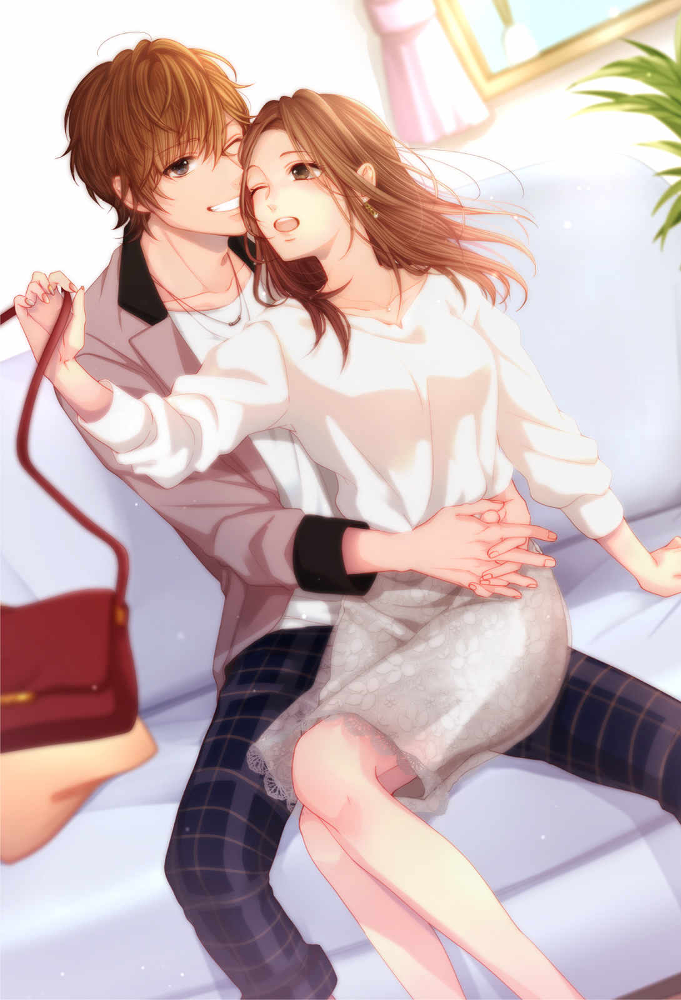
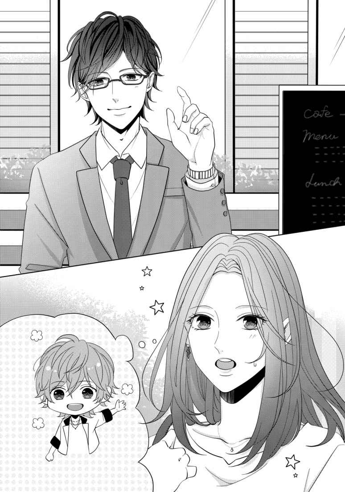
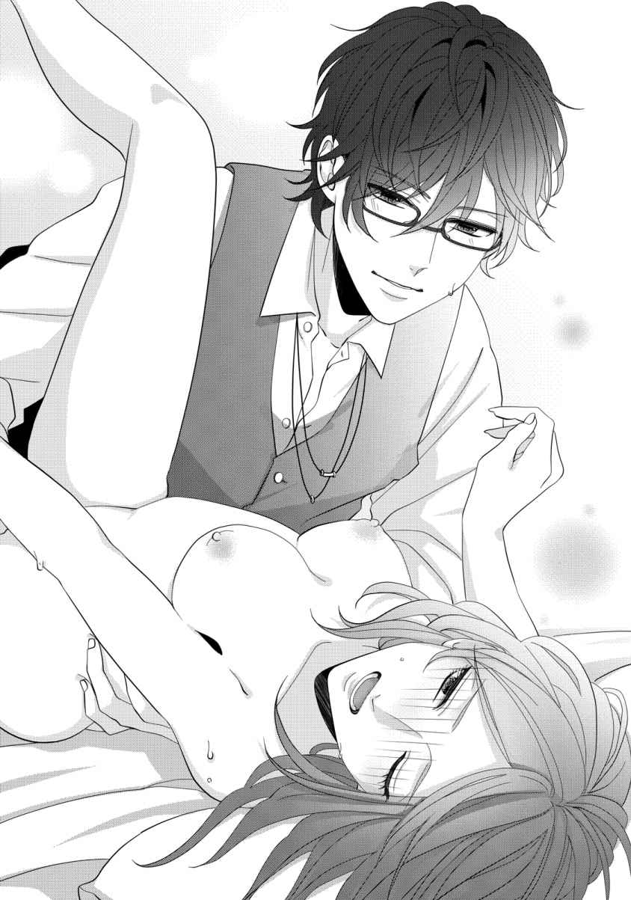
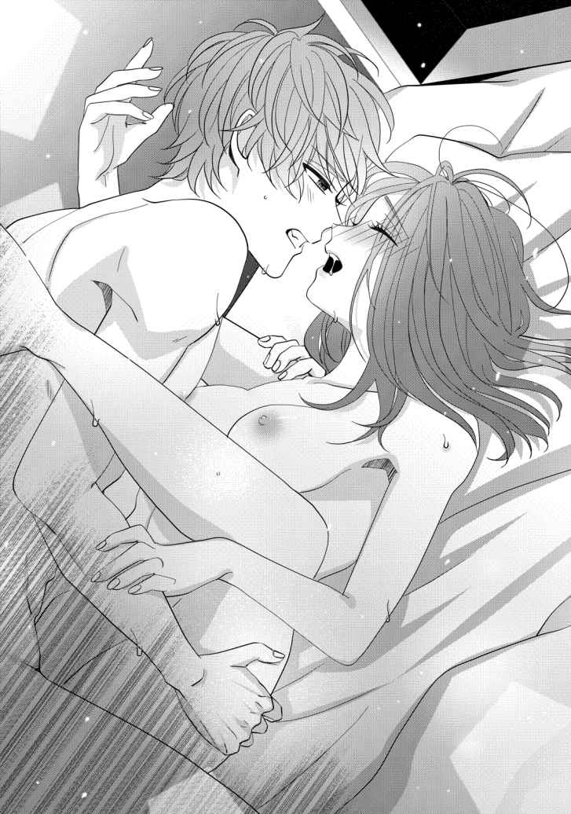
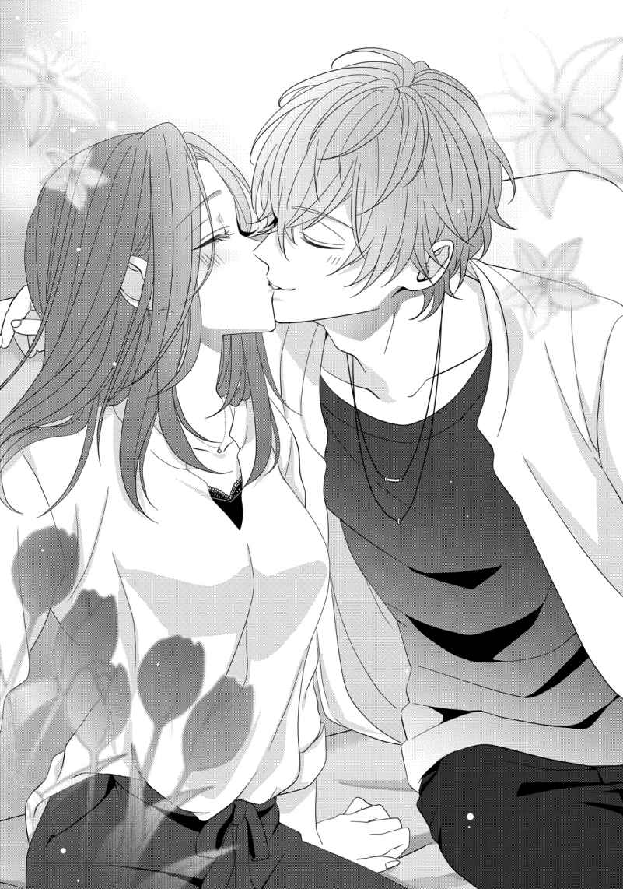

| 【全1-6セット】助けた男は人気俳優でした 年下彼氏の執愛包囲にご注意【イラスト付】 (チュールキス) | |
| 南ひかり | |
| 株式会社ジュリアンパブリッシング (2019) | |

この作品はフィクションです。
実際の人物・団体・事件などに一切関係ありません。
第一章
最悪の修羅場に遭遇してしまった。
不運とはなぜこうも重なるのだろうか。朝から人身事故で一時間の遅延、満員電車に揺られ、人混みをかき分けて出社する頃には大事な会議は終わっている。上司から冷たい目を向けられても人身事故なんて予期できるものではない。
買ったばかりのワンピースはしわくちゃで、早起きしてセットした髪もぼさぼさ。午後から打ち合わせがあるというのに、今日は朝から波乱の一日になりそうだと予感していた。
案の定、不運はそれだけで終わらない。
先輩が担当していた記事に誤りがあり、オープンしたばかりの飲食店から大クレーム。
その先輩は昨日で退職しており、電話を取った私が店まで謝罪に向かった。
へろへろになって戻れば、自分のデスクには本日締め切りと書かれた原稿が山積みのままだ。
最近、印刷所も働き方改革を積極的にはじめ、締め切りを過ぎると高額な特急料金を請求される。
他の社員が次々と帰って行く中、締め切り一分前に来月号の原稿を提出し、雑務を終えた頃には深夜一時。
終電は終わっており、あえなくホテル宿泊が決定。
目の前にベッドがあったら今すぐ飛び込んでしまいそうなぐらい眠いというのに、体力が底を突いてフラフラだ。さらに履き倒したハイヒールが追い打ちをかけてくる。ローヒールのパンプスで出勤したいと思いながらも、美意識の高い社員や取引先に囲まれ、髪から爪先 まで手を抜けない。誰に言われたわけでも社内ルールでもないのに気を抜けばおしまいだ。
株式会社レクラスは、新宿 に拠点を置く出版社だ。
私はこの会社で、情報誌のライターとして働いている。近年はネットに主軸を置き、恋愛コラムやモテファッションを取り扱う女性向け恋愛総合サイト『ＰＭ』の運営も担当している。
アルバイトを含め従業員数十八名の小さな会社だが、歌舞伎 町 という立地のよさ、そして社長が元大手出版社の編集長であるため横の繋がりも多く、業績は上昇している。だが残業時間は長く、癖のある取引先も多いせいか、体調を崩しすぐに辞めていく社員も多いのが現状だ。
会社を出れば眩 しいネオン街。
新宿のド真ん中にあるオフィスは一見、景気がよく勝ち組のようにも見えるだろう。
しかし私の場合、こんなところで知り合いとバッタリ会ったらおしまいだ。
絶対に仕事の内容を知られるわけにはいかない。
誰が言えるだろうか。
未だ男性経験ゼロの女が、歌舞伎町で恋愛コラムを担当しているなどと。
歌舞伎町を抜けてホテル街に進むと、駅前の喧噪 とはまた違った雰囲気が漂う。
いくら土地勘があるといっても、深夜に女の一人歩きは危険だ。
周囲を気にしながらいつものホテルへまっすぐ足を向けたときだった。
そう、本日最後の不運な展開である。
「どうしてだめなの！ ハルくん私のこと好きって言ってくれたじゃん！」
「好きだよ。だからもっと時間をかけて、真奈 ちゃんのこと大切にしたいな」
「私のことが好きなら今すぐえっちして！」
こんな夜中に修羅場に遭遇してしまったのである。
毛先まで綺麗に巻かれたカール、派手な化粧に下着が見えてしまいそうなほど短いドレス。
近くのキャバクラ嬢だろうか。対して男の方は地味な帽子を深く被ってマスクをつけている。
――どういう関係？
普通は客がキャバ嬢をホテルに連れて行くことが多いが、どう考えても女性の方が男の腕を掴んでラブホまで引き込む勢いだ。
だが、男も引かない。かかとに重心を乗せて、ホテルに引っ張られる様子はなさそうだ。
枕営業を断る男もいるのか。このエリアで仕事を続けていると、感覚が麻痺 してくる。
自分とは価値観が違いすぎてもはや同じ種族なのかと疑うこともある。
そんな世界で、この男はかなりめずらしいタイプだ。
しかし、今はとにかく早く休ませて欲しい。
だがこの狭い道を通り抜けないと、いつも泊まっているホテルへ辿 り着けないのだ。
「一回だけでいいの。お金ならいくらでも払うから！」
「真奈ちゃん、お金の問題じゃないんだ。もっと自分を大切にして？」
「私はハルとえっちしたいの！」
男が丁重に断っている中、女性は一切引く気配がない。明らかに男も困惑している。
――私には関係ない。
こういうときは無視が一番だ。厄介事には関わらない方がいい。
スマートフォンでも見ているふりをして、さっさと素通りしてしまおう。そう思って鞄に手を突っ込むが、女性の叫び声がキーキーと耳に響く。
「えっちしてくれないならこの場で死んでやる！ ハルに強姦 されそうになったって叫んでやる！ あんたも殺してやるからね！」
支離滅裂な発言をする女性に、私はついに立ち入ってはならない境界線を越えてしまう。
「ハル！」
声をあげると、女性の叫び声がぴたりと止まった。
――どうしよう、どうしよう、どの設定でいけばいい!?
「あんた誰？」
憎悪 に満ちた女性の視線が突き刺さる。
これは下手をすれば私が最初に死ぬことになりそうだ。
「誰って......ハルの姉ですけど」
――姉！
咄嗟に出てきた言葉に自分で驚いてしまう。
だがそれでよかったのか、女性はぽかんと面を食らったように目を丸くする。
カツカツとハイヒールを鳴らして二人に近づく。ここで弱さを見せてはだめだ。高圧的な女にならなければ負けてしまう。
「うちの弟に何か用？」
女性を睨 みながら、ちらっと男に視線を向ける。
とにかく私に合わせてと視線で訴えると、男が小さく頷 いた。
「貴方 、ハルの彼女？」
「そうです」
絶対に違うと思いながらも、両腕を組んで女性を見下ろす。
「本当に？ ハルは嫌がってるように見えたけど？」
「違います。ハルくんは恥ずかしがってるだけで本当は私と同じ気持ちですから」
背後で男が小さく首を左右に振る。わざわざ否定しなくても状況を見れば分かる。
とにかくこの女性、正面からぶつかっても簡単には引かなさそうだ。
――ここは戦法を変えるしかない。
「ハル、あんた今日は早く帰るって言ってたじゃない。どうしてこんな時間に女の子といるの」
「え!? 」
「ちゃんと説明して」
いきなり不意をつかれて驚いているようだったが、とにかく話を合わせてもらわないと進まない。居心地が悪くなりながらも返事を待っていたが、頭の回転は速いようですぐに状況を飲み込んでくれたらしい。
「ごめん。姉ちゃんにこれ以上迷惑かけたくなくて......だから......」
「私に嘘ついてたってこと？ 私、嘘が一番嫌いだって知ってるでしょ？」
「分かってる！ でも両親が死んで、ずっと姉ちゃんに育ててもらって、心配かけないようにって......！」
――この子、演技上手いわ。
感心しつつも、どこで終わらせればいいのか。下手をすればこのまま壮大なストーリーが広がっていく。
「ハルの気持ちは分かった。とにかく家でちゃんと話し合いましょう」
ここで一気に畳みかけようと、置いてけぼりだった女性に視線を向ける。
「というわけで今日は弟と大事な話があるの。悪いけど日を改めてもらえない？」
「ごめんね真奈ちゃん、また今度ちゃんと話すから」
男は申し訳なさそうに手を合わせながらも、内心は早く帰ってくれという気持ちでいっぱいだろう。
こんな手で本当に通用するのだろうか。どう考えても顔は似ていないし、偶然にしては話が出来すぎている。
これ以上ヒステリックを起こして暴れられては敵わない。
びくびくしながら反応を待っていると、女性は急に涙を流して、私の腕を掴んだ。
「ハルくんを責めないでください！」
予想もしなかった展開に驚きながら、こくこくと頷く。
「え、ええ......分かった。分かったから今度またゆっくりお話してあげてね」
「ハルくん、仕事が辛くなったらいつでも言って。ハルくんを養えるだけの貯蓄はあるから！」
「ありがとう真奈ちゃん。大好きだよ」
彼女の手を取って、手の甲に口づけを落とす。
――そういうことをするからこんなことになったんだぞ。
そう思いながらも、黙って様子を眺めることしかできない。
「これタクシー代。今日は本当にごめんね」
「お金なんかいらないから、お別れのキスして？」
「だめ。姉ちゃんの前だもん」
照れくさそうに顔を赤らめる男に、やっぱり助けなければよかったという後悔が一瞬頭をよぎる。
女性を乗せたタクシーを見送ると、男と二人きりになった。
よし、これで問題は解決した。あとはまっすぐ道なりに進んでホテルで寝るだけだ。
「じゃあ私はこれで......」
これ以上はもう体力が残っていない。
とにかく早く寝たくて仕方がない。明日も仕事なのだ。
朝から打ち合わせ、取引先と取材の交渉、夜は社内会議が待っている。
だがそのときだった。
立ち去ろうとした寸前、男に腕を掴まれ、ぐっと背中に手が回り抱き寄せられてしまう。
「ちゃんとお礼させて？ お姉ちゃん」
――今日はやっぱり厄日だ。
満面の笑みを浮かべる男に、やっぱり助けなければよかったと後悔した。
「結構です。疲れてるのでもう行きますね」
瞼 が今にも閉じそうだ。ここで気を失うわけにはいかない。一刻も早く目的地へ向かいたいというのに、腰に回された手が離れていく気配はない。
どう考えても普通に犯罪だ。だが押し返す力も残っておらず、脱出できない。
「俺もお姉さんち行っていい？」
――だから、どうしてそうなる！
さっきまで頑なに枕営業を拒否していた男の発言とは思えない。
さては相手を選んでいただけか。さっきの女性も可愛くてお金持ちそうだったのに、あのヒステリックさが減点ポイントだったのだろうか。
いや、そんなことはどうでもいい。とにかく寝たい。ただそれだけだ。
「いい加減にしないと警察呼びますよ」
最後の力を振り絞って男を突き放す。
すると驚いた様子でぱちぱちとまばたきを繰り返した。
「もしかして、俺が誰か分からないの？」
「はあ？」
いきなり何を言い出すのかと間抜けな声が漏れる。
すると男がマスクを取った。知り合いだったかと男の顔を見るが、全く見覚えがない。取材で名刺交換をした相手は大体覚えているが、仕事関係ではなさそうだ。
「ごめんなさい。どこかでお会いしましたか？」
首を傾 げると、男は驚いたように目を見開いた。
「本当に分からない？」
「え、ええ......すみません」
記憶の糸を辿ってみるがやはり思い出せない。気まずい沈黙が流れたあと、男が急に大声で笑った。
「お姉さんすっごく面白いね。はじめてのタイプだよ」
唐突な発言に頭が真っ白になる。一方的に責められて可哀想だと思い助けたが、もしかすると被害者は女の子の方だったのかもしれない。
「今からバーでもどう？ もちろんお金は俺が出すし、この近くなら開いてる店も――」
「出会ったばかりの相手にほいほいついて行くわけないでしょ！ しかも身元不明のチャラ男！ 信用できる要素ゼロ！」
「でも助けてくれたでしょ？」
「助けたのはつい身体が動いちゃったの！ 黙って素通りできないでしょ！」
眠すぎてもはや頭が正常に働かない。自分でも何を言っているのか分からず感情のままに言葉をぶつけていると、男がぽかんと口を開いた。
「そっか......うん、そっか」
何がそんなに嬉しいのかさっぱり分からない。
とりあえずもう立ち去ってもいいだろうと背を向けると、今度は隣に並んでくる。
「せめて家まで送らせて。こんな時間に女の子ひとりじゃ危ないよ」
もう女の子って歳でもないというのに、不覚にもきゅんとしてしまった自分が腹立たしい。なるほど。こうやって女性を落としていくのか。今度、記事にしよう。
「家じゃなくてホテル。すぐそこだし一人で大丈夫だから」
「ホテル？ お姉さんホテル暮らしなの？」
「残業で終電逃したの」
「忙しいんだね。なんの仕事？」
「言うわけないでしょう。貴方も早く帰ったら？」
「そのつもりだったけど、お姉さんと一緒にいる方が楽しそう」
――なんなんだこの男は。
新宿で働いていれば毎日のように個性的な人々とすれ違うが、ここまで引き下がらないのは初めてだ。
暗くて意識していなかったが、よく見れば中性的で端正な顔立ちをしている。スタイルもよく、すらりと長い足が目を引く。何を着てもかっこよく着こなすタイプだ。伊達 に長年、新宿で情報誌のライターをやっているわけではない。身なりを見れば大体の職業は想像がつく。
「見たところホストかバーテンダーってとこでしょ。お店に戻ったら？」
大方、さっきの女の子は店の常連客という感じだろう。
「あっはっは！ お姉さん本当に面白いね！」
すると男はまた声をあげて笑い出す。いちいち癇 にさわる男だ。
「一人で行けるからもう帰って」
「やだ。お姉さんともっと一緒にいたいもん」
――つ、疲れる。
こんなイケメンに迫られて喜ばない女子はいないだろうが、今の私のメンタルでは単純に迷惑以外のなにものでもない。
無視しよう。これ以上は会話するだけ無駄だ。どうせホテルまであと数百メートル。そこで別れて終わりにすればいい。
適当にあしらいながら歩いている間に目的のホテルに到着した。
これでようやくお別れできる。左手の時計に目を向ければ、時刻はもう二時を過ぎていた。
「じゃあ私はこれで。仕事頑張って」
もしかしたら取材でばったり出くわすこともあるかもしれないからと、仕事用の作り笑顔を浮かべる。
「待って。行かないで」
ホテルの自動ドアが開く寸前、男が前に立って私の行く手を塞ぐ。
「お願い。ちゃんとお礼したいから連絡先教えて。あと名前も」
「だから......」
「助けてもらってすげー嬉しかった。だから今度改めて、お礼をさせてください」
さっきまでニコニコしていたとは思えないぐらい真面目な顔をしていた。
きっちり九十度、深々と頭を下げる姿に根気負けしたのはこちらだった。
分かった、とため息をついて鞄からスマートフォンを取り出す。連絡先を教えると、さっそくパンダのスタンプが送信されてきた。
「今野 綾 ちゃんね。綾ちゃんって呼んでいい？」
いきなり馴れ馴れしいなと思いながらも諦めて頷く。抵抗する方が疲れてしまう。霞んだ目で送り主の名前を見ると、先ほどとは違った名前が表示されていて首を傾げる。
「朝夏 奈津 ......？ 読み方あさかなつで合ってる？ でも名前ハルじゃなかった？」
「うん合ってるよ。ハルはあだ名ってことにしておいて」
「やっぱりホストなんでしょ」
「そういうことでいいよ」
何が面白いのか一笑する男に、苛立ちが増していく。
年下の男に遊ばれている。営業メールを送ってきても絶対に返信しないからと目線で訴えていると、彼は柔らかく微笑 んだ。
出会って数十分の相手によくここまで心が開けるなと感心しつつ、はあ......と短い返事しか返せなかった。
「じゃあ今度こそこれで」
「ホテル代だすよ」
そう言って財布から無造作に福沢 諭 吉 を数枚掴んで手渡してきた。
たった一泊、カプセルホテルに泊まるぐらいでそんな大金するわけがないだろうと絶句する。
「このホテルそんなに高くないから！ ていうか自分で払えるから！」
「じゃあお釣りは好きに使っていいからさ」
「だーかーらー大丈夫だってば！」
これ以上は埒 があかないと思い、お金を突っ返してホテルに入る。追いかけてくる気配はなかったが、急いでチェックインを済ませてエレベーターに乗り込んだ。
――とんでもない男を助けてしまったかもしれない。
面倒ごとには首を突っ込むな。分かっていたはずなのに、後悔したところでもう遅い。
部屋に入るや否やついに体力は尽き果て、ベッドにダイブした瞬間、気絶するように意識を失った。
＊＊＊
今日は朝から不運の連続だった。
朝から映画の撮影が押し、夕方の取材は遅刻。夜はテレビ局のプロデューサーにキャバクラへ連れて行かれ、興味もない女に付きまとわれる始末。
最悪の一日だったが、最後の最後に運命の出会いが待っていた。
プルルルルルル
深夜の雑音に紛れて、無機質な呼び出し音が響く。
電話越しの相手はおそらく寝ているのだろうが、そんなことはお構いなしにコールを鳴らし続ける。
「おいハル、今何時だと思って......」
電話の音で起きたのだろう。不機嫌そうな声が聞こえる。
「ユウヤ聞いて！ 俺好きな人できたかも！」
「はあ!? 」
あまりの衝撃に眠気が吹き飛んだのか、電話越しの相手は声を荒げた。
「相手は女優か？ モデル？ アイドルか？」
「一般人！ キャバ嬢とモメてるときに助けてもらった！」
「一般人って、お前大丈夫なのかよ。ホテルで写真撮られたりとか......」
「大丈夫！ 俺のこと知らないみたい！」
「俳優の蒼 田 ハルを知らない女がいるわけねえだろ！ 騙されてんじゃねえの？」
「俺もそう思ったんだけど、本当に知らないみたい。何ならホストとか言われたし！」
「ホスト!? ていうかお前に人を愛せる心があったのか？ 本当に俺の知ってるハルか？」
「ひでえ言い方だな。二十歳すぎても童貞のお前に言われたくねえわ」
「うるせえ黙れ！ あ～～とにかく今からウチ来い！ 詳しく聞かせろ！」
「おっけー。タクシー拾うから二十分ぐらいで着く」
――綾ちゃん、綾ちゃん、綾ちゃん！
彼女の名前を刻み付けるように何度も頭の中で呼び続ける。
「これから面白くなりそう」
大通りでタクシーを拾うと、奈津を乗せた車は静かに走り出した。
＊＊＊
新宿といえば歓楽街のイメージであるが、東京 都庁や官公庁、さらには数多くのオフィスを有している。
飲食店やラブホテルが連なる歌舞伎町は東エリアにあり、西エリアには百貨店や家電量販店、高層ビルが立ち並んでいる。駅の出口によって、がらりと雰囲気が変わる街だ。昼夜問わず人混みにあふれ、人の多さに精神をやられて去っていく人間も多いだろう。
「おはようございます」
フロアを見渡すと、他の社員も残業続きで顔が死んでいた。外は雲ひとつない青空だというのに、この世の終わりのような絶望感が漂っている。ゾンビ化したフロアをふらふらとさまよう社員、感染するようにすぐに入れ替わる派遣社員、バイトスタッフ。
求人広告では、〝新宿のど真ん中 お洒落なオフィスでライターデビュー 高収入！〟を謳 ってはいるが、はっきり言って詐欺だ。月給は一見高そうに見えるが、残業代込みだと考えると恐ろしく安い。そうでも書かないと応募がないというが、応募があったところで現実がこれでは意味がない。新人教育するだけ無駄だ。
つい数時間前まで起動していたパソコンを再起動させると、デスクトップ画面に切り替わる。唯一の癒しは、壁紙に設定した実家の柴犬だ。心が折れそうになったときもこの壁紙を見ると、少しは落ち着きを取り戻す。
――今日は終電で帰れますように。
定時退社など夢のまた夢。もはや感覚が麻痺している。メールソフトを起動し、昨日の退社時間から遡 っていく。
平和な朝だ。今日は幸先がいい。もしかしたら終電の一本前には帰れるかもしれない。そう思っていると、鞄の中でスマートフォンのバイブ音が振動した。
『綾ちゃんおはよう！ 昨日は助けてくれてありがとう。お礼がしたいのでご飯に行きませんか？』
――奈津？ ......昨日の子か。
すっかり忘れていた。昨夜、キャバ嬢に絡まれて困っていたホストだ。お礼なんていいと何度も断ったが、連絡先を教えてくれないと帰らないとごねられてしまい仕方なく教えたのだ。
それよりも時間を作れるだろうか。気持ちは嬉しいが、平日は何時に退社できるか分からない日々が続き難しい。土曜日も休日返上で仕事、唯一休める日曜日は魂が抜けたように自宅のベッドで死んでいる。
しかも相手はホストだ。馴れ馴れしく、明らかに私とは価値観が違う。できれば関わりたくないタイプだ。
すみませんが仕事が忙しいのでお気持ちだけいただいておきます、で問題ないだろう。
さっさと済ませておこうとその場で返信すると、すぐに既読の文字がついた。
『綾ちゃんの予定に合わせるよ！』
――やばい。めちゃくちゃ面倒なタイプだ。
空気を読む術 を知らないのか、それともわざとなのか。
――これだからお気楽ホストは！
こちらの都合などお構いなしに話を進めてくる。
見なかったことにしよう。人生初の既読スルー。マウスを握りしめて、モニターに視線を向ける。これでさすがに分かるだろうとスマートフォンを放置し、夜中の間に届いたメールを淡々と処理していく。
ヴーヴー
ヴーヴーヴー......
ヴーヴーヴーヴー......
――うるさい！
スマートフォンの電源を切って鞄の奥底へ押し込んだ。
やはり人助けなんてしなければよかった。キーボードを打つ手に力が入り、タイピング音が鳴り響く。
今日もカタカタ、カタカタと。
仕事に向き合って、変わらない日常を繰り返す。
胸の奥底に宿る感情に気づかないふりをして、耐えるようにきゅっと唇をかみしめた。
夕日も沈んだ頃に、ようやく仕事が一段落ついた。
朝から恋愛の記事作成は精神への負担が大きい。
今月のテーマは、女性の初エッチ体験特集。未体験の女性から様々な質問が寄せられているが、同じく処女である私がアドバイスなどできるはずもなく、市場リサーチと想像でなんとか執筆している。このテーマは年に一回は取り扱われ、反響も大きい。恋愛記事と言いながらセックスに関する内容はそれだけ需要があるということである。
――みんな初体験、早いよね。
毎年必ず市場調査をしているが、年々初体験の年齢が早くなっている。中学生ならまだしも、十歳や十一歳で済ませたという話を聞くと、真実を疑うほどだ。私が小学生の頃は、セックスという言葉すら知らなかったというのにすごい世の中だ。
でも昔の人は結婚も早かったというし、驚くことではないのかもしれない。
自分では考えられない環境に驚愕 しながらもようやく校了になり、ほっと息をついた。
ご飯を買いに行こうと、日が沈んだあとに昼休憩を取る。冷静に考えると意味が分からないが、すっかり生活リズムになってしまった。幸いテナントビルの一階は二十四時間営業のコンビニで、毎日お世話になっている。
カップ麺か、チャーハンか、パスタか。
いつもと同じメニューの中からどれにしようかと悩み社用エレベーターに乗った。
鞄からスマートフォンを取り出すと、ボタンを押しても画面は真っ暗のままで首を傾げる。そういえばあの男のせいで電源を切っていたことを思い出し、疲れがどっとあふれた。嫌な予感がしながらも、おそるおそる起動させると尋常ではない数の通知が届いた。
『綾ちゃん大丈夫？ 仕事忙しい？』
『今日も夜遅いなら、家まで送るから言ってね』
『変な事件に巻き込まれてないよね？ 俺心配だよ』
――絶対にやばい男だ。
本能的に既読にしてはいけない空気を察知し、無言で通信アプリを閉じる。
関わっちゃいけない。返事をすれば最後――つきまとわれてストーカー化される未来が見える。店の営業ならもっと他に相手がいるだろう。どうしてよりにもよって私なのだ。
イケメンだから何でも許されるわけではない。
付き合ってはいけない男ナンバーワンだ。このままブロックするのが一番なのだろうが、同じエリアで働いている以上、また遭遇してしまう可能性がある。変に逆恨みをされても面倒だ。
どうしたものか。
こういうときは経験豊富な友人に相談しようとしたとき――ふと電話の不在着信に気づく。
『不在着信：父』
ディスプレイに表示された名前を見て、サッーと血の気が引いていく。
気づかなかったことにしたかったが、そんなことをすれば余計に状況が悪化するのは目に見えていた。深呼吸をして心を落ち着かせる。
――絶対にバレないようにしなきゃ。
速くなる鼓動をなんとか落ち着かせる。一大決心をして電話をかけ直すと、心の準備をする暇もなく父に繋がった。
「もしもし、私。ごめん仕事中だったから出られなくて」
「それはいい。仕事は順調か？」
「もちろん。忙しいけど充実してるし、このまえ昇格したの。後輩もたくさん入ってきて私もそろそろ中堅に......」
「わざわざ東京の大学に進学させたんだ。充実した仕事じゃないと困る」
相変わらず厳しい口調の父に、乾いた笑いが漏れる。
「それで男はできたのか？ お前も歳なんだ、いい加減、結婚相手を見つけないと売れ残るだろう」
売れ残るってひどい言い方だ。そもそも私は売りに出してなんかいないし、日々生きていくことだけで精一杯だ。
だが、父には何を言っても無駄だと分かっている。反論したところで火に油を注ぐようなものだ。
「結婚相手が見つからないなら、こっちに帰ってきて見合いをする約束だっただろう」
――忘れていた。
そういえば上京するとき、そんな約束をしていたような気がする。当時は早く家を出たくて何でも父の言うとおりにする約束だったのだ。
――田舎に戻ってお見合い？ また両親の近くに住む？
やっと逃げられたのに、またあの家に戻るなんて考えたくもない。
「か、彼氏ぐらいいるから！ 結婚にも前向きだし」
咄嗟に出任せの嘘が口から飛び出した。
「どこの会社に勤めている？」
「お......大手広告代理店の総合職！ 学歴も年収も私より遥かに上だしイケメンで上司にも期待されていて出世は間違いなし！ 役員候補だって！」
心臓が破裂してしまいそうだ。電話越しでよかったとつくづく思う。
「本当なんだな？」
「も、もちろん......」
「分かった。会わせろ」
「え？」
「次の日曜日だ。十一時二十八分着の新幹線で東京駅に着く。お前の結婚相手にふさわしいか判断してやる」
「待ってよ！ そんな急に――」
ツーツーツー。
一方的に通話が切れ、その場に立ち尽くす。
やってしまった。だが後悔したところでもう遅い。他に選択肢がなかったのだ。
大企業で、イケメンで、私より遙かに年収も上......。
いるわけがない。記憶の糸をたぐり寄せ、片っ端から当てはまる知り合いがいないか確かめてみるが、そもそも男友達すらほとんどいない。
しかもみんな結婚しており、さすがに嘘をついてもらうわけにもいかないだろう。
期限は次の日曜日。三日後だ。
途端に食欲がなくなり、何も買わずにオフィスに戻る。奇跡が起きないかとフロアを見回してみるが、該当する男性社員はいない。
絶対にバレるわけにはいかない。親の敷いたレールに連れ戻されて、永遠に説教を聞かされる未来はごめんだ。
なんとしてでも、この場所にしがみつかなければならない。
誰か。
誰か。
――イケメンで、年収も高くて、彼氏だって嘘ついてくれそうな人。
そのときだった。
ピコンと小さな音を立てて、スマートフォンに通知が届く。
『仕事はもう終わった？ 俺にできることなら何でもするから言ってね』
――いた！
だがこんな粘着ストーカーに頼んでしまえば、またトラブルに巻き込まれる予感しかしない。
頭の上で悪魔と天使が囁 く。
頼んでしまえ。本人もお礼をしたがっているから丁度いい。
素性 も分からない人に頼むなんて危ない。それに嘘だってバレるかもしれない。得体の知れない人に彼氏のふりなんて簡単にお願いできることではない。
すると父からメールが届き、咄嗟に開封する。
『今野家にふさわしくない男だったら帰って見合いをしろ』
――この男にお願いしよう。
藁 にも縋 る思いでアプリを開いて、素早く文字を打つ。
『本当になんでもしてくれる？』
するとすぐに既読がついた。
『する！ なんでもするよ！』
一か八か。悩んでいる時間はない。
勢いでなんとかするしかないと決意し、肝心の用件を打ち込む。
『一日だけ彼氏のふりをしてほしい』
それが破滅へと導く言葉だとも知らずに、私は送信ボタンを押した。
もしかして今年は厄年なのかもしれない。
前世も占いも全く信じていなかったが、人間という
は悪運の周期があるのではないかと思えてきた。
――勝負の一日が始まる。
彼とは父が来る前に打ち合わせするため、十時に東京駅付近のカフェで待ち合わせをしている。
素性もわからない粘着男に彼氏役を頼み、大企業、役員候補の二大肩書きを付け足して、トドメは結婚前提。
演技だからと何度も念押したが、当の本人が理解しているのか定かではない。まるで悪魔と取引をしてしまった気分だった。いや、召還したのはこちら側なのだから彼に否はないのだが。
これで付きまとわれたらどうしよう。ていうか両親にバレたらどうしよう。
それ以前に、ホストが大企業勤めの爽やかイケメンに化 けることはできるのだろうか。一番心配なのはそこである。
頼んでおきながら自分勝手な女だと自覚しながらも、今更他に手はない。
クローゼットから白のトップスとネイビーのレーススカートを引っ張り出す。あとは就職祝いに母から貰ったピンクゴールドのネックレスを合わせればいいだろう。
――まずい。もう家出なきゃ！
せっかくの休日だというのに仕事以上に胃が痛い。もう後には引き返せないところまできてしまったのだ。
ベージュのパンプスを履いて玄関で深呼吸をすると、重い足取りで自宅を出た。
電車を乗り継いで東京駅へ到着し、スマートフォンを開く。彼からはすでに着いていると連絡が入っており、急いで集合場所へ向かう。
ホストなのに朝から申し訳ない。きっと夜遅くまで働いていたはずだ。そんな中でも無茶な要求に応えて来てくれるあたり、いい人なのかもしれない。
だが問題は父にバレないかだ。美容院代も服代も含め費用は全部出すと言ったが断られてしまった。
憂鬱だ。とんでもない格好で来ていたらどうしよう。とにかく不安を拭えないまま待ち合わせのカフェに着いた。
「綾ちゃん、おはよう」
「え......？」
店の前でひらひらと手を振る男に思わず立ち尽くす。
一瞬、誰だか分からなかった。明るかった髪色は艶 のある黒髪に染まり、さらりと美しく揺れる。黒縁の眼鏡をかけて、朝からぱっちり開いた目元はチャラさの欠片もなく、もはや別人だった。

しわひとつないチャコールグレーのスーツには、白シャツとネイビーの無地ネクタイを合わせ、清潔感のある印象に。腕にはさりげなく高級ブランドの時計、足元は濃いめのブラウンシューズできっちり引き締めている。
――嘘でしょ。本当にあの粘着男なの？
おそらく年下なのだろうが、品格のあるその姿は、まさに理想の彼氏そのものだった。
唖然としながら距離を詰めると、店内へ入っていく。
「綾ちゃん、何飲む？」
「じゃあブレンドコーヒーで......」
「ブレンドコーヒーふたつください」
幻でも見ているのではないかと頭が真っ白になっていると、彼が財布を取り出す。慌てて私が払うと言ったが、取り合ってもらえず結局私の分まで彼が払ってしまった。
正方形のテーブルを挟んで座り、コーヒーカップに口をつける。
まつげが長い。あの日は深夜だったからよく見えなかったが、こうして明るいライトの下で見ると、改めて綺麗な顔をしている。
「どうかな？ 大企業の爽やかイケメン風にしてきたつもりだけど」
「本当に朝夏くんなの？ この前とは違う人みたい......」
「奈津でいいよ。彼氏なら名前で呼んだ方が自然でしょ？」
「た、確かに......」
私より遥かに落ち着いた口調で話し、柔らかい笑みを浮かべる。その姿に、ストーカー並の粘着質で連絡をしてきた男だということを忘れそうだ。偶然とはいえ、一度助けただけの相手によくここまでしてくれるな、と罪の意識が重くのしかかる。
「ごめんなさい、こんなことに巻き込んで」
「なんで？ 俺は綾ちゃんに頼ってもらえて嬉しいよ」
返しまで完璧だ。非の打ち所がない。
「それで、今日のことなんだけど......」
「分かってるよ。大手広告代理店、東栄堂 の総合職で爽やかエリート設定。しかも役員候補、でしょ？」
「本当にごめんなさい......」
もはや謝罪の言葉しか出てこない。
自分で頼んでおきながら恥ずかしくて死んでしまいそうだ。
「ひとつ聞きたいんだけどなんで東栄堂？」
「うちの父が大企業じゃないと認めない人で。東栄堂なら誰でも聞いたことがある大企業だし安心でしょ」
「厳しいんだね。じゃあ綾ちゃんも大手勤め？ 同じ広告系？」
無垢 な笑顔で痛いところを突かれ、言葉に詰まる。
「そ、そうだけど......どこかは言えない」
――い、言えるわけがない。
彼氏にはこれだけ設定を盛っているくせに、自分は中小企業の出版社勤めだなんて。
嫌な汗が流れる。どのみち奈津とは今回限りの関係だ。多少、彼氏の設定に合わせて見栄を張るぐらい許されるだろう。
それに勤務先を知られてしまえば、会社まで来てしまいそうだから恐ろしい。
「あの辺りの広告会社なら――」
「探りを入れるのはなし！ 今日の段取りを説明するから聞いて」
「じゃあ上手くいったらどこで働いてるのか教えてね」
上手くいったあとも問題は山積みになりそうだ。だが今は目先の問題をクリアするのが先決だろうと、昨日徹夜で考えた細かい設定メモを取り出し、来 る一時間後に備えて打ち合わせを重ねた。
待ち合わせは、丸の内中央口を指定した。
時間ぴったりに新幹線は到着し、いよいよ運命の瞬間がやってくる。
広い東京駅構内で、果たして両親は辿り着けるだろうか。間違って八重洲口に行っていないだろうかと心配しつつも、できれば会いたくないという葛藤 も込み上げてくる。
バレたらすべて終わり。努力が水の泡。実家に強制送還されて知りもしない男とお見合いコースまっしぐらだ。
「本当にお願い。失敗するわけにはいかないの......」
「任せて。演技には自信あるからさ」
楽しむような目つきで、奈津が不敵に笑う。
運命を委 ねた男は、つい先日出会ったばかりの身元不明ホスト。本当に大丈夫なのかと心配しかないのだが、当の本人は余裕の表情だ。ホストなら女性客を相手に演じることは慣れているのだろうが、相手が両親となると話は別だ。
そして――。
両親が人であふれ返った改札口を出てきた。手を降ると先に母が私に気づき、こちらへ歩いてくる。
「綾、久しぶりね」
穏やかな口調で母がそう言った。言葉を返すが自分が今どんな顔をしているのか分からない。父が無言のまま私を見たあと、すぐ隣に立つ奈津に視線を向ける。
「初めまして、今野綾さんとお付き合いをさせていただいております朝夏奈津と申します。本日は遠くからご足労いただきまして、ありがとうございます」
生真面目な声で奈津が深々とお辞儀すると、母は口元に手を当てて驚いていた。
――第一関門は突破！
だが問題は父だ。先ほどからじっーと睨むように奈津に視線を向ける。奈津は臆せず正面から父を見つめ返した。この沈黙が怖くて仕方がない。耐えきれず二人の間に入り、店に行こうと案内する。両親が好きそうな駅近のレストランを予約しておいたのだ。
「お母様、荷物をお持ちいたします」
「やだお母様だなんて。でも軽いから大丈夫よ、ありがとう」
母はすっかり奈津を気に入った様子だった。
そりゃそうだ。この容姿で気に入らない女性はいないだろう。人を見た目で判断してはいけないが、やはり第一印象は大事だ。
私は父と並びながら前を歩く二人を眺めていたが、奈津のエスコートは完璧だった。道順の案内はスムーズで、話題も母が好きなガーデニングを掘り下げ、話を盛り上げるトーク術。横断歩道では青になると左右を確認してから母に歩かせる。
さすがとしか言いようがない。これには父もびっくりしただろうと横目に見るが、相変わらず静止画のように表情ひとつ変えない。そのくせ視線は奈津に向いているものだから恐ろしくてたまらない。
「ど、どう......？ 爽やかだし、優しいし、いい人でしょ？」
「外見で判断はできん」
氷柱 が胸に突き刺さるような一言だった。
――油断はできない。
どうか何事もなく今日が終わりますようにと願い、予約していたホテルのレストランに入った。
「まあ素敵なお店。やっぱり東京は違うわねえ」
上機嫌の母の隣で、父は渋い顔をしたまま一言も発さない。無言でカボチャのスープを口元に運ぶだけだ。せっかく一流ホテルのフレンチレストランに来たというのに、緊張のせいか味がほとんどしない。
奈津のテーブルマナーは大丈夫かと内心ドキドキしていたが、心配の必要は一切なかった。
「改めまして、綾さんとお付き合いをさせていただいております朝夏奈津と申します。仕事は東栄堂という会社で、営業企画を担当しております」
「まあ......新聞やテレビでよく見るあの東栄堂かしら？」
「はい。主に新聞やテレビ、インターネットの広告会社です。今年で創業百二十年、現在の社員数は三千名を超えておりまして、今後も業績は伸び続けていくかと」
軽やかな口調で話す奈津の隣で、私は頷くだけで精一杯だった。
東栄堂は私が指定した会社だが、いつのまに創業記念も社員数も調べたのだろうか。でたらめを言っているわけではなさそうだし、何なら私よりも遥かに世の中の事情に詳しいのかもしれない。
しばらく食事を楽しんだあと、相変わらず無言を貫く父の代わりに、母が一気に話を詰めはじめた。
「それで、綾と奈津さんはいつからお付き合いを？」
「一年前の春です。綾さんとは会社の共同プロジェクトで親しくなりました」
「彼がプロジェクトリーダーだったおかげで新企画も大成功だったの」
「いえ、僕だけの力じゃありません。綾さんのような仕事のできる方がいてくださったおかげです」
さりげない出会いから、架空の業績まで完璧だ。これも綿密に打ち合わせを重ねた設定のひとつだ。奈津には大手勤めと言った手前、会話に矛盾がないよう気をつけた。
すると沈黙を貫いていた父が初めて口を開いた。
「なぜうちの娘を？」
解 けない敵対心が込められた声で、父がそう言った。
「正直、このプロジェクトは挫折も多く大変な仕事でした。でも、綾さんはいつも元気でチームを明るくしてくださっていたのです。決して弱音も吐かず、笑顔で皆を励ましてくれました。誰にでもできることではありません。その姿に惹かれました」
愛おしむように口元を綻 ばせて、奈津が私を見る。一瞬、まるで現実のように頭の中にその光景が浮かんだ。
そんなことはないのに。
私はただの中小企業のＯＬで、毎日文句ばかりで死んだような顔で働いているのに。
理想と現実の境界線を越えてしまった瞬間、ちくりと胸が痛んだ。
「君は将来、娘と結婚する気があるのか？」
――きた。
絶対にくると思ったこの話題。思いのほか早い段階で聞いてきたということは、彼に対して好感触なのだろう。
ちょうどそのタイミングでメインの肉料理が運ばれてくる。料理も話も一番大事な場面だ。祈る気持ちでテーブルの下で拳 を握りしめる。
「綾さんと幸せな家庭を築きたいと思っております。今はまだ勉強中の身ですが、将来は経営幹部を目指しております。綾さんや生まれてくる子ども達を支えるためにも、今以上に努力いたしますので、交際を認めていただけませんか」
奈津の完璧な答えに内心ガッツポーズを決めながらも平常心を保つ。
「綾はもうすぐ三十だ。家庭を持つ気なら早く昇進しろ」
――いやまだ数年あるんですけど！
どこか遠くに感じていた三十路 という新しいステージを突きつけられ視線が泳ぐ。
「はい。今以上に努力して、良いご報告ができるように精進いたします」
父の威圧に負けず迷いのない奈津の言葉に、ぽかんと口が開く。演技に自信があるのは本当だったらしい。
「料理が冷める。さっさと食え」
父がナイフとフォークを手に取った。それ以上は何も言わず、黙々と肉を切り分けて口元に運ぶ。その様子を見た母が、両手で小さく拍手を送る。それはまさに父に認められた瞬間だった。
――うそ。
思わず奈津と顔を合わせる。驚きを隠せず呆然としていると、奈津がウィンクを決めた。
今すぐお礼を言いたい衝動を抑えて、ナイフとフォークを手に持った。
けれどナイフを持つ手が震えて上手に切り分けられない。すると察した奈津が私の肉を切り分けてくれる。スマートな対応に完全に見る目が変わった。
もしかして、本当に良い人なのかもしれない。どこまで演技なのかは分からないが、こんなに自然に彼氏役を演じられる人は中々いないだろう。
あのとき、助けてよかった。
一時はどうなるかと思ったが、やはり徳を積めば自分に良いことが返ってくるのだ。もう恐れることは何もない。
食事を終えると、支払いは全て奈津が持ってくれた。あとで払うと視線を送ったが、小さく首を左右に振って口角を持ち上げる。
どこまで完璧な男なのだ。外見だけではなく中身まで最高に理想の彼氏だった。
――でも、これは演技なのだから。
後でちゃんと支払いをするため財布の中身を確認しておく。
店を出て、この後四人で観光でもするのかと思ったが、父は母と二人で行くと言ってタクシーを停めた。
「今日はお会いできて嬉しかったです。本来、僕がご挨拶に伺う立場なのにお越しいただきありがとうございました」
「いいの。私もスカイツリーに行ってみたかったから」
将来安泰、ハイスペックな旦那ができるとすっかり信じている母だが、この設定は今日限りのものだ。喉の奥が苦しくなりながらも、実家に連れ戻されるのは絶対に避けたい。早く去ってほしいと願いながらひきつった笑顔を向けると、父と目が合った。
「綾、結婚したら家庭に入れ。だがそれまで仕事は手を抜くなよ」
「......分かってる」
昔から嫌というほど聞かされてきた。いい加減にしてほしいと疲れながらも、ぐっと本音をこらえた。
「綾、奈津さん。また二人で帰ってきてね」
「近いうちにお伺いします」
ひらひらと手を振る母に、手を振り返す。
ようやくタクシーが見えなくなると、すとんと手が落ちた。
「好感触だったね。これならお見合いの話もなくなるんじゃないかな？」
整えた前髪をくしゃりと崩して、奈津が陽気な口調で話しかけてくる。
「が......とう」
「ん？」
「本当にありがとうっ......！」
緊張の糸が緩んで、その場で崩れ落ちそうだった。目頭の奥から涙が零れて口元を手で覆う。
「綾ちゃん？ 大丈夫？」
奈津が心配そうに顔を覗きこむ。感情を制御できなくて、涙が頰を伝う。
大丈夫だと言いたいのに、唇が震えて何も言えなかった。
「ごめん......ごめんね、奈津。ありがとうっ......」
「うん、役に立ててよかったよ。どこかで少し休もうか」
ボロボロと泣き出してしまった私を気遣って、奈津が通りかかったタクシーを停める。そのまま二人で乗り込むと、聞き覚えのない住所を運転手に伝えた。
車が静かにタイヤを回して滑りだす。
落ち着きを取り戻して涙は引っ込んだが、口を開いてしまえば我慢していた本音があふれてしまいそうだった。
奈津は何も言わない。ただ外の景色を眺めながら、そっと私の肩に手を回す。不思議と嫌な感じはしなかった。ぽんぽんと慰めるように優しく肩を叩 かれると、少しずつ心が落ち着き、冷静を取り戻す。
「......ごめんなさい。迷惑かけて」
「迷惑だなんて思ってないよ。俺も助けてもらったんだから」
いいわけがない。勝手に人の彼氏にされて、あんな両親と会わされて。
私が真実を話す勇気がなかったせいで、赤の他人を巻き込んでしまったのだと、今更になって反省する。
「貴方のこと、危ない人だと思ってた」
「え？ どのへんが？」
「返事もしてないのにずっと連絡してくるし......あれは怖いからやめて」
「だって何か事件に巻き込まれてないか心配だったんだもん。綾ちゃんお人好しだから」
不安げな声でそう言われてしまうと、怒るのも馬鹿らしくなって苦笑いを浮かべた。
「心配してくれるのはありがたいけど、こっちだって仕事があるの。ずっとスマホ見てられないでしょ」
「じゃあ次から我慢するね。ちょっとだけ」
いたずらに笑う奈津につられて苦笑する。この件が終われば縁を切ろうと思っていたのに、今度改めてお礼をしようと胸に誓う。
「そういえば今どこに向かってるの？」
「俺んち」
「へ？」
「カフェとかより俺の家の方が心も落ち着くかなって。それに日曜日の東京はどこも人多いし、家の方がゆっくりできるでしょ？」
「え......いや、その......」
途端に身の危険を感じ、肩に回った奈津の手を退 ける。
「運転手さん、私ここで......」
「だーめー。一緒に来てくれないなら全部ご両親にバラすよ？ それでもいいの？」
さっきまで爽やかな好青年を演じていたとは思えないほどあくどい顔だった。
そうだ。そうだった。一瞬でも心を許した私が馬鹿だった。この男は元々こっちの都合なんて一切考えない粘着気質のやばい男だったのだ。
後悔しても遅い。
車は停まることなく走り続ける。
今朝と同様、再び何も起きませんようにと祈りながら、車内でうなだれることしかできなかった。
――一難去ってまた一難。
タクシーを降りてしまえば引き返せないと分かりつつも、他に選択肢はない。奈津が支払いを済ませると、心の準備をする暇もなく車から降ろされてしまった。
目の前には都内で最近完成したばかりの新築タワーマンション。日差しが強くその全容はとらえられない。
夜は別の予定があるため、過ちなど起きるはずもないのだが寒気を感じる。どのみち日が暮れる前にはなにがなんでも出ることを決意して、奈津の背中を追う。
二重のセキュリティ認証を突破してエントランスの扉をくぐると、まるでリゾートの高級ホテルにでも来た気分だった。ロビーにはコンシェルジュが二人も立っていて軽く会釈 する。
「すごいところに住んでるのね......」
「そうかな？ でもセキュリティがしっかりしてるからオススメだよ。なんなら一緒に住む？」
「馬鹿なこと言わないで」
確かにこんなところに住めたら幸せだろうが、この男と同居なんてまっぴら御免だ。
エレベーターに乗ると、奈津は迷わず最上階のボタンを押した。驚きのあまり目を見開くが、奈津は鼻歌を交えながらリズムにのるように首を左右に揺らす。
家賃はいくらなのか、一体いくら稼いでいるのかと下品な疑問が生まれてしまい、別のことを考える。
――さすがに大丈夫よね。
先ほどまでの身も凍る現実を思い出し、ため息をつく。今回は奈津のおかげで何とかなったが、次はそうはいかない。なにか聞かれたら別れた、ということにしておけばいいが、そうすればまた振り出しに戻るだけだ。今は考えないようにしようとしても、嫌な未来を想像してしまう。
「着いたよ、綾ちゃん」
エレベーターが最上階で停まると、広い廊下に出た。扉は四つしかなく、選ばれた者しか踏み入ることが許されないフロアだ。奈津は一番右奥の扉に鍵を差しこむと、どうぞと言って私を招き入れた。
――分かってたけど、すごっ！
普通に生きていれば絶対に縁のない自宅に圧倒される。かろうじてバストイレ別の１ＤＫに住んでいる自分とはあまりにも別次元すぎて、開いた口が塞がらない。
「どうぞ遠慮なく入って」
――遠慮するわ！
汚さないように気をつけながら靴を脱ぎ、用意してくれたスリッパに履き替える。スリッパには高級ブランドのロゴが刻まれており、履くのをためらう。動揺を悟られないように心を落ち着かせ、奈津がリビングへのドアを開けた。
「......本当にここに住んでるの？」
思わずぽろりと本音が漏れた。天井は高く、一面ガラス張りの窓からは都内の景色が一望できる。壁際には大きい液晶テレビが設置されており、真っ白なカーペットに大理石のテーブル、大人が三人は寝られるであろう黒のレザーソファがある。物はあまりなくシンプルな部屋で統一感があり、すっきりとした印象だった。
「誰の家だと思ったの？ ソファ座って、ゆっくりしてね」
ゆっくりできるわけがない。呆然としながら窓際に近づくと、スカイツリーが見えた。今ごろ両親が観光していることだろう。下を見てはいけないと分かりつつも、ちらっと視線を向けると地面がはるか遠くに見える。もしかして空の方が近いのではないかと今度は見上げると、大きな雲が散歩するように通り過ぎていった。
「あんた何者なの......」
「さあ、何者でしょう？」
電気ケトルでお湯を沸かしながら、にこりと笑う。単なるホストでないことは明らかだ。さぞ有名な店のナンバーワンなのだろう。
「もしかして、結構有名人？ 源氏名がハルだっけ、ネットで検索したら出てくるの？」
「本人が目の前にいるんだから、直接聞いてみたら？」
何がそんなに嬉しいのか。相変わらずニコニコしながらドリップコーヒーを淹れる。
「じゃあ単刀直入に聞くけど。歌舞伎町のホストって認識であってる？」
「綾ちゃんがそう思うならそれでいいよ」
そうは言いつつも曖昧 な反応に、騙されているような気がして眉間にしわが寄る。
「違うならちゃんと教えて。気になるでしょ！」
「こっちおいで。一息つこう」
奈津がマグカップをふたつ持ってソファに腰掛ける。ふわりと豆の深い香りが広がる。その香りのよさに毒気を抜かれて、ふーっと息を吐いた。
大人しくソファに腰掛けると、空いたスペースを埋めるように奈津が距離を詰めてくる。
あからさまにごまかされたような気がするが、自分も嘘をついている以上、深くは追求できなかった。どのみち逃げ場はないのだと、温かいマグカップに手を伸ばす。
「綾ちゃんって、あまりテレビとか雑誌見ないでしょ？」
なぜそんなことを知っているのか。奈津に疑いのまなざしを向ける。
「......まさか盗聴器とか仕込んでないでしょうね？」
「さすがにまだそこまでしてないよ。毎日あんなに夜遅いの？ ちゃんと休み取れてる？」
「ちゃんと休めるのは日曜日だけ。大体家で寝てるけどね」
我ながらひどい休日の過ごし方だ。本当は朝から起きて読書や映画に時間を費やしたいというのに、気づけば夜になっていることがほとんどだ。
「よかった。じゃあ男はいなさそうだね！」
「いたらあんたに頼まないでしょーが！」
さっきから笑顔でグサグサと精神を抉 ってくる。
「そういう奈津は、今夜も仕事じゃないの？」
「今日はたまたま休みだったんだ。二ヶ月ぶりだから何したらいいのか悩んでたんだよね」
「へ、へえ......二ヶ月ぶりの」
そんな貴重な一日をこんなことに使わせてしまい本当に申し訳ない。
もしかして、私よりもずっとせわしない日々を送っているのかもしれない。
どんな仕事でも大変だが、人相手の仕事は中々に難しい。いくら休みだといっても、相手の都合で出勤しなければならない日なんていくらでもある。それが客商売のホストクラブとなれば、自分の都合なんてほとんど考慮されないだろう。
「俺の演技、どうだった？」
さっきまでへらへら笑っていた奈津だったが、急に別人のように雰囲気が変わった。
その一瞬で、部屋の空気までもが一変したような気がした。
「どうって......正直すごすぎてびっくりした。演技だっていうのを忘れそうだったぐらい。うちの父親相手に物怖じしなかったのがすごいわ......」
「演技は得意だって言ったでしょ。それに、状況が分かってたからやりやすかったよ」
何も言い返せなかった。
ありきたりでありふれた家族。けれど、どこか異質で私はあの両親から解放されたくて仕方がなかった。
「田舎特有っていうの？ 昔からあるじゃない、進学校に入って大企業に就職して結婚。女は子どもを産んで家庭に入る。そういう生き方じゃないと認めてくれないの、あの家は」
「へえ、そういうのってドラマの世界だけだと思ってた」
「そんなことない。他の道はありえない。失敗した時点で人生終わりみたいな顔されてさ」
就職活動のとき、当然のように自分は大企業に受かるものだと思っていた。
だが世間は私を求めてはいなかった。ただ少し勉強ができるというだけで特化した能力もなく、希望していた就職先は全滅。期待に応えることができず、泣く泣く両親に電話で報告したときだった。
――あのときの言葉が忘れられない。
〝なんのために高い学費を払って東京に行かせたと思っている〟
〝失敗したら意味がないだろう。今更何をやっても無駄だ〟
〝綾、ごめんね。私の育て方が悪かったから......お父さんの言葉は気にしないでね〟
励ますわけでもなく、慰めるわけでもなく――存在を否定されたかのような気分だった。
藁にも縋る思いで今の会社の面接を受け内定通知を貰ったが、両親が心から祝福してくれることはなかった。
「人生は一度失敗したら終わり。脱線したら元のレールには戻れない」
ぼうっと真っ白な天井を見上げて、ふとそんな言葉があふれた。
――どこで......どこで間違えたの？ 何が正しかったの。
このままではいけないと分かっている。
それでも辞められないのは、他に行く当てがないからだ。
昔はドラマのような輝かしい毎日が待っていると思っていた。やりがいのある仕事について、頼りになる仲間に囲まれて、仕事もプライベートも充実した日々。
だが現実はこんなもの。会社と自宅の往復ばかりで景色は変わらないし、人生に劇的な転機も訪れない。輝かしいキャリアウーマンとは程遠く、同じシーンを繰り返し再生しているような気分だ。
そう――私はテレビドラマのヒロインにはなれなかったのだ。
「失敗って決めつけるのは早いんじゃない？ 結果なんてすぐ出るものじゃないし」
「え......？」
「今からでも見返してやればいい。相手が親だったとしても例外じゃない」
穏やかな口調には、どこか棘 が含まれていた。まるで昔の自分を思い出すように、奈津が冷めた表情を見せる。
「親の期待を、子どもが全部背負う必要なんてない」
奈津もまた家族となにかあったのだろうか。追及していいのか分からず何も言えずにいると、それに気づいた奈津がころっと表情を変える。
「それに綾ちゃんが仕事で終電を逃したおかげで俺と出会えた。それってすごくない？」
「ま、まあそうだけど......」
――果たしてそれがよかったのかは謎だ。
「だから綾ちゃんの人生は、これでよかったんだよ」
ふわりと笑って、大きな手が慰めるように頭を撫でてくれた。
親が描いた一本道をひたすら歩き続けてきたはずだった。けれどいつしかその道を外れて、獣道をがむしゃらに進む毎日になっていた。
正しい道とはなんだろう。
自信がないから見栄を張って、嘘をついて。
道がぐにゃぐにゃに曲がって見える。それはきっと見えない理想に縋って、自分でもよく分からない〝なにか〟を追いかけているからなのだろう。
自分がなにをしたいのか。どうしたいのか。そういうものをあまり考えてこなかった。親や世間体ばかりを気にして、自分が本当はなにを望んでいるのか今でも分からない。
それが見つかれば、少しは周りにも認めてもらえるのだろうか。
――そしたらいつかきっと、両親にも。
「綾ちゃんの好きに生きればいい。それが正解だよ」
そっと包み込むように奈津の腕が肩に回った。そのまま甘やかすように引き寄せられて、抱きしめられる。不思議とその温もりが心地よくて、押しのける気にはなれなかった。
「......どうして、こんなに優しくするの」
格好悪い自分に嫌気がさす。何の悩みもなく、毎日楽しそうに生きていると思っていた年下の男の方が、私より何倍もよく出来た人間じゃないか。
「はじめに優しくしてくれたのは綾ちゃんの方だよ」
柔らかいまなざしを向けて、左手でくいっと顎 を持ち上げられる。
ゆっくりと顔が近づき、奈津の唇が重なりそうになる寸前――。
「ちょっと待って！ 違うから！」
咄嗟に叫び声をあげて、奈津を引き剥がして突き飛ばした。
「ひどい！ 生殺し！ そういう雰囲気だったのに！」
「どこがそんな雰囲気よ！ そもそも付き合ってないし！」
「なんで!? 俺のどこがだめ!? 顔も性格もいいでしょ!? 」
「そういうところがだめって言ってるの！」
子どものように駄々をこねる奈津に、深いため息が漏れる。
「分かった。綾ちゃん処女なんでしょ？ 安心して、俺がちゃんと――」
「黙りなさい！」
被せるように怒鳴ると、奈津は無言で何度も頷いた。
「あのねえ、奈津。もちろん今日のことはすごく感謝してる。でも私たちはキスするような関係じゃない」
「今日は彼氏だって言った」
拗 ねるように見つめてくる奈津に、うっと心を痛める。だがここで折れてしまえば、奈津の思惑通りだ。
「それは両親と会っている間だけの話って言ったでしょう？ 説明が足りなかったなら謝る。今日のお礼はちゃんとしたいけど、身体 の関係とかは諦めて」
悔しいが指摘の通りこっちは処女だ。どんなに優しくされても、付き合ってもいない出会ったばかりの男に散らされるなんて絶対に嫌だ。
「でも彼氏がいないと困るんだよね？ 結婚だってしなきゃいけないんでしょ？」
「そ、そうだけど......」
「じゃあなんで俺じゃだめなの。俺だったら綾ちゃんを幸せにできるよ」
さっきまで真面目な話をしていたというのに、気づけば奈津のペースに巻き込まれてしまっている。
「俺と付き合って。偽物じゃなくて本当に」
真剣な表情でまっすぐ私の目を見つめる。
本格的にとんでもないことを言い出したなと呆れながら、首を左右に振った。
「だからそういうのはナシ」
「なんで？ 身体の関係じゃないし」
「付き合うっていうのはちゃんとお互いの好意が通じ合って初めて成立するの。出会ったばかりの相手といきなり付き合うなんて無理」
「彼氏役はお願いできるのに？」
「それは......ごめんなさい」
痛いところを突いてくる。確かに都合よく利用してしまった自分が、奈津を責め立てる権利はない。だがそれが、本当の恋愛関係に繋がるかというと話はまた別だ。
「じゃあさ、お試し彼氏っていうのは？」
「へっ？」
あまりにも唐突すぎる一言に間抜けな声が漏れる。
「ご両親を騙し続けるなら、しばらくこの関係は必要でしょ？」
「いやまあ、そうだけど......」
「俺、綾ちゃんに本気で好きになってもらえるように頑張るから。とりあえず彼氏役は継続で」
「継続って......」
「ね、お願い。セックスは強要しない。それならいいでしょ？」
こてんと首を傾げて上目遣いで見てくる。自分の武器をよく分かっている。
「分かった。そのかわり期限は一ヶ月。私が奈津を好きになれなかったら赤の他人に戻る」
根気負けして頷く。彼氏役を頼んだのもこちらなのだし、これぐらいは誠意をもって応えるべきだろうと言い聞かせた。
「やった！ 綾ちゃんに好きになってもらえるように頑張るね」
「......他に可愛い女の子はたくさんいると思うけど？」
「他の人じゃ無理。綾ちゃんじゃないとだめなんだ」
ごろんと甘えるように膝の上に寝ころんでくる。退かそうと思って膝を動かすが、がっちりと腰に両腕を巻き付けられてしまい、離れていく気配はない。
「あんなに嬉しかったの、人生で初めてだった」
「私じゃなくても他の誰かが助けたかもしれないでしょ」
「誰も助けないよ。他人のことなんて」
氷のように冷たい声だった。返す言葉も思い浮かばず、黙り込んでしまう。
奈津のことは何も知らない。知るつもりもなかったのに、膝上で小さく丸くなった姿を見ていると、放っておけない気分になる。どこか寂しさが滲 んでいて、幼い子どものようだった。
「......ありがとうね」
奈津のとんでもない行動のせいで台無しになったが、さっきの言葉は素直に嬉しかった。
弱みを見せたくなくて誰にも話せなかったのに、今の人生を赦 されたかのようだった。
「それ俺の台詞だよ」
「私の台詞よ」
二人で苦笑しながら、ふと外の景色に目を向ける。こんなに広い部屋に住んでも、満たされないものはあるのか。
いつの間にか小さな寝息が聞こえてきた。やっぱり無理をさせてしまったに違いない。急な話だったのに、きっとスケジュールを空けてくれたのだろう。
それにしてもあの変貌ぶりには驚いた。見た目だけでなく中身も本当に理想の彼氏だった。
もしかして、昔は俳優でも目指していたのかなと思いつつ、柔らかい髪をさらりと梳 かした。
「やだやだ帰らないで！ 泊まって！」
「泊まるわけないでしょ！」
奈津が目を覚ました頃には、すっかり日が暮れていた。起きて早々、膝から退かして帰る準備を始めると、背後から奈津が抱きついて全力で止めにかかってきた。
「まだ一緒にいられるよね？ 晩ご飯も一緒に食べようよ」
「夜は別の予定があるって言ってたでしょ」
「まさか男じゃないよね？ 俺がいるのに」
「いや、学生時代からの女友達だから」
久しぶりに休みの予定が重なり、以前から約束していたのだ。後ろめたいが、これ以上自宅に居座っても身の危険を感じるだけだ。
「分かった。じゃあ俺も行く。友達に俺のこと彼氏って紹介して」
「なんでそうなるの！」
先ほどまで可愛い寝顔を見せていたとは到底思えない。
この粘着質ストーカーをどう引き離そうかと考えていると、奈津のスマートフォンが鳴った。
「もしもし。あーうん......今から？」
すぐに電話に出たが、明らかに不機嫌な声で通話を切る。
「仕事？」
「今から来いって。せっかく綾ちゃんと一緒にいるのに」
丁度よかった。
電話の相手に感謝しながら、この隙に絡みついた腕を引き離そうとするが――。
「ちゅーしてくれないと離さない」
「あんたねえ！ さっきの話はもう忘れたの!? 」
「ほっぺ！ ほっぺでいいからお願い！」
私より背も高いくせに潤んだ瞳で見つめられると、まるでこちらがいじめているように見える。無言で腕を引き離そうとしてみるが、ビクともしない。華奢 に見えて思いのほか力が強い。
――キスなんて絶対できない！
この年齢で男とキスすらしたことがないなんて、絶対に言えるものか。だがこんなところで悟られるわけにはいかないと平静を装う。この鋼のメンタルはどこからくるのだろう。普通はここまで拒否されたら可能性はないと諦めないのだろうか。
「三秒以内にしてくれないとご両親にバラすからね。さーん、にー」
「分かった！ 分かったから！」
弱みを握られていることを思い出し、仕方なく頷くしかなかった。
――覚悟を決めろ。
ほっぺにキスぐらい欧米では挨拶のようなものだ。ファーストキスにカウントするようなものでもない。
挨拶だと言い聞かせ、動揺を悟られないように顔を近づける。紙切れ一枚ほどの距離で奈津の頰に唇が触れる直前――。
「え？」
空いていた手が背中に回され、ぐっと引き寄せられる。繋いだ手をほどき顎に添えられると、強引に唇を塞がれた。
「んっ......ん!? 」
突然のことに頭の中が真っ白になって、身体が硬直する。静かに唇が離れていくとニッと笑う奈津と目が合った。
「ごちそうさま。キスは約束してないからセーフだよね」
何事もなかったかのように身を離して、奈津が私の鞄を手に持つ。
「エントランスにタクシー呼ぶね。ちょっと待ってて」
悪びれる様子もなくコンシェルジュに電話を繋げて、タクシーを呼んでいる。
――だめだこいつ。
やり直せるなら、この男と出会う前に戻りたい。
そう思いながら奈津から鞄を奪い返して、私は家を飛び出した。
「あっはっはっは！ すごいじゃんドラマみたいな展開！」
「笑い事じゃないってば......」
赤坂にある活気にあふれたイタリアンバルで、菜穂 がビールジョッキを片手に大声で笑う。
坂田 菜穂。渋谷 ではカリスマと呼ばれる美容師。中学の同級生で私の親友だ。
白のオフショルダーにデニムの短パン。腕にはじゃらじゃらとシルバーアクセサリーをつけて、今日も巻き髪はバッチリだ。もう二十代も後半戦だというのに、十代の頃と何も変わらない姿が羨ましい。
「でもよかったじゃん。せっかく東京に来たのに、綾ってば勉強と仕事ばっかりだったし」
「当たり前でしょ。じゃないと実家に強制送還されるんだから」
「あんたの親厳しいもんね。お姉さんビールくださーい！」
もう何杯目かもわからないビールを飲み干し、近くを通った店員に空になったジョッキを渡す。日曜日ということもあってか店内は騒々しく、声を張り上げないと聞こえないのだ。
「あたしの予定蹴 って、その男のとこ泊まればよかったのに」
「馬鹿言わないで。今日楽しみにしてたんだからね」
ただでさえ休みが合わない中、数ヶ月ぶりに会えたのだ。たいして日常に大きな変化があったわけでもないが、菜穂に会うだけでほっと安心する。
「あたし綾のそういうとこ好き」
「な、なによ急に！」
思わず声が裏返る。相変わらず昔からストレートだ。
「奈津だっけ？ どこの店か聞いた？ たぶん歌舞伎町で働いてるでしょ」
「聞くわけないじゃない。店に来てって言われても困るし」
「えーでもイケメンなんでしょ。顔写真とかないの？」
「ない」
「じゃあ今度撮ってきてよ。私もその男見てみたい！ なんならホストクラブ行ってみたい！」
「どうせ一ヶ月経てば他人に戻るんだし、見ても仕方ないでしょ」
「分かんないじゃない。お試し彼氏どころか案外マジで結婚したりして」
「冗談じゃないわ、あんなチャラ男！ こっちからお断り！」
ジョッキに半分ほど残っていたビールを一気に飲み干し、テーブルに叩きつける。菜穂がきょとんと目を丸くしたあと、肘をついてニヤニヤと私を見た。
「にしても、初キスの相手がどこぞの男とはねえ......」
「本当に最悪！ 訴えたら勝てるよね!? 」
「訴えるの？」
「いや......訴えないけど......」
そんな度胸も時間もあるはずがなく、あっさりと引き下がる。
「一ヶ月なんて言わず、その男と本気で付き合ってみれば？」
「はあ!? 」
「だって頑固な綾がどれだけ断っても引き下がらない男なんて初めてじゃない？ 顔も良くて家は高級タワマン。絶対付き合って損はない！」
「いやよホストなんて。他にも女の子いっぱいいそうだし、浮気するかもだし......」
「何回目よその言い分。保守的になってたらいつまで経っても彼氏できないでしょ！ 私だったらソッコーＯＫする！」
「あんたねえ......もう年齢も年齢なんだし落ち着いたら？」
「何言ってんの。人生楽しむのに年齢制限なんてないでしょ」
おかわり、と本日何杯目か分からないビールを注文し、最後の一切れだったローストビーフをぺろりと一口で平らげる。学生時代と変わらない姿を見て、笑みがこぼれた。
菜穂は地元で異質だった。
中学一年のとき、菜穂はド派手なメイクに金髪で、関わることなんてないと思っていた。先輩にも目をつけられ、校舎裏に呼び出されていたこともしょっちゅうだったという。
菜穂の印象が変わったのは、中学一年の二学期だ。
ホームルームで進路相談用紙を配られたとき、私は何も思い浮かばなかった。
一年生の二学期で、将来の進路を決めるなんて無理だ。きっと他の生徒だって同じことを思っている。案の定、クラスメイトもすぐに用紙を鞄にしまい、部活動へ向かっていた。だがその中でひとり、教室に残り真っ先に書き始めていたのが菜穂だった。
――坂田さん、将来のこと決めてるの？
ふと気になって、そう声をかけたことを覚えている。
そのとき菜穂は迷わず頷いた。中学を卒業したら上京して美容師の専門学校に入るのだと。美容師の免許と高校卒業資格を同時に取得できる学校が東京にあるのだという。私からすればどこか遠い世界のように感じた。そんなことできるわけがないとさえ思ってしまった。
けれど私はあのとき確かに、菜穂に胸を打たれたのだ。
それから菜穂と話すようになり、気づけば毎日一緒にお弁当を食べていた。
菜穂の話はいつも面白くて、夢があった。私は菜穂の話が大好きだった。偏見や見えないルールに縛られた世界で、彼女はどこまでも自由だった。
そして菜穂は中学を卒業すると同時に上京し、本当にその夢を叶えた。思い描いた通りの未来に進んで、地元では問題児扱いされていた菜穂が今やカリスマ美容師だ。
そんな菜穂に憧れて、私も上京してきたというのに。
「......菜穂ってすごいよね」
「私からすれば大学出てる綾の方が偉いと思うけど？」
さも当然のように返す菜穂に、私はこの子には一生敵わないのだと苦笑する。
そのときだった。スマートフォンの画面が光り、一件の通知が届く。
噂をすればなんとやらだ。予想はしていたが、こんなハイスピードで連絡してくるとは思わなかった。
『さっきはごめんね。でも綾ちゃんが可愛いすぎて我慢できなくて。お詫びに、次の日曜日ご飯どうかな？』
文面から察するにおそらく何の反省もしてない。一気に酔いも冷め、スマートフォンを鞄に戻そうとするが菜穂に止められてしまう。
「例の彼氏？ なんてきたの？」
「来週の日曜ご飯いこうって......絶対反省してない」
「いいじゃん行ってきなよ。高いもんご馳走してもらいな」
「でも今度はキスだけですまないかもしれないし。酔わせて強姦とか......」
「だから考えすぎ。最近の男はそんな度胸ないって」
「でも......」
今日のお礼は確かに返さなければならないが、一気に警戒心が高まる。次会えば、今度こそ全てを失ってしまいそうな気がしてならない。
「恋愛記事書いてるなら、経験しといた方が仕事もやりやすく――」
「シーッ！ 大声で言わないで！」
前のめりで菜穂の口を塞ぐ。
「とりあえずご飯はＯＫしなさい。今ここで！」
「待ってよ。私やっぱり奈津とは......」
「このまま一生彼氏いない歴を更新し続けていいの？ 社会勉強だと思ってご飯だけでも行った方がいい。しかもイケメン！」
菜穂の重要なポイントは結局最後の部分なのだろうが、言われてみればこのまま独り身生活が続くのかという心配が重く心にのしかかってくる。
だがしかし、相手は貞操観念のないチャラ男。
昼間は見違えるほど完璧なエリート営業マンだったがあれは演技だ。本当の姿ではない。
このままいけば人生どん底ルート間違いなし。
「冒険していかないと今のままで一生終わるよ。人生ずっとこのままでいいの？」
「それは......イヤ」
「それなら今すぐ返信して。ＯＫのスタンプでいいから」
気づけば菜穂にスマートフォンを握らされ、返事をするまで監視される。こうなったら後は勢いだ。言われたとおりＯＫのスタンプだけで返信すると、すぐに既読がついた。
『やった！ 超楽しみ！ 店予約しとくよ。何食べたい？』
――返事はやっ！
「肉とかお寿司って言っときな。普段コンビニばっかりでしょ？」
図星を突かれてしまい何も言い返せない。料理を作る余裕もなくコンビニやスーパーの総菜コーナーで済ませてばかりだ。菜穂のアドバイス通り、お肉かお寿司とだけ送信するとまたすぐに返事がくる。
『了解！ いい店予約しとくね！』
これ以上会話を繋げるのも面倒だと思い、さっきと同じＯＫのスタンプを送る。
またすぐに面倒な返しが来るのではないかと身構えたが、友達とご飯楽しんでね、と返事がきただけだった。
ようやく空気を読む術を覚えたのかとほっと息をつく。
スマートフォンを鞄に戻すと、楽しそうにニヤつく菜穂と目が合った。
「どうなったか教えてね」
「......楽しんでるでしょ」
「当然でしょ、やっと綾に彼氏ができそうなんだから」
ヤケになりながらビールを飲み干して、店員さんを呼び止めた。
＊＊＊
カメラのシャッター音がスタジオに響く。
狭いスタジオの片隅で、奈津は不機嫌そうに足を組みユウヤを睨みつけた。
「ユウヤの言う通りに送ったら、綾ちゃんからの返事こなくなった！」
「当たり前だろ。あれ以上送ったらマジで嫌われるぞ！」
ただでさえ至福の時間を邪魔され、無理やり仕事をねじ込まれたのだ。カメラマンのスケジュールが合わず、急遽 今日になったのだという。
幸いだったのは、ユウヤがいたことだ。十代の頃、同じドラマで出演が続いたことから自然と仲良くなった。
「にしても綾ちゃんって子、本当にお前のこと知らねえの？」
「何度も言ってるじゃん。俺のことホストだと思ってる！ 世間知らずで可愛いんだよね」
「信じられねえ。天才子役、蒼田ハルだぞ」
「いやそれは昔の話だし」
「嫌味かよ。今だって人気絶頂じゃねえか」
スマートフォンの画面に目を向けたまま、今朝、彼女と会ったときのことを思い出す。身なりは綺麗に整えていたが、目の下のクマが酷かった。何の仕事をしているのかはこれから調べるが、良い環境ではなさそうだ。それに、あの家庭問題もある。両親からあんな仕打ちを受け、辛そうに涙を流す姿が目に焼け付いて離れない。
「俺なら絶対幸せにしてあげるのになあ」
さっき別れたばかりなのに、もう会いたくてたまらない。何度も通信アプリを開くが、当然返事はない。今頃、自分の知らない相手と楽しそうにしている姿を思い浮かべたら、すぐにでも連れて帰りたい衝動に駆られる。
「お前、その子の話になると急に態度変わるな。俺にも少しは優しくしろよ」
「優しいだろ」
「どこがだよ！」
不満げに眉をひそめるユウヤを無視して、彼女の電話番号を表示する。
「......電話したら怒られるかな？」
「怒られる。てか出ないだろ」
「何食べてるか聞こうかな。写真も送ってほしいし」
「やめとけ。しつこい」
「じゃあ偶然を装って待ち伏せとか」
「犯罪者になりてえのかお前は！」
ユウヤの鋭いつっこみに、ため息をついてうなだれる。
「お前まじでどうしたの？ 今まで仕事一筋で女に執着することなんてなかったじゃん」
ユウヤの言う通りだ。女に困ったことはなかったし、誰かに執着するなんてこともなかった。全部どうでもよかったはずなのに、こんな感情を抱くのは初めてだ。
「だって嬉しかったんだよ。俺のことも知らないのにさ、ふつー助けないでしょ」
世間では、これを一目惚れと呼ぶのだろうか。
彼女の姿は、突如舞い降りた天使のようだった。
つまらなかった日常、私利私欲でしか動かない大人達、欲望と金にまみれた汚い世界。朽ちる寸前だった灰色の世界が、彼女のおかげで色鮮やかに彩られはじめたのだ。
「この出会いは絶対に運命！ 綾ちゃんは俺と付き合うために生まれてきた！」
「お前にそこまで言わせるって......どんな女なんだよ。よっぽど美人なのか？」
「会わせないからな」
「そんなこと言ってねえだろ。雰囲気だけでも教えろ」
「やだ。俺の彼女だもん。お前にはやらねーよ」
奈津がぎろりとユウヤを睨むと、これ以上言っても無駄だと諦めたのかユウヤがため息をついた。
「知らないとはいえ、お前に彼氏役を頼む度胸がすげえな」
「いいんだよ知らなくて。そんなことよりどうやったら好きになってもらえるか考えて。一ヶ月しかねえんだから」
なんとか条件付きで彼氏役を継続できることになったが、この調子だと一ヶ月後は他人に戻ってしまう可能性が高い。それだけは絶対に避けたい。
「そんなこと言われてもなあ......ジュエリーをプレゼントするとか？ お高いディナーご馳走するとか？」
「そんなの普通だろ。でも綾ちゃんは一筋縄ではいかない」
「じゃあキャラ変とか？ 今のままだと絶対うざいから」
「キャラ変？」
ユウヤの言葉に、スマートフォンから視線を外した。
「昼間に理想の彼氏役を頼まれたんだろ？ そのときと同じ設定でいけよ」
「なるほど......アリかも」
「理想の彼氏を演じた方が彼女も惚れてくれるだろ。素のお前なんてやばいだけだし」
「......確かにそうかもしれない」
「だろ？ いいから俺の言うことを信じろ！ お前にまともな恋愛教えてやるから」
「ずっと彼女いないじゃん。この前好きだった女優も実は彼氏がいたし」
「うるせえ痛いとこ突くな！ 俺はまだ引きずってるんだよ！」
ここは友人のアドバイスを信じてもう一度、大企業のエリート営業マン設定でいくしかないらしい。
どのみち、この姿では週刊誌の記者に尾行される可能性もあるため、印象を変える必要もある。
――早く俺のものにしたい。
この世界で手に入らないものはもうないと思っていた。ユウヤに見えないようスマートフォンから別のアプリを立ち上げる。地図上の赤い点は移動していない。まだ赤坂のバルで友人と飲んでいるのだろう。
「声聞きたいなあ......」
もどかしさが募り、小刻みに足を揺らしてしまう。
「ハルくんお願いしまーす」
ちょうどカメラマンに呼ばれると、いつもの張り付いた笑みを浮かべて椅子から立ち上がった。
＊＊＊
残業、残業、残業――。
地獄のような連勤を繰り返し、ようやく土曜日を迎えた。週休二日制なんて幻の言葉だ。毎日朝から晩までフルスピードで仕事をこなし、魂が抜けそうだ。
ようやく終わった。徹夜でこなしていた情報誌の原稿が校了になり、印刷会社に入稿。今週もなんとか切り抜けられた。力の入らない手でパソコンの電源を落とし、席から立ち上がる。まだ二十二時という奇跡に感動しながらも連日の徹夜を換算すれば気が遠くなりそうだ。
「お疲れさまでーす......」
締め切りから解放されようやく普通の感覚を取り戻した身体は、栄養を求めるようにぐうっとお腹を鳴らす。朝から何も食べていなかったことを思い出し、今日も最寄り駅のスーパーで値引きのお総菜を狙おうと頭に思い浮かべる。
「今野さん、ちょっとだけいい？」
声をかけてきたのは、上司の岡田 さんだった。
普段から大柄 な態度で愚痴 も多く、最近は新人教育のストレスで太った、髪が抜け落ちそうだと小言ばかり聞かされている。おまけに若い女性にはセクハラまがいの発言も多い。それなのに見栄や媚 びだけは忘れず、編集長や取引先に対しては顔を立てろとうるさいのだ。私より一回りも年齢が上だというのにまるで小さな子どもだ。そんな岡田さんが低姿勢で話しかけてくるときは間違いなく面倒な案件だ。きっぱり断ればいいのに、ひきつった笑顔を浮かべて返事をする。
「これなんだけどね。精気社 の新製品で来月発売予定なんだよ」
気の引けた様子で手渡されたのは、パッケージに入ったアダルトグッズだった。普通の会社ならセクハラで一発アウトだろうが、感覚が麻痺したこの会社ではよくあることだ。そういえばＷＥＢ版の次号で、アダルトグッズを紹介する特集が組まれていたことを思い出し、嫌な予感がする。
「アダルトグッズの体験レビューはできないとお伝えしたはずです。ほかの人にお願いしてください」
「前に担当してた子が辞めちゃったでしょ。なんとかお願いできないかな？」
「そんなこと言われましても......」
「お願い！ 友達とか外注に頼んでもいいから！」
どこの世界にアダルトグッズの体験レポを友達に頼む奴がいるのだ。
必然的に外注へ頼むことになるだろう。どのみち引き受けないと、帰してくれなさそうだ。
「......分かりました。記事の担当はします。外注に頼む方向でいいですか？」
「もちろん！ 記事さえ完成すればいいから！」
仕方なく物々しいそれを受け取り、鞄に押し込む。こんなものを他人に見られてしまえばおしまいだ。何度かレビューをお願いしている風俗嬢に依頼すれば、なんとか書けるだろう。
「ではお先に失礼します」
「お疲れさま！ よろしくね！」
こういうときだけ調子のいい岡田さんにうんざりしながらも、早く帰りたい一心で会社を出た。
若者で賑わうネオン街を、ふらふらとした足取りで歩く。
せっかくの土曜日だというのに飲みに行く相手もいなくて自宅に一直線。
電車に二十分ほど揺られて最寄り駅に到着する。あたりは真っ暗で街灯が点滅するだけだ。治安だけは十分に注意しろと言われて、都心から少し離れたエリアを選んで正解だった。
近くのスーパーに寄って、いつもと同じ値引きされた総菜と酎ハイを買って袋に詰める。とぼとぼと一人夜道を歩きながら空を見上げても輝かしい星空はそこにはない。地元で見た天の川が恋しくなりながらも、あそこには戻りたくないというジレンマが襲う。
〝綾ちゃんの人生は、これでよかったんだよ〟
ふと奈津の言葉を思い出す。
奈津はああ見えて、自分をしっかり持っていて、うざいぐらい前向きで、諦めるということを知らない。それなのに、時折寂しそうにしたり、冷たい表情を見せる。
あの粘着質な男の過去には、何があったのだろう。彼もまた苦労をしてきたのだろうか。
――そうだ。明日は奈津とご飯に行く約束してたっけ。
空っぽだった心に、ほんの少しだけ期待と高揚感が募る。
勢いで決めたことに不安もあったが、何よりも仕事以外に予定があるというのは嬉しかった。
案外楽しみにしている自分に気づかないふりをして、家へと帰った。
枕元でバイブレーションが振動している。
せっかくの日曜日なのだ。振動を無視して眠りの奥深くへ沈んでいく。
ヴーヴー......
ヴーヴーヴー......
ヴーヴーヴーヴー......
「うるさい！」
ぼさぼさの前髪をかきあげてスマートフォンを手に取ると、奈津からの着信だった。無視しようと思ったが、放置しても鳴り続ける音に我慢できず通話ボタンを押す。
「もしもし、朝からなに......」
「おはよう綾ちゃん。もう夕方だよ？」
「へ？」
ベッドサイドの置き時計に目を向けると、時計はすでに十六時を指していた。
「嘘......!? 」
「昨日から返事ないから心配だったんだよね。事件とかに巻き込まれてなくてよかった」
新記録更新。
昼過ぎに起きることはしょっちゅうだったが、さすがにこの時間に目を覚ましたことはない。
「今日十八時に店予約してるから、三十分前に迎えに行くね」
「え？ あ、うん......分かった」
「じゃあまた後で」
ぷつりと電話が切れた瞬間、ぱちぱちとまばたきを繰り返す。一瞬なんのことか分からず頭が真っ白になったが、今夜食事の約束をしていたことを思い出す。
「......やばい！」
慌ててベッドから抜けだし、洗面台に向かう。
素早く顔を洗ってリビングのカーテンを開けると、もう日も暮れかけていた。
せっかくの休日が終わってしまう。毎回休日は朝から掃除して、読書をして、映画を見て、料理をして......などと計画を立てるがこなせたことは一度もない。
打ちひしがれている場合ではない。奈津が迎えに来るタイムリミットまで一時間半。その間にシャワーを浴びて、髪をセットして、化粧をして――。
「服！ 外出用の服！」
どこの店を予約したのか知らないが、奈津のことだ。大衆居酒屋に向かうことはないだろう。
寝室に戻り、クローゼットから白のトップスとレースのタイトスカートを引っ張り出す。
「ってこれ前と同じ格好！」
さらに奥深くに手を伸ばし、黒のＶネックワンピースを握りしめる。
ジュエリーボックスの一番手前にあるネックレスと三角型のイヤリングを取って、リビングのテーブルに置いておく。急いでシャワーを浴びドライヤーで髪を乾かすが、セットするだけで時間を取られてしまう。
リビングに戻ると猛スピードで化粧を終わらせて着替え、なんとか予定時刻五分前に間に合った。
ちょうど奈津から着信が入り、マンションの前に到着したという。
「分かった。すぐ降りるから待ってて」
財布とスマートフォンさえあれば大丈夫だろうと仕事用と同じ鞄を持って部屋の鍵をかける。
エレベーターに乗りエントランスへ降りる途中、妙なひっかかりを覚えた。
――私、奈津に住所教えたっけ？
サッーと血の気が引いていく。もしかすると寝ぼけて伝えてしまっていたのかもしれない。
粘着ストーカー疑惑の男に住所を知られてしまうなどあってはならないことだ。この物騒な世の中、何が起こるか分からない。
どうか穏便に今日が終わりますようにと願いながらマンションを出ると、見慣れない高級車が停まっている。車のフロントウインドウにはスモークフィルムが貼られており、顔までは見えなかったが誰の車かすぐに分かった。
「綾ちゃん、こっちこっち！」
窓を開けて左ハンドルの運転席から手を振る奈津に、何度目か分からない後悔の念が浮かぶ。
車に乗ると奈津が陽気に話しかけてくるが全く頭に入ってこない。高級車に傷をつけないようにと身体に力が入ってしまう。何気ない会話に相槌 を打ちながら苦笑していると、車は六本木 へと到着する。
「着いたよ、このビルのお店」
ある程度身構えてはいたが、予想を遥かに越えるビルの外観に絶句した。
車を降りるとすぐに燕尾服 の男性従業員が手荷物を持ち、奈津は車を停めてから追いかけると言い、先にエレベーターに乗り込む。エレベーターは限られたセキュリティ証を持つ人間しか作動しないようになっており、厳戒な建物だった。
知る人ぞ知る隠れ家なのだろうか。従業員の方に聞いてみたかったが、重苦しい空気が漂いとても聞ける雰囲気ではない。
――ていうかこの人が支配人？
ちらっと従業員に視線を向けると、胸元には支配人と書かれた名札が縫いつけられている。気を逸らすように上っていくエレベーターの階数を眺めていると、最上階の九階で停まった。
「お客様、こちらでお待ちくださいませ」
「は、はい......！」
思わず声が裏返る。淡いランプに照らされる会員制焼肉、という文字。入口には従業員と思わしき男性が二名立っている。お互いの顔が見えないようにしているのか足元は暗く、全て扉で仕切られた個室になっていた。
会員制焼肉って何だろうか。
黒のワンピースで来てよかった。あまりにも場違いすぎる雰囲気に足が震える。
「お待たせ、綾ちゃん」
奈津が到着すると、先ほどの支配人がにこやかな笑顔を浮かべて席へと案内する。奈津は軽やかな足取りで後ろに続くが、私はこの境界線を越えるだけで食欲を失ってしまいそうだ。
「ごゆっくりお楽しみくださいませ」
案内された個室は一番奥の窓側で、都内の夜景が見渡せる一室だった。テーブルを挟んで奈津と向き合う。そこでようやく奈津が帽子を外すと、あっと声が漏れた。
「髪色、戻してないの？」
出会ったときは明るい茶髪だったというのに、彼氏役を頼んだときと同じ黒髪のままだ。髪色だけではない。あのときと同じ伊達眼鏡をかけて、無地のシャツにベストを合わせ比較的落ち着いた格好だった。
「これはウィッグだよ。こっちの方が綾ちゃん好きかなって思って」
奈津なりに考えてくれていたのだろう。
こっちは特に考えてもいない格好で本当に申し訳ない。
「どうかな？ 綾ちゃん好みの男になれた？」
すっと目を細めて、手を握られる。触れた指先が熱くて、不覚にもときめいてしまった自分が悔しい。
なんて答えるのが正解なのか分からない。手を引っ込めようとするが、答えるまで離してくれないようだ。おろおろと視線が泳いでいると、奈津の顔が近づく。
「その反応は好感触......ってことでいいよね？」
すりこむように熱い吐息が触れて、さらに逃げ道を塞がれる。
観念して素直に頷くと、奈津が満足気に笑う。ようやく手が離れると、ほっと息をつく。
「綾ちゃん何飲む？ 俺はジンジャーエールにする」
そういえば運転してくれていたのだ。一人だけ飲むのも悪いと思いソフトドリンクに目を向ける。
「気にしなくていいよ。飲めるなら飲んで」
「じゃあ......ビールで」
メニューを見ると飲み物は一般的な値段で安心する。よかった。個室というだけで案外、価格は平均的な店なのかもしれない。
ほっとしたのも束の間、次のページを開くと思考が停止する。
値段が書いていない。価格は仕入れ状況に準ずる――なんてずるい言葉だ。全く景色の分からない異空間にでも放り込まれた気分だ。さらに次のページをめくって衝撃を受ける。
コース料理は十二万円から。やはり自分が来ていい店ではなかったと言葉を失くした。
「コースにする？ 単品にする？」
「単品で」
無邪気な奈津の問いに即答してメニューを閉じた。ちらっと鞄に視線を向ける。さすがに年下に奢 ってもらうわけにはいかない。しかも、これは前回のお礼なのだ。私の今月のお給料は今夜一気に消えてなくなりそうだと覚悟し、だらだらと冷や汗が流れる。
「好きなもの頼んでいいよ。俺なんでも食えるから」
――この世には、別世界に住んでいる人間がいる。
とりあえず比較的安そうな肉と野菜を注文し、出てきたお冷やを半分ほど一気に飲み干した。
「お待たせいたしました」
――だからなんで支配人！
他にも従業員はいるはずなのに、支配人が真っ先に飛んでくる。俯 いたまま一言も話せない私の代わりに、奈津が次々と注文していく。
このお店、焼き肉用の網がない。
どこかにスイッチがあってテーブルが変形するのだろうか。もう何が起こっても驚かないように腹をくくろう。ここは私が普段住んでいる世界とは違う次元なのだ。
「綾ちゃんどうしたの？ 気分悪い？」
「いや、こんなにすごいお店に来たの初めてだから......」
「本当？ いつでも連れてきてあげるよ」
にこりと微笑む奈津に、私の表情は曇る一方だ。すぐに飲み物が到着し、奈津と乾杯する。
陽気なテンションについていけず、表情が強張 る。
――早く帰りたい。
夜景に視線を向けていると、ガラスに奈津の顔が反射する。じっーとこちらを見つめてくる視線に耐えきれず目を合わせる。
「......なに？」
「可愛いなって思って」
「はあ？」
テーブルに肘をつきながら奈津がくつくつと笑う。
「この一週間、綾ちゃんに会えなくて寂しくて死ぬかと思った」
「たった一週間でしょ。ていうか仕事は大丈夫なの？」
日曜日の夜なんて稼ぎ時だろう。そんな日にわざわざ休んで私に合わせてもらっているだけで自責の念でいっぱいだ。
「さっき終わらせてきたから大丈夫。今は落ち着いてるから」
「そ、そう......」
むしろ今からが勤務時間なのではないかと思いながらも、深追いせず頷く。
「綾ちゃんの会社ってブラックだよね？ 休み日曜だけっておかしくない？」
「取引先が土曜日も営業してるから仕方ないの」
そういえば奈津には大手に勤めていると嘘をついているのだ。どうにか仕事の話は切り上げて、他に話題がないかと頭を悩ませる。
「それなら平日休みとかさ。しかも毎日夜中まで残業してるじゃん。全然返事くれないし......」
しゅんと垂れ下がる耳が見える。たとえ残業がなかったとしても今以上に連絡が増えることはないのだが、面倒だから黙っておこう。
扉が開き、支配人が肉のプレートを並べていく。
なるほど。網がない理由が分かった。最初から焼いてあるのか。
自分で焼かない焼肉。果たしてそれは焼肉店なのだろうかと首を傾げつつも、富裕層の世界では常識なのかもしれないと唇を固く結ぶ。奈津から箸を手渡され、おそるおそる口に含んだ。
――お、美味 しい。
口にいれた瞬間、雪のようにとけていく。
こんなに美味しいお肉は食べたことがない。あまりの美味しさに口元に手を当てて、旨味を口の中に閉じこめる。
「美味しいでしょ、この店」
自慢げに話しかけてくる奈津に、素直に頷く。この一週間の嫌なことが全て浄化されたような気分だ。
――せっかくなんだから楽しまなきゃ。
親友の言葉を思い出し、箸を伸ばす。先ほどまでの心配事が嘘のように消えてビールを飲み干した。
「次は何飲む？」
ニコニコと笑いながら、奈津がメニューを差し出す。私が動く前に奈津は迷いもなく手を動かす。簡単にできることではない。さすがは歌舞伎町のホストだと感心しながら、次は赤ワインを注文した。
「綾ちゃんお酒強そうだね」
「付き合い程度かな。奈津の方こそお店で飲むこと多いでしょう？」
「俺弱いからそんなに飲めないんだよね」
意外だった。てっきり強いものだと思っていたが、苦笑する奈津に可愛らしい一面もあるのだと頰が緩んだ。
それから他愛もない会話が続いたが、さすがはホスト。
どんなに些細な話題でも掘り下げるのが上手い。おかげでお酒のペースも早くなり、次々とグラスが空になっていく。人前であまり酔うことはなかったが、頭がふわふわして心地いい。
食事を終え、デザートを頼んだときだった。鞄の中でスマートフォンが振動する。確認すると体験レビューの依頼を頼もうと思っていた風俗嬢からだった。
「ごめん、ちょっと仕事の電話」
「いいよ。気にしないで」
席を立つと、入れ替わりで支配人が入ってくる。奈津おすすめの赤ワインがそっとテーブルに置かれたのを確認し、店の外に出てから通話ボタンを押す。
新商品の受け渡し日と具体的な内容を伝え、スマートフォンを鞄にしまう。するとそのときだった。妙な感触がして鞄の中をのぞく。
――嘘でしょ!? なんでここに入ってるの!?
仕事で預かったローターを入れっぱなしにしていたのだ。慌ててチャックを閉め、両手で鞄を握りしめる。急いで家から出てきたせいで中身のチェックを怠 っていた。こんな代物を奈津に見つかってしまえば一生の恥だ。幻滅されるに決まっている。
――どうしよう。
足が店内に向かない。いっそこのまま帰ってしまおうかとさえ思えてくる。だがバッタリ遭遇した支配人に笑顔で頭を下げられ、とてもじゃないが勝手に帰れる状況ではなかった。
鞄を開けなければ大丈夫。絶対に死守。
死んでも手元から離さないと誓って席へ戻る。
「ごめん、お待たせ」
「休みの日まで大変だね」
動揺をごまかすようにグラスに口をつける。
結構、度数が高い。
確かに今まで飲んだ赤ワインの中でも最高峰だ。凝縮された甘みが美味しく、ほのかな余韻が残る。しかし想像以上に度数が高く、下手をすれば一瞬で回ってしまいそうだ。今日は勧められるままに飲みすぎてしまったかもしれない。これは少しずつ飲んだ方がよさそうだと、一端手元から離す。
「そういえば前の女の子は大丈夫なの？ あれから店でトラブルになったりとかは......」
「女の子？」
「ホテル前で絡まれてたときの子。一度嘘ついちゃうと後が大変でしょう」
自分で言っておきながら、グサグサと自分に突き刺さる。平静を装いながらついお酒に手を伸ばしてしまう。
「......ああ。もう会うことはないだろうから問題ないよ」
けろりとした表情で言い放つ。一体、過去に何人の女を泣かせてきたのだろうか。
「モテる男は大変ね」
「好きなのは綾ちゃんだけだから安心して」
「だからそういうこと言うのはやめなさい」
若さ故の勢いというのだろうか。だがこっちは彼氏いない歴を更新し続ける初心者なのだ。それも相手はイケメンのホスト。女慣れしているのは目に見えて分かる。そんな男を簡単に信用できるわけがないだろう。
「私、浮気する男って大嫌いだから」
取材の中で、家庭を持ちながら夜の世界へ入り浸る男性を数多く見てきた。最近はそんなこと気にかける余裕もなかったが、やはり自分の夫が別の女性に入れ込むなど見たくはない光景だ。
しかも奈津の場合は、女性から寄ってくるタイプだ。来るもの拒 まず、去るもの追わずといったところだろうか。
付き合う前が一番楽しいとはよく言ったものである。お試し一ヶ月ならまだしも、こんな男と本気で付き合ってしまえば、女性関係で泣かされる日々は目に見えている。
――って、そんなこと気にしてどうする！
これでは、無理やり自分に言い聞かせているようなものではないか。
「綾ちゃんがいるのに浮気なんてするわけないじゃん。心配なら他の女みんな切るよ」
躊躇 もなくスマートフォンを取り出した奈津を慌てて止める。
「そしたらあんた仕事にならないでしょ!? 」
「そうだけど自衛にもなるし、それで綾ちゃんが本当に付き合ってくれるならいいかなって」
「付き合うとは言ってない！」
――この男、だめだ。
あまりにも発想が飛躍しすぎている。下手なことを言えばそれこそ言葉巧みに誘導されて、主導権を握られてしまいそうだ。
「いったん落ち着きましょう。水飲みなさい」
「はーい」
素直にごくごくと水を飲む奈津にほっと息をついて、またグラスに手を伸ばす。
ちょっと飲み過ぎたかもしれない。アルコールが全身に回る感覚がする。美味しさのあまり、調子に乗ってしまった。仕事の疲れと酔いで意識が朦朧 としはじめた。これ以上飲むのはまずいと思っていると、奈津が水を手渡してくれる。
「酔っちゃった？ 水飲む？」
「ありがとう......いつもこれぐらいじゃ酔わないんだけど......」
「きっと疲れてたんだよ。店出よっか」
心配そうな顔をして、奈津が支配人を呼ぶ。
「お金、私が払うから......」
「綾ちゃんに払わせるわけないでしょ」
金額も確かめないまま奈津がカードを手渡し、支配人が消えていく。決済を済ませてすぐに戻ってくると、奈津が席から立ち上がった。
――まずい。力が入らない。
テーブルに手をつきながらなんとか立ち上がるが、足元がふらついて歩ける気がしない。
「歩ける？ 荷物持つよ」
奈津が帽子を深く被ると左手で私の鞄を持ち、背中に手を回す。体重を支えてもらわないと今にも倒れてしまいそうだった。
おかしい。年齢と共に酒にも弱くなってしまったのだろうか。人前で酔って歩けなくなるなんて情けない。
エレベーターに乗り込み、奈津が一階のボタンを押す。気持ち悪さはないが口を開けば変なことを口走ってしまいそうで怖い。
「背もたれ倒していいからね。家に着いたら起こしてあげるから」
車が静かにすべり出すと同時に、意識が薄らいでいった。
〝酔っちゃった〟
〝終電逃しちゃった〟
昔から語り継がれる女の決まり文句に、今更引っかかる男なんていないだろうし、現代でこんな台詞を使う女性もいないだろうと思っていた。
――なのにまさか、自分がやらかしてしまうとは。
「家着いたよ。降りられる？」
奈津の声で目を覚ますと、自宅前のパーキングエリアに車は停まっていた。少し仮眠したおかげで先ほどよりかはマシだったが、まだ力が入らない。返事ができずにいると、奈津が運転席を降りて助手席の扉を開けてくれる。
「心配だから部屋まで送るね」
私の鞄を持って、店を出たときと同じように身体を支えてくれる。心苦しく思いながらも返事すらできない。奈津に支えられながら、ふらふらの足取りで道路を渡った。
「綾ちゃん、家の鍵どこ？」
「鞄の、内ポケットの中......」
何も考えず答えると、奈津が鞄を開けてごそごそと中を探る。何か大切なことを忘れている気がするが思い出せない。
すると、奈津の手が一瞬止まる。だがすぐに鍵を見つけて、エントランスの鍵穴に差し込んだ。
「部屋は何階？」
「六○五......」
自白剤でも使われたのではないかと思うほど、すらすらと口から漏れてしまう。酔いとは恐ろしいものだ。
部屋に到着すると、奈津が鍵穴に鍵を差し込んで右に回す。掃除をしておけばよかったと頭の片隅で後悔しながら、靴を脱いでリビングの電気をつけた。
「ソファでちょっと休もっか」
気遣うような手つきでソファに導かれ、そのまま横になる。気持ちいい。家のソファがこんなにふかふかだったとは知らなかった。
「奈津、本当にごめん......」
「気にしないで。疲れてたのに出てきてくれてありがとう」
――優しい子だな。
弱った心に染み渡る。幸い眠気は吹き飛び、気だるさだけが残る。うっすら目を開けると、きょろきょろとリビングを見渡す奈津が視界に入った。
「あんまり見ないで......掃除してないから」
「そう？ 綺麗に片づいていると思うけど」
帰って寝るだけの場所となっているため、確かに物は散らかってはいない。問題は寝室だ。そういえばクローゼットをひっくり返したままだったことを思い出し、冷や汗が伝う。
「寝室は絶対に入らないで......」
「この扉？ 開けていい？」
「開けたら即別れる」
「じゃあ我慢する」
おずおずと引き返し、カーペットに座り込む。人を招くこともなかったから来客用の座布団もクッションもないことに気づき、重たい身体を起こしてソファのスペースを空けた。
「ごめん、隣座っていいから......」
「綾ちゃん辛そうだし、俺は床でいいよ」
「もう大丈夫だから。ありがとうね」
あのまま飲み続けないでよかった。奈津が機転を利かせてすぐに水を渡してくれたのもよかったのだろう。
奈津が隣に座ると、部屋はしんと静まりかえった。家に招き入れてしまったのは不本意とはいえ、酔ってしまった私が悪い。変に勘違いさせていなければいいのだが、迷惑をかけた手前、帰れとも言いづらい。
「そっち寄っていい？」
返事をする前に距離を詰めて、膝が触れ合う。
顔が近い。このままでは変な空気になりそうだ。分かっているのにまだ頭がぼうっとして正常に働かない。
「綾ちゃんって、いつから彼氏いないの？」
「いつからって......ずっといないけど」
「え？ 今まで誰とも付き合ったことないってこと？」
「うん......ずっと勉強と仕事ばっかりで......」
だめだ。頭がふわふわして嘘をつけない。いつもこの手の話になると、就職と同時に遠距離で別れた元彼が一人いるという設定なのに。これ以上話せばもっと酷いことを口走ってしまいそうだ。
「なるほど、そういうことかあ」
ニヤニヤと嬉しそうな笑顔を見せる奈津に反して、私の顔はひきつるばかりだ。
すると奈津が私の鞄をごそごそと漁 る。何をしているのかと眺めていれば、次の瞬間、背筋が凍りついた。
「こういうので遊ばなくても、俺が相手してあげるよ？」
にこにこと無邪気な声で手元を揺らす。その手には、入れっぱなしにしていたローターが握られていた。
一気に酔いが覚めた。奈津の手からそれを奪い返そうとするが、ひょいと避けられてしまう。そのままソファに押し倒され、奈津が覆い被さる。
「違う！ それは仕事用なの仕事！」
「綾ちゃん大手の広告系だって言ってたよね？ まさか枕営業させられたりしてるとか？」
うっと言葉が詰まる。だらだらと冷や汗が流れて胃が痛い。
もう限界だ。これ以上、見栄を張り続けても仕方がない。
奈津には嘘つきだと愛想を尽かされるかもしれない。そう思うと怖くて仕方がなかったが、これ以上目を背けてばかりではだめだ。
――嫌われても、本当のことを話そう。
「本当は小さい出版社で......恋愛記事を担当してるの。これはアダルトグッズ特集の体験レビュー用で......黙っていてごめんなさい」
言葉にするだけでも情けなくて縮こまる。
何が大企業だ。彼氏はエリート営業マン設定だ。理想だけは高くて、不釣り合いにもほどがある。
これで奈津も私に幻滅したことだろう。一ヶ月のお試し期間どころか一週間で終了だ。
だが奈津は呆然としたまま、私の上から動かない。気まずい沈黙が流れ、生きた心地がしなかった。
耐えきれず視線を逸らして目を瞑 る。すると顎に手を添えて正面を向かされた。そのまま唇に柔らかい感触が触れて、目を見開く。
――なんで......!?
訳も分からず逃げようとするがビクともしない。ぬるりと舌が口内へと侵入し、上顎をなめられた。はじめての感覚に混乱し、必死に奈津を引き離そうと押し返す。
息ができない。呼吸の仕方が分からず奈津の背中をドンドンと叩く。するとようやく察したのか、ちゅっと短い音を立てて唇が離れていった。
酸素を取り込み、荒い呼吸を繰り返す。涙で目が霞 んで奈津の表情がよく分からない。
「息は鼻でするんだよ」
奈津が指先で下唇を拭い、しっとりと唇を濡らす。
「待って！ からかうのもいい加減にして！」
「からかってないよ。綾ちゃんが可愛くて我慢できなかっただけ」
「幻滅したでしょ。こんな仕事してるなんて！」
「別に仕事なんてどうでもいいよ。ていうか知ってたし。そんなことで嫌いになるわけないじゃん」
「え......？」
――知ってた？
予想もしなかった一言に、ぽかんと口が開く。
「俺、あの辺りの広告会社には結構知り合いがいるんだよね。それで片っ端から綾ちゃんのこと聞いてみたけど、誰も知らないって言ってたから」
「い、いつのまにそんなこと......」
「だって心配になるじゃん。毎晩あんな夜遅い会社なんてさ。好きな子のこと知りたくなるのは当然でしょ？」
奈津が手のひらでローターを転がす。なんとなく嫌な予感がした。だが逃げる前にさらりと髪を撫でられ、男の顔をした奈津が迫る。
「体験レビューを書かないとだめなんだよね？ 試してみようか」
楽しそうに伸びてくる手を制止し声を荒げた。
「違うの！ それは外注に回してレポしてもらう約束で......！」
「でも記事を書くのは綾ちゃんでしょ？ なら自分で体験した方がよくない？」
「それはそうだけど！ こんなもの自分で使うなんてできない！」
グロテスクなショッキングピンクの玩具 から目を逸らす。
だが奈津は引き下がらない。もしかしてこれは、とてつもなく危険な状況なのではないか。上半身に力を入れて起きあがろうとするが、腕を掴まれて再びソファに戻されてしまう。
「大切なオシゴトなんでしょ？ 頑張ってみない？」
耳元で甘く囁かれ、頭の芯からとかされていくようだった。お酒が抜けきっていないのか身体がいうことをきかない。
ワンピースの中にすべりこんだ指先が、太ももを撫で回す。反論の声をあげようとすれば再び唇を塞がれてしまい、力が抜けていく。
――まずい。流される。
必死に抵抗を試みるがビクともしない。角度を変えて深く口づけられ、呼吸を整えるのに必死だった。
「やめっ、......奈津っ......」
「絶対に気持ちよくしてあげるから」
――そういう問題じゃない。
狭いソファで激しく抵抗できるはずもなく、奈津にされるがままだ。
「怖くないよ。ほら、こっち見て？」
唇が離れていくと同時に顎に手を添えて、正面を向かされる。振りほどいてやろうと思ったが、いざとなると身体が硬直してしまう。
「綾ちゃん俺のことキライ？」
子犬のようなまなざしを向けられてしまうと、動揺して口ごもる。
「キライじゃ、ないけど......」
私の仕事に引かないでくれただけで十分だ。
だがそれが恋愛感情に直結しているわけではない。
「じゃあ頑張ってオシゴトしよう？」
これだから自分の魅力を分かっている男は苦手なのだ。こんなに色気を含んだ瞳で見つめられてしまえば、怒る気力も奪われてしまう。
「ね......？ ベッド行こう？」
トドメを刺すように甘い声で囁かれ、くらくらと目眩がする。
ずっと仕事ばかりで、会社と自宅の往復。遊んでくれる友達は菜穂だけ。そんな生活をもう何年も繰り返してきた。
〝冒険していかないと今のままで一生終わるよ？〟
菜穂の言葉が頭をよぎる。
二十代も後半戦。本当にこのままでいいのか、自分なりに考える毎日だ。だが変化を恐れて、結局何ひとつ変わらないままだ。
見栄だけ張って、ハリボテがどんどん大きくなり続けて、もう取り返しなんかつかないと思っていたのに。
毎日楽しそうな菜穂を見て本当は羨ましかった。いつも堂々としていて、芯が強くて、夢を叶えて、素敵な彼氏もいて、いつだって輝いて見えた。
私はそんな風にはなれない。親の理想に縛られ続けて、世間体ばかり気にして、あの頃と何も変わってなんかいない。
――私も......変わりたいよ。
お試し期間とはいえ、一応彼氏ではある。けれど散々、身体の関係はナシと言いながら流されてしまいそうな自分が悔しい。これはあくまでも仕事の一環だと思い込んで、奈津を見上げた。
「仕事......だから......」
「うん。分かってる」
奈津は嬉しそうに微笑んで、ちゅっと唇にキスを落とす。指先で腰のラインを辿りながら何度もキスされると、心地よさに包まれる。
そのままお姫様抱っこで抱えられ、寝室の扉を開けた。
いたわるようにベッドに寝かせられると、奈津が覆い被さった。ベッド際に置かれたローターをなるべく視界に入れないようにしながら目を瞑れば、キスが降り注ぐ。
「かわいい」
すりこむように囁かれ、奈津の手がワンピースの中に入り込む。そのまま慣れた手つきで脱がされると、恥ずかしさのあまり両手で胸元を隠す。
「待って、やっぱり私......！」
――無理かも知れない。
好奇心よりも恐怖が打ち勝ちそうだ。だが正気に戻ろうとすれば再び深く口づけられ、意識を奪われてしまう。
何度もキスを繰り返しながら、ぱちんと片手でブラのホックを外される。声をあげる余裕もないまま、奈津の指先が腰のラインを辿り、形を確かめるように胸の膨らみをなぞった。そっと優しく手のひらで包み、強弱をつけながら揉まれる。くすぐったさに身を捩 ると、きゅっと突起を摘 まれた。
「やっ......！」
咄嗟に声が漏れてしまい、唇を固く結ぶ。
「いいよ、我慢しないで。どんな綾ちゃんも愛してるから」
奈津の言葉が毒のように全身に回る。理性を失い、抵抗を削 がれ、すべて預けてしまいそうになる。
胸を撫で回しながら、唇が首筋を辿っていく。ぞわぞわと背中が震えて下半身が熱い。首筋を軽く噛まれ、ちくっと甘い痛みが襲う。飽きもせず何度も吸いつき、やがて唇が胸の中心へとおりていく。
「ひ、ぁっ......！」
生温かい感触に包まれ、ビクンと背筋が飛び跳ねた。もう片方は指先でクリクリと摘まれ微弱な刺激が襲う。息が荒くなり、熱が籠もる。やめてほしくてたまらないのに、身体の奥底では刺激を求めてしまっている自分がいる。
どうなってしまうか分からない恐怖を感じながら、ただ唇を噛んで耐えることしかできない。
「綾ちゃん可愛い......」
ちゅっ、とわざとらしく卑猥 な音を立てられ、耳もおかしくなりそうだ。
空いていた手が太ももを撫で回す。無意識に腰を揺らして逃げようとするが、愛撫していた手で片足を掴まれてしまう。下着の上からツーッと指先で秘部をなぞられると、電流のような衝撃が走った。
「やめっ......！」
「やめない」
胸の突起から唇を離すと、下着の中へと指先が入ってくる。
「あっ......！」
「よかった。ちゃんと濡れてる」
「だ、黙って......！」
こっちは顔から火が出そうなほど恥ずかしいのだ。両手で顔を隠して必死に声を我慢する。いとも簡単に下着を脱がされてしまうと、両足を左右に広げられる。閉じようとした隙に奈津が身体を滑り込ませた。
「だーめ。逃がしてあげないよ」
楽しそうな奈津に唇を固く結ぶ。この男、絶対にこの状況を楽しんでいる。
「指入れるけど、痛くないから安心して？」
一体その自信はどこから来るというのだ。気遣うような素振りを見せながらも、迷いもなく一本の指が埋められていく。確かに痛みはないが、異物を受け入れる気持ち悪さと違和感に目眩を起こしてしまいそうだ。
「こわいっ......」
「怖くないよ。ほら、キスしよう？」
幼子 に言い聞かせるように囁いて、唇にキスを落とす。一瞬、気が和らいだその隙に、ナカで指を曲げられ声が漏れてしまう。
「ひ、ぁっ......！」
「綾ちゃんはいい子だねー。そのままで大丈夫だからね」
これではどっちが年上か分からない。探るように体内で動く指の感覚に熱が宿る。恐怖と快楽がせめぎ合い、じわりと涙が浮かんだ。
「だいじょうぶ、全部俺に任せて」
そう言いながら指を二本に増やし、バラバラとナカを広げていく。するとある一点を掠 めた瞬間、チカチカと瞼の裏が点滅する。
「ほらココ。気持ちいいでしょ？ 綾ちゃんの弱いところ」
「やだ、やめっ......あっ、ん！」
「一回、イっておこうか」
集中的にソコを責められてしまうと、我慢できずに声が漏れてしまう。
「や、ぁ......だ、めっ......！」
「イっていいよ」
耳元から吹き込むようにそう言って、かくんとナカで指を曲げられた。その瞬間、一際甲高い悲鳴があがった。頭の中が真っ白になり、背中が弓なりに反 りあがる。
――なに......今の。
混乱する私に、奈津が満足そうに微笑む。呼吸が落ち着かなくて息苦しい。すると、褒めるように頭を撫でられ落ち着くまで待ってくれる。
「上手にイけたね。いい子」
経験したことのない感覚に何も考えられなくて、両腕で顔を覆い隠した。しかし奈津がそれを許すはずもなく反対の手が伸びて、いとも簡単に腕を掴まれてしまう。
「お願い......見ないでっ......」
「どうして？ 可愛かったよ」
汗ばんだ前髪を退けて、額にちゅっとキスを落とす。すると落ち着いた頃を見計らって、ベッド際に放置していたローターを手に取った。
「そろそろこれ、使おうか」
「え......？」
――忘れていた。
その一言に、熱に浮かされた身体が一気に冷えていくのが分かった。スイッチを押すと、ヴーヴーと機械音が鳴り響く。その音に一瞬にして現実に引き戻され、指先から恐怖が迫りくる。
セックスの経験もないのに、やっぱりハードルが高すぎる。吐き気のようなものが込み上げ、呼吸が速くなる。
そもそも、本当にこんなものを使う人がいるのだろうか。アダルトビデオや、いわゆる夜の店で使われていることは知っているが、一般人は興味があるのだろうか。いくら仕事といえど、もし自分の感覚がズレているのだとしたら。
「待って、やっぱり......！」
――こわい。
カタカタと震えが止まらない。踏み込んではいけない領域に踏み込もうとしている。悩んでいる間にお酒の力も切れてしまい、みるみるうちに正気に戻ってしまう。
怖じ気づいて助けを求めるように奈津を見上げるが、引き下がる素振りはない。
「オシゴト、頑張るって決めたよね」
「うっ......」
容赦ない。それを言われてしまえば、何も反論ができなくなってしまう。
「大丈夫、なにも恥ずかしくない。それに綾ちゃんは偉いよ、ちゃんと仕事の責任を果たそうとしてるんだから」
宥 めるように頭を撫でられ、ほんの少しだけ緊張がほぐれていく。
「誰にも言わないし、誰にも見せない。こんな可愛い姿、俺だけが知っていればいい」
耳元で囁かれると段々と頭がふわふわして、何も考えられなくなっていく。
まるで洗脳だ。奈津の言葉に逆らえず、声をあげる前に割れ目にローターをあてがわれてしまう。ひやりと冷たい感触がして、身体が一気に強張った。
「やっ......」
「最初はゆっくりするから」
奈津はローターのスイッチを入れず、慣らすようにそれを割れ目に沿って上下に動かす。無機質な機械に撫でられるなんて屈辱でどうにかなってしまいそうだった。高ぶった熱は冷めることなく、熱を持ち続けていく。もどかしさに腰が揺れると、見計らったように奈津がスイッチを入れた。
「ぁ、あっ......やだっ......！」
経験したことのない振動に困惑する。内側からぞくぞくと何かが込み上げて、正常な思考が波にさらわれていくようだった。
「これが振動弱いパターンね。あと二段階あるから」
「に、二段っ......!? ひぁ、あっ！」
なにこれ。奈津の指先とは違う感覚に思考がまとまらない。
これだけでも限界だというのに、その先があるなんて耐えられるはずがない。
「気持ちいい？ 俺に教えてくれる？」
「っ......やだってばっ！」
煽 るようにそう言われ、羞恥のあまり頰が赤く染まる。
そんなこと言えるはずがない。逃げるように両手で顔を隠し、きゅっと固く唇を結んだ。
「へえ......そういうことするんだ」
挑発するような低い声色に嫌な予感がした。だが気付いたときにはもう遅く、強い衝撃が駆け抜けていく。
「ぁ、ああっ......やぁ、あっ！」
ローターの振動が強くなって、逃げ出そうと身を捩る。だが片手で簡単に腰を押さえつけられてしまうと、いよいよ逃げ道がなくなってしまった。
「ひっ、やめ、てっ、奈津っ......ぁあっ！」
「もう一回聞くね。俺に教えてくれるかな？」
そそのかすように言いながら、にっこりと喜悦の色を浮かべる。
目がちっとも笑っていない。笑顔で人を追い詰めるタイプだ。今更になってとんでもないスイッチを入れてしまったことに気づき後悔する。
何か伝えようにも、あふれる声が止まらない。それに気づいているのかいないのか、奈津がふっと口元に笑みを浮かべる。
「やっぱりココかな」
割れ目に滑らせるようにローターを動かされ、狙ったように花芯にあてがわれる。その瞬間、今までとは比べものにならないほどの衝撃が駆け巡り、全身が悲鳴をあげる。

「やだぁ、奈津、許してっ......そこはっ......！」
助けを求めるように両手が宙を切る。花芯にローターを固定され、余裕の顔つきで見下ろす奈津と目が合う。
「ね？ 教えて？」
花芯からローターを離され、もどかしさに腰が揺れる。無機質な機械音と荒い吐息だけが部屋に響き、観念するように唇を薄く開いた。
「きもち、いい......」
か細い声でしぼりだした言葉に、きゅうっと下半身が熱くなるのを感じた。
認めたくない。こんなもので気持ちよくなってしまうなんて。だが快楽には逆らえず、無意識にそれを求めてしまっている。
「よくできました。ご褒美あげなきゃね」
奈津が満悦を頰に浮かべると、追いつめるように再び花芯にそれをあてがう。
「ぁ、あっ......や、ぁっ......」
「いい感じにとろけてきたね。かわいい」
あふれる愛液を絡めて、ヒクつく蕾の奥へとローターを埋め込まれてしまう。体内からビリビリと快楽が駆けめぐり、お腹の下が熱くてたまらない。何度も逃げようとベッドで動き回るが、奈津に太ももを掴まれて両足を大きく広げられてしまい、身動きが取れなかった。
「はっ、......ぁ、あっ、やっ」
何も考えられない。理性を飛ばされて、はしたなく甘い声をあげることしかできなかった。これ以上は本当に無理だと必死に首を左右に振って奈津に訴えかける。
「奈津、だめ、もうっ......ぁ、ああっ！」
――またイっちゃう。
「いいよ。こっちも最大にしようか」
ローターの振動を最大限にまで引き上げられ、強烈な快楽が押し寄せる。せり上がる熱を抑えきれず、ビクビクッと大きく腰が飛び跳ねた。
「ぁ、あっ......あぁ、っ！」
快楽が弾けた瞬間、荒波が押し寄せて意識がトびかけた。もう岸には戻れないのではないかというほどの波に小刻みに震える。
「はっ、......あっ......」
涙で滲んだ瞳で奈津を見上げる。ようやく意識が少しずつ戻ってきた。こんな機械なんかでイってしまったと実感がわくと、決まりが悪くなる。
「そんなに気持ちよかった？」
追い討ちをかけてくる奈津に反論する言葉も出てこない。せめて睨みつけてやろうと思ったが、指先を動かす力すら残っていなかった。
ゆっくりとローターを引き抜かれ、敏感になった身体はその感覚にさえも身悶 えてしまう。快楽の波が静かに引いていき、上下に肩を動かしながら浅い呼吸を繰り返した。
やっと終わった。今なら羞恥心で死ねる。
この仕事は絶対に今回限りにしようと決心し、ぼっーと天井を見上げると、奈津と目が合った。もう終わったのだから早く退いてほしいのに、一向に退く気配がない。するとローターをベッドの下に投げ捨て、自分のベルトに手をかける。
「なに終わったみたいな顔してるの？」
「え......だって......」
「あんな機械じゃなくて、もっといいものあげるよ」
――待って。嘘でしょ!?
にっこりと憎たらしい笑みを浮かべて、ベルトを緩める音が聞こえた。そしてズボンのチャックを下ろす寸前――。
「待って！ これ以上は本当にむりっ！」
火事場の馬鹿力とはよくいったものだ。さっきまで起きあがる体力すら残っていなかったのに、奈津をベッドから振り落として枕で身体を隠す。
「どうして？ そんな機械よりも俺ならもっと気持ちよくしてあげられるよ」
「ごめん！ もう限界っ......！」
今更になって恐怖がぶり返し、枕をきつく抱きしめた。
床に座り込んだままきょとんとする奈津に、さすがに自分勝手すぎたかと胸が痛む。
「ごめんなさい......」
「いいよ。怖がらせてごめんね」
奈津は諦めたように立ち上がると、宥めるようにそっと唇にキスを落とす。
その表情はどこか寂しそうで、捨てられた子犬のようだった。
「シャワーぐらいは借りてもいい？」
「......廊下を出て右側の扉。バスタオルは洗濯機の横」
「ありがと。一緒に入る？」
「入りません！」
「冗談だよ」
からかうように笑い、私に背を向けて歩き出す。
奈津が寝室を出る直前、解放できずズボンからはちきれそうになった欲の塊が見えた。
あれ、自分で処理するのだろうか。
今更ながら罪悪感がこみ上げてくる。いや、誘ってきたのは奈津なのだ。私が気に病む必要はないと言い聞かせるが、どう考えても自分にも否はある。
「そうだ。綾ちゃん」
扉を開けて部屋を出る直前、奈津が振り向いた。
「いい記事、書けるといいね」
すっと目を細めて色気を含んだまなざしに射抜かれ、息が止まる。静かに扉が閉められると、暗い寝室に一人きりになった。
――ああ。やってしまった。
色んな感情がぐちゃぐちゃに混ざって、ベッドに倒れ込む。
ほどなくしてバスルームからシャワーの音が聞こえてきた。この後のことを考えると憂鬱だ。頭を抱えながら、床に落ちたワンピースと下着を拾いあげた。
第二章
――盛大にやらかしてしまった。
会社のデスクに突っ伏しながら、パソコンを起動する。朝から酷い虚脱感に襲われて、力が入らない。まだ昨日の疲れが取れていないのだろう。随分と使い古したパソコンはガーガーと怪しい機械音を鳴らして、デスクトップ画面へ切り替わる。
昨日の失態がよみがえる。
思い出すだけでも恥ずかしくて、両手で顔を覆い隠してしまう。
いくら仕事のためとはいえ、あんな小さな玩具でイかされてしまったのだ。それだけでも限界だったというのに、最後までする勇気なんてあるわけがない。
奈津に幻滅されたかもしれない。
別にいいじゃないか。元々、奈津とは深い関わりを持つ予定はなかったのだ。これで粘着ストーカーから解放されると思えば楽に決まっている。
なのに落ち込んでしまっている自分がいるのだ。あれほど縁を切りたかったはずなのに、奈津の寂しそうな表情が脳裏に焼きついて離れない。
あのあと奈津は、私を気遣ってそのまま帰ってしまった。見送りには出たが、彼を都合よく弄 んでしまったのではないかと、結局一睡もできなかった。化粧では隠せないほど茶色いクマが滲 んで、すでにファンデーションが崩れてしまっている。朝からどうやって出勤したのかも記憶が曖昧なほど、後悔の念で埋め尽くされていた。
謝った方がいいのだろうか。でも悪いことをしたわけじゃない。
そうやって言い訳しながら、真っ白な原稿と向き合う。
せめて覚えている間に書いてしまおうと思いキーボードに手を伸ばす。
〝気持ちいい？ 俺に教えてくれる？〟
〝きもち、いい......〟
思い出しながらしばらく氷のように硬直していると、みるみるうちに身体が熱くなり背もたれに身体を預けた。
――自分の体験談なんて書けない！
他人の体験談ならいくらでも書けるが、昨日の体験を自分で書き起こすなんて絶対に無理だ。思い出すだけでも顔から火が出そうだというのに、記事なんて書けるはずがない。
しかし一度使用してしまった以上、外注に頼むことは不可能だ。なんとか無心で言葉をひねり出そうとするが、一文字も書き進められない。
これでは本末転倒だ。
結局、昨日の体験はなにひとつ仕事に活かせないまま、時間だけが過ぎていった。
＊＊＊
校舎の外からは、談笑する生徒の声が聞こえる。
誰もいなくなった教室は薄暗く、しんと静まり返っていた。
「美香 先生。俺のことただの生徒だと思ってる？」
奈津が彼女を黒板に追い詰めると、チョークが床に落ちた。廊下に人の気配を感じて、美香が慌てて奈津の手を振り解く。
窓に人影が映った。奈津は無言のまま、じっと美香に視線を這わせる。やがて影は音もなく通り過ぎ、美香はほっと息をついた。
「安心するのは早いよ」
奈津が一歩踏み出すと、美香もまた一歩後ろに下がった。徐々に壁際に追いつめ逃げ道を塞いでいく。
「言ったでしょ、貴方は私の生徒。特別な想いなんて抱いてない。分かったら帰りなさ――」
「うそつき」
ドンと強い力で右手を黒板に押しつけ、逃げようとする美香の行く手を塞ぐ。
「好きだよ、美香ちゃん。誰にも渡したくない」
美香の耳元で囁き、じっと欲に濡れた瞳で見つめる。美香がはっと目を見開く。美香が何かを言い掛けたそのときだった。
「はいカット！ オッケーです！」
監督の声が響き渡り、奈津は彼女からすぐに手を退けた。次は別の俳優同士の撮影が入るため、マネージャーからミネラルウォーターを受け取り、隅にあるベンチに腰掛けた。
「お疲れさま、ハルくん」
先ほど美香役を演じた女優――瑞 希 ユメが奈津の隣に座った。男五人は余裕で座れるベンチだというのにわざとらしく膝をひっつけて、奈津の顔をのぞき込む。
「ハルくんが出るっていうから、この仕事すぐ引き受けちゃった」
「僕なんてまだまだ勉強中の身ですよ。もったいないお言葉です」
「天才子役がそんなに謙遜しなくてもいいじゃない。それにさっき好きって言われたとき、すごくドキドキして......私も、って言っちゃいそうになったぐらい」
休憩中は一人で休みたいというのによくしゃべる女だ。第一、女優が自分の役柄を忘れてどうする。この手のタイプの相手は対応に慣れてはいるが、今はそんな気分ではなかった。
来春公開予定の恋愛映画『先生と秘密の授業』――どこのアダルトビデオのタイトルかと最初は失笑してしまった。脚本家が蒼田ハルのファンであり、ハルのために書き下ろしたという。内容は近年流行している王道少女漫画の実写版のようなストーリーだ。
瑞希の話に適当に相槌を打ちながら、昨夜のことを思い出す。
当初の予定では、家に送り届けたらそのまま帰るつもりだった。
いきなりセックスに持ち込むことだけはやめろ、とユウヤに散々、釘を刺されていたからだ。いつも積極的な女ばかりに好かれていたせいか、本当にそれでいいのかと思ったが、確かに彼女の理想――大企業の爽やかエリートマンなら、初デートで最後までするようなことはしないだろう。ここはぐっと欲望を抑えて、ユウヤの言う通りにするつもりだった。あいつは童貞のくせに、妙に説得力がある。ユウヤはいつまで経っても純粋で奥手で、好きな女もすぐに他の男に奪われてしまうのだが、そこがあいつの良さだろう。
けれど、予想外の出来事が起こった。鍵を探していたときに見つけたローターだ。
まさか鞄にあんな代物が入っているとは思わず一瞬固まってしまった。だがこれを利用しない手はないと思い、あっさりユウヤのアドバイスも無駄になった。
彼女の仕事なんて別に何でもいい。だが罪悪感に苛 まれ弱ったところを攻めない手はない。言葉巧みに誘い込んで、何も考えられないぐらいとろっとろに甘やかして、身も心も手に入れるつもりだった。こちらには時間がないのだから。
昨夜のことを思い出して笑みが零れる。あの年齢でまさかの処女。
そこにこだわりはなかったが、それならそれで嬉しくてたまらなかった。
予想はしていたが、彼女は何度もやめてほしいと瞳を潤ませて訴えてきた。
彼女は何も分かっていない。そうやって名前を呼びながら許しを請 う姿が、どれだけ男の欲を煽る行為なのかを。
できる限り宥めて、落ち着かせて、ゆっくりと最後まで味わうつもりだった。ローターなんて引き立て役にもならない。さっさとオシゴトを終わらせて、あとは引き返せないところまで堕 とすつもりだった。
だがズボンに手を掛けた瞬間、泣き喚 くどころかベッドから振り落とされてしまい一瞬、頭が真っ白になった。そんな反応、見たこともない。ここまでしておいて、本当にローターだけで済むと思っていたことに驚きだ。
動揺を隠せずにいると、とうとう本気で怖がられてしまい、耐えるようにぐっと唇をかみしめた。
強引に進めるのは簡単だ。甘やかして、時間をかけて、また快楽に沈めていけばいい。
自信はあった。けれど、彼女は今までの女とは違う。このままでは本当に嫌われてしまうかもしれないという危惧もあった。
何よりも、本気で怖がられていることに少なからずショックを受けている自分がいた。
これ以上嫌われるようなことはしたくはない。いやだ、じゃなくてもっとしてほしいと言ってほしい。彼女から求めてほしい。
――堪えるしかない。
身の内に潜 む欲望をなんとか鎮めて、素直に手を引いた。だが簡単に引き下がるほど、できた男ではない。最後の最後に、捨てられた子犬のような瞳で彼女を見つめた。
それが効果を発揮し、今ごろ胸を痛めていることだろう。
最後に見た彼女の顔を思い出すと、つい鼻歌を口ずさみそうになる。そろそろフォローの連絡をいれれば、きっとすぐに返事をくれるはずだ。
なんて送ろうか。胸の高鳴りを抑えられないまま、ポケットからスマートフォンを取り出す。
「そうだハルくん、連絡先教えてよ」
瑞希ユメの声ではっと我に返る。せっかくの楽しい時間を邪魔されてしまい、スマートフォンをポケットに戻す。
「ごめん。充電切れてるの忘れてた」
「ええーそんなに使ってないでしょ？」
「充電しないまま動画とかよく見るから。ごめんね」
今までなら興味のない相手に連絡先ぐらい教えたところで何とも思わなかったが、それすら無駄に思えてくる。
――俺が好かれたいのは、君じゃないんだよ。
今まで通用していた手が彼女には何も通用しない。好意を自分に向けることなど造作もなかったというのに彼女だけは思い通りにならない。
もどかしさを感じながらも、簡単に堕ちてこないことに悦楽を感じている。こんな感情は初めてだった。
今ごろ昨日のことを思い出しながら、書いているのだろうか。
彼女のことだから昨夜のことは思い出すだけでも恥ずかしいだろう。彼女の頭の中に一秒でも長く自分の姿が残っていればいい。
辛い仕事なんて辞めて、うちに住んじゃえばいい。そしたら彼女を独り占めできるのに。
期限はあと三週間。絶対にお試しで終わらせたりなんかしない。
手が届かないから欲しいのか、自分の正体を知らないから振り向かせたいのか。
どのみち、ホストじゃなくて本当は俳優だってことを伝えても、それを理由に付き合ってくれるタイプでもないだろう。むしろなぜ黙っていたのか、と怒られてしまうかもしれない。
伝えるタイミングも考える必要がある。
さすがにこれから先ずっと、ホストで隠し通すことは不可能だろう。来年は今より忙しくなりそうだし、テレビやメディアの露出も増える。海外ロケも入っているから、一緒にいられない時間だって増えてしまう。
そう、時間がない。
残りの三週間ギリギリまで引き延 ばすつもりはない。次のデートでもう一度告白してみよう。それなら前回より夜景の綺麗なレストランがいいだろう。花束を用意して、食事の後は湾岸線を走り、海を見ながら車で告白もいいかもしれない。
そうだ。指輪もネックレスも買ってあげたい。欲しがるものは何でも贈って、自分好みに着飾って、頭のてっぺんから爪先まで自分のモノにしたい。
「ハルくん、これ私の連絡先」
瑞希ユメが小さなメモ用紙を奈津に渡す。
もしかすると自分もこんな風にしつこい相手だと思われているのだろうか。そうだとすれば心痛だ。やはり昨日は堪えておいて正解だった。
「ありがとう。また連絡するね」
愛想笑いを浮かべて紙をポケットに入れる。帰ってから間違えて洗濯してしまったことにしよう。
奈津とハル。
ハルでいる間はあくまでも紳士的で、誰にでも優しい王子様を演じ続けなければならない。
ちょうどいいタイミングで監督に呼ばれると、奈津は無邪気な笑顔を浮かべて撮影に戻った。
＊＊＊
「この記事全然だめ。文脈が繋がってないし、今までのアダルトグッズと何も変わりない。もっと、この新作にしかない良さを上手くまとめて。全部やり直し」
「はい......すみません......」
提出した原稿に赤字で大きくバツと書かれ、突っ返される。忙しさもあって編集長の機嫌は普段より三倍悪い。しかも全て見抜かれており、自分の無力さに打ちひしがれる。
頑張ってみたが、まさかの全ボツ。
とはいえ、経験を活かしきれなかったのも事実だ。自業自得だというのに情けない。
仕方なくデスクに戻って再び原稿を開く。朝と同じく真っ白な状態に戻った画面を見て心が折れてしまいそうだ。
一度気分転換をしようと立ち上がり、鞄を持って外に出る。外はすっかり夕暮れ時で、退社するサラリーマンやＯＬが目の前を通りすぎていく。
恋人とデートなのか、華やかなフリルのワンピース姿で待ち合わせをする女性。商談が上手くいったのか、軽くスキップしながら会社に戻っていく営業マン。今から飲みに行くのか、スーツを着た会社員達が和気あいあいと目の前を通り過ぎていく。この時間に帰れるということは、よほど優良企業なのだろう。
高層ビルの狭間 から夕日が沈んでいく。それを美しいと思えない自分が少し辛かった。
みんな帰っていくのに、私はなにをしているのだろう。ぽっかりと胸に穴があいたような空寂が襲う。寂しさを埋めるように気づけばスマートフォンを取り出していた。
プルルルルル
着信音が鳴り響く。出ないことは分かっている。菜穂は今仕事中だ。すぐに通話ボタンを切って、無意識に指を動かす。
――あいつ、何してるんだろ。
昨夜から連絡はない。それでよかったはずなのに、気になって仕方がない。
ためらいながら液晶に表示された電話番号を凝視する。スマートフォンを持つ手が微 かに震えたあと、怖じ気づいて画面を閉じた。
夕日が完全に沈んで、地上の星空が煌 めく。感傷に浸っている場合ではない。やらなければ、帰れないのだ。
「あーーーー仕事しよう！」
気合いを入れて、オフィスに戻ったまではよかったが、再び白紙の原稿が立ちはだかる。
気づけば一人、また一人と帰宅していき、社内にぽつんと取り残されてしまった。
もうすぐ終電がなくなる。アダルトグッズ特集に苦戦していたせいで、まだ手をつけていない案件が残っている。面倒で時間のかかる案件や無茶な締め切りが設定されているものは、岡田さんから押しつけられるのだ。
今日も徹夜になりそうだ。月曜日からの徹夜はさすがに辛い。けれど、たった千文字の記事さえ書けずに、こんな時間になってしまった自分が悪いのだ。
冷めたコーヒーを飲み干して、原稿と向き合う。昨夜の体験をなるべく想像しないようにして記憶を呼び起こすが、やりどころのない羞恥を感じる。
――あいつ、慣れてそうだったな。
モテるのは百も承知だ。だが昨日の慣れた手つきを思い出すと、複雑な気分になる。どうしてあんな男が私に惚れているのか分からない。あの容姿なら選び放題だというのに。
信用してないわけじゃない。きっと、自分に自信がないのだ。
いまだに信じられずにいて、頭の片隅で弄ばれているだけだと思い込もうとしている自分がいる。
遊びのつもりなら、きっとあそこで終わるはずなんてなかった。奈津が本気になれば、最後までやることもできたはずだ。けれどあの男は私のために、途中でやめてくれた。
けれどあれから、一切連絡がこない。もしかすると、処女など面倒だからと愛想を尽かされてしまったのかもしれない。
奈津の気持ちが分からない。
こんなことで悩むなら、学生時代にもっと色んな経験をしておくべきだった。今度は不安に押しつぶされそうになって、頭の中がぐちゃぐちゃだ。
気づけば奈津のことばかり考えていて、ちらちらとスマートフォンに目を向けてしまう。
そのときだった。ヴーヴーとバイブ音が鳴り、液晶が光った。
「な、奈津!? 」
突然表示された奈津の名前に、間抜けな声がもれた。
――出るべきか、出ないべきか。
出たところで何を話せばいいのかも分からない。だが悩んでいる間にも切れてしまうかもしれないと、一度大きく深呼吸をして心を落ち着かせる。震える指先で通話ボタンを押し、スマートフォンを耳にあてた。
「も、もしもし......」
「こんな時間にごめんね。さっき仕事終わって帰ってきたところでさ」
「そ、そうなの......お疲れさま」
「綾ちゃんは？ 今、自宅？」
「いや......まだ会社だけど」
「こんな時間まで!? もう終電終わってるでしょ？」
昨日のことなどまるでなかったかのように話す奈津に、こちらもどう反応すればいいのか分からず苦笑いを漏らす。
「慣れてるから大丈夫。今日もまた前のホテルに......」
「だめ！ すぐ迎えに行くから家まで送る」
「へ？ でもまだ仕事が......」
「なら俺も手伝うからとにかく会社で待ってて。二十分ぐらいで着くから」
「え？ ちょっと奈津!? 」
電話が切れて、ツーツーツーと機械音が響く。相変わらず強引で、こちらの意見などお構いなしだ。
しばらくすると、再び着信音が鳴った。歌舞伎町あたりまで来ていると言われ、一階がコンビニになっているビルだと伝える。社内に奈津を入れるわけにもいかず、参考資料とボツになった原稿を持って会社を出た。
「綾ちゃん、こっち」
コンビニへ入ると、すぐに奈津を見つけた。顔を隠すように深く帽子を被って、ドリンクコーナーで飲み物を選んでいる。
「なにか飲む？ 俺、コーヒーにする」
「じゃあ私も同じのを......あ、お金」
「気にしないで、俺が払うから」
奈津が缶コーヒーをふたつ手に持ってレジへ進む。そのまま会計を済ませてしまうと、近くに車を停めてあると言うのでそこへ向かった。
移動中、普段は騒がしくて仕方がない奈津が今日は何も話さない。広い背中はどこか怒っているようにも見えて、こちらからも話しかけられなかった。
昨日の今日だ。合わせる顔がなく、気まずい沈黙が流れる。やがて人気のない駐車場に到着すると、昨日とは違う車のドアを開けた。
「......レンタカー？」
「こっちの車は近場用だよ。あんまりいい車じゃなくてごめんね」
そう言いながらも、この車も高級車だ。まさか車を二台持ちしているということだろうか。奈津に関してはもう何も驚くことはないと思っていたが、やはり価値観が違いすぎると絶句した。助手席から乗り込んでシートベルトを締めると、慣れた操作でエンジンを掛けた。
車は緩やかなカーブに沿って、静かに走行する。いくら深夜帯だといってもこのあたりは交通量が多い。一応、地元で運転免許は取得しているが、車通りの多い東京で運転など恐ろしくてできない。東京に出てきてから車に乗る機会はめっきり減ってしまった。奈津は冷静なハンドルさばきで目的地に向けてアクセルを一定に保ち続ける。左右の景色は瞬 く間に移り変わり、寝静まったかのような街中を通り抜けていく。
「急ぎの原稿って、締め切りはいつ？」
「できれば明日......他の原稿もあるから」
アダルトグッズの締め切りは、本来なら来週頭でも問題はないのだが、早めに終わらせておいた方がいい。
でないとずっと頭の片隅に残って、他の仕事に集中できなくなってしまう――と考えていたのだが、結局今までで一番苦戦してしまい、こんな時間になってしまった。
「奈津は......今日何してたの？」
仕事をしていたに決まっているのだが、気の利いた話が思い浮かばず、つまらない話題を振ってしまう。
「俺？ 学ラン着てた」
「学ラン？ 今日はコスプレデーだったとか？」
「まあそんな感じ。いやあ成人してから学生服着るとか思わないよね」
頭の中で想像してみるが、案外しっくりくる。きっと普通に歩いていても違和感はないだろう。
「奈津ならまだいけるんじゃない？」
「ほんと？ 写真送ろうか？ 綾ちゃんのためなら何枚でも送るよ！」
「特に見たいわけじゃないから別に......」
「酷い！ 超プレミアなのに！」
いつもの調子に戻った奈津にくすっと笑うと、少しだけ肩の力が抜けたような気がした。
「......奈津はもう、私のこと嫌いになったんじゃないかって思ってた」
「どうして？」
「だっておかしいでしょう。見栄張って大手だなんて嘘ついて、酔って迷惑かけて、あんなもの鞄に入れて、おまけに......」
――だめだ。口にするのも情けない。
恥ずかしくて顔が真っ赤になっていくのが分かる。夜でよかった。明るいところだったら確実にばれていた。
「俺はそんな風に思ってないよ。むしろ怖い思いさせたよね、ごめん」
「......ううん。私の方こそごめんなさい」
あのとき、誘いに乗ったのは確かに自分だったのだ。奈津を責める権利なんて私にはない。むしろこんなに気遣わせてしまって負い目を感じる。
「それで、良い記事は書けそう？」
濁 した核心に触れられ視線が泳ぐ。どのみち避けては通れないと思っていたが、うまく言葉が出てこない。
「......全ボツくらいました」
素直にそう言って、がくんと首を折るようにしてうなだれる。全ボツなんて新人の頃以来だ。最近はやっと修正もなくなってきたというのに、落ち込まずにはいられない。
やっぱりか、とでも言いたげな笑顔が憎たらしくてたまらない。ドアガラスに目を向けると、情けない自分の顔が映った。
「そうだなー......あれで書くなら、バイブレーションの振動種類、女性受けするデザインと材質、静音性をメインにして、個人的感想は最後の一文ぐらいでいいんじゃない？」
「......へ？」
「他社にはない振動パターンが特にウリらしいからそれメインでいいと思うよ。あのタイプは恋人相手よりも自分用だろうし機能性重視でしょ」
これにはさすがに驚いた。けろっとした表情で言い放つ奈津に感服する。いつのまにそんなことを調べあげていたのだろうか。それに体験談ばかりに気を取られ、商品自体の特徴を取り入れるのを失念していた。
「奈津って普段からああいうの使って......」
「違うって！ 綾ちゃんを迎えにいく前に調べてたんだよ。無理やり会社から連れ出しちゃったし責任取るよ」
奈津を少しでも疑ってしまったことを申し訳なく思う。
強引で、自分勝手で、こっちの都合なんて何も考えていないかと思えば、彼は誰よりも私のことを考えてくれていたのだ。
何も考えていないのは、私の方だ。
仕事に私情を挟んで、上手くいかないことを彼のせいにしようとしていた。
奈津はなにも悪くない。最初からずっと、私のことを想ってくれているだけだ。
「どう？ 書けそう？」
頭の中で文章を組み立てていく。奈津の言う通り、主眼テーマを体験談から機能性に変えて骨子を組み立てていけば、初稿よりもまとまりのある文章が膨れあがってくる。なにを、どれから、どれぐらい書くか――忘れないように鞄から手帳を取り出して書き起こす。するとあっという間に二稿が完成した。
「......いける、かも」
体験談の部分が不安だが、初稿よりも遥かに良い内容になった。あとは明日の朝、推敲 と校正を繰り返して加筆修正すれば提出できそうだ。
「......ライティングに詳しいのね」
「前に編集部の役――役職の知り合いから色々コツを教えてもらったんだよね」
大手広告会社と繋がりがあると言っていたし、それなら納得がいく。だが知識があったとしても商品の本質を見抜いて、顧客ニーズを読み取るのは簡単にできることではない。現に本業の私でさえ、主観に囚われて今回のような酷い記事を書き上げてしまうのだから。
自分の不甲斐なさに自己嫌悪に陥る。本当にこのまま提出してもいいのだろうか。これは奈津のおかげで完成した文章だ。私の力ではない。
「とりあえず、一回出してみなよ。俺は助言しただけだからさ」
戸惑いを隠せない私に、奈津がそう言った。
彼は本当に何者なのだろうか。単なるホストではないことは薄々分かっているのだが、果たして踏み入っていいものなのか分からない。
「あんたのことだから、てっきりもう一回するとか言い出すのかと......」
「もう一回しようか？」
意地の悪い笑みを浮かべて、奈津の手が肩に回る。
「しない！ 絶対しないから！ ちゃんと前見て運転して！」
「綾ちゃんが言い出したんじゃん」
墓穴を掘ってしまった。慌てて別の話題を探すが、気が動転して何も思い浮かばない。ちょうど目の前に自宅のマンションが見えて安堵の息をもらした。
「ありがとうね。奈津も疲れてたのに送ってもらって」
「気にしないで、綾ちゃんに会いたかったから。明日も迎えに行くよ」
「奈津だって忙しいでしょ。明日は終電までには帰れるように頑張る」
今回の深夜残業は完全に自分のミスだ。それを奈津にまで負担をかけてしまいたくない。
「じゃあ夜、電話してもいい？」
シートベルトを外すと、奈津の顔がすぐ傍に迫る。先ほどまでと空気が変わったような気がして顔を俯かせる。
夜は疲れてすぐ寝てしまうから無理だって――そう、言いたいけど。
「......ちょっとだけ、なら」
ぼそりと口から漏れたのは、正反対の言葉だった。
「じゃあ十時ぐらいに電話するね。まだ会社だったら迎えに行くから」
「十時!? それはたぶん帰れな......」
「帰れなかったら迎えに行くからね」
釘を刺すように同じことを二回も言われてしまい、威圧を感じた。
仕方なく頷き、明日やらなければならない仕事を頭の中で整理しておく。
「そろそろ行くね。送ってくれてありがとう」
逃げ出すようにシートベルトを外して、車のドアに手を伸ばしたときだった。
奈津の左手がそっと腰に回されて視線が絡む。色気を含んだ瞳で見つめられ、もう片方の手が顎に添えられた。緊張で身体が強張り、抵抗することさえできなくなってしまう。
何をされるのかは分かっている。震える手をぐっと握りしめて、おそるおそる奈津を見つめる。映画のワンシーンのように奈津が首を傾けると、それに合わせて自然と目を閉じた。
「んっ......」
柔らかな唇が触れる。優しく重なったキスはすぐに深くなり、舌が奥へと侵入してきた。ぴちゃぴちゃといやらしい水音が車内に響いて、耳がおかしくなってしまいそうだった。無意識に身を捩ろうとすれば、逃がさないとでもいうように腰に回された手がぐっと強くなった。
やがて名残り惜しむように唇が離れていく。どこを見ればいいのか分からなくて視線が泳いでいると、宥めるように頭を撫でられた。
「そんな顔されると帰したくなくなる」
「か、帰るからね！」
騒ぎ立つ心を落ち着かせようと、急いで車を降りる。すると窓が開いて奈津が顔を覗かせた。
「おやすみ、綾ちゃん。また明日ね」
「......うん、おやすみ」
ひらひらと手を振る奈津に手を振り返して、小走りでマンションへ入る。
エントランスを通り抜けてエレベーターに乗ると、ようやく車は動き出して夜の街へ消えていった。
無意識に口元へ指先を伸ばす。しっとりと濡れていて、触れた唇がまだ熱い。
どうして断れなかったのだろう。昨日の罪悪感が残っていたからだろうか。あんなことがあったせいで、意識しすぎているだけだ。それにわざわざ迎えにきてもらって、仕事の助言までしてもらって、何も返さないわけにはいかない。それに一応、今は恋人同士だ。あれぐらいのオネダリなら拒まずに受け入れるのが普通だろう。
――お試し。お試し期間なんだから。
心の中で何度もそう言い聞かせて、エレベーターを降りる。
身体に力が入らなくて、足元がふらふらだった。きゅっと唇をかみしめて、奈津から意識を逸らすように仕事のことを考える。けれどどうしてもキスの感触が消えてくれない。
「私......おかしくなったのかもしれない」
家に帰るとそのままソファに倒れ込んで顔を伏せる。ここには自分以外誰もいないというのに、恥ずかしくて顔をあげられなかった。
取り返しがつかなくなる前に、早くどうにかしてしまいたい。
朱色に染まる頰に気づかないふりをして、ほとばしる熱を抑え込むように小さく身体を丸めた。
翌日――。
再び編集長室を訪れ、昨夜仕上げた記事を編集長に手渡した。
長い沈黙にそわそわしていると、編集長が口を開いた。
「昨日よりかは断然良くなったな。あとはここの文章を入れ替えて余計な単語を削れば校了だ」
「ありがとうございます」
昨日、奈津に助言をもらった原稿は大きな修正もなく、今日中には校了できそうだ。しかし奈津に感謝しながらも、心の中ではどうしようもないひっかかりを覚えている。きっと編集長も、同じことを思っているだろう。
「この原稿、知り合いにアドバイスをもらったんです。私はそれを組み立てただけで......」
「だろうな。普段のお前とは文章の運び方が違うし、主観が入り過ぎた内容から一新しすぎている」
原稿に視線を落としたまま、淡々と編集長がそう言った。
「私......ずっとこの仕事をしてきたのに全然書けなくて。もっと自分でちゃんと勉強して、考えて、書かなきゃいけなかったのに......」
楽な道を選んでしまった。自分で考えることを放棄して、奈津に言われた通りの内容で書き上げただけだ。
それがどこかズルをしているような気がして、自信を持って自分で書いたものだと言えなかった。私情に囚われて他の原稿をおろそかにしてしまって、優先順位すら間違えた。もう何年もこの仕事をしているのに全然成長していない自分が情けなくて仕方がなかった。
「今野」
編集長が原稿から視線を持ち上げて、鋭いまなざしを向けた。
「他人に頼ることを負けだと思うのは思い上がりだ。自分を完璧な人間だと思うな、一人で何でもできると過信するな」
「......はい」
「俺からすればお前なんてまだまだ半人前だ。だから人の助言には素直に耳を傾けておけ。それに書いたのはお前なんだろう？ だったらこれはお前の記事だ」
「編集長......でも......」
「失敗を繰り返して良いものが生まれていく。安易な成功を恥じているなら次に活かせばいい」
厳しい目つきだった。
けれどその言葉の裏にはどこか温かさが含まれていて、すっと胸に響いた。
「......私、もっと上手くなりたいです」
最初は妥協だったかもしれない。就職先が決まらなくて縋りつきたかっただけかもしれない。書くことが好きでそれを仕事にしたかったのかと聞かれたら、自信を持ってそうだと答えることなんてできなかった。
残業は多くて帰れない日もたくさんある。向いてないと思うこともあるし何度も転職を考えた。けれどやっぱりこの仕事が好きだ。辛いことの方が多いけれど、どうしても逃げ出したくない。
「なれるさ。それに俺も悪かった。忙しくてノウハウさえまともに教えてやれなかったな」
予想もしなかった一言に、思わず目を見張らせる。
「それに、どうせこれも岡田に押し付けられた案件だろう。あいつには何度も注意してるんだが......今の環境を変える必要があるのは分かっているつもりだ。だがもう少し待ってくれ、社長を説得するのに時間がかかってる」
「......いえ、ありがとうございます」
編集長室を出ると、一気に肩の力が抜けた。
編集長とこんなにも話したのは初めてかもしれない。普段は寡黙で余計な話は一切しない。何を考えているのか分からない冷徹な人だと思っていた。
編集長も色々考えてたんだ。
社員のことなんてどうでもよくて、使い捨てにするような人だと思っていた。
――人は話してみないと何も分からない。
みんな忙しさにやられて、他人を気にしている暇はない。自分のことで手いっぱいで、上手くいかないことは人のせいにして文句ばかりだ。
一人で何でもできなければならないと、誰かに頼るなんて甘えだと思っていた。
一流にはなれないかもしれないし、本当はこの仕事にも向いていないかもしれない。
実力がまだまだ足りていないことも分かっている。世の中には私なんかより上手い人なんていくらでもいて、理想には辿り着けないかもしれない。
けれど二流でも三流でも、諦めないで書き続けていけばきっと――。
私はこの道でよかったのだと、胸を張って言えるようになりたい。
編集長に意欲を駆り立てられ、自分でも驚くほどのペースで残りの仕事を終わらせた。
奈津と約束していた一時間前に今日の案件を全て終え、近くのカフェでゆっくりする時間さえ作れそうだ。帰り道に書店で参考書を買って読もう。高ぶる炎を燃やして、帰り支度を始めたときだった。
「今野さん、もう帰るの？」
上司の岡田さんに声をかけられ、一瞬手が止まる。
「はい。今日の分は終わったので......」
いつも私より先に帰る岡田さんが、苛ついた様子でこちらを睨みつけてくる。嫌な予感を察し、さっさと退社してしまおうとパソコンの電源を落とす。
「時間あるならこっちの仕事手伝ってくれない？ うちは今、人手不足で大変なんだからさ」
有無を言わさず山積みになった資料を手渡され、岡田さんは帰り支度を始める。
「あとよろしくね。明日の夕方までだから」
「え？ 帰るんですか？」
「クライアントと打ち合わせ。そのまま直帰する」
ひらひらと手を振って岡田さんが消えていく。こんな時間から打ち合わせなんて絶対に嘘だ。
周りの社員が哀れむように視線を向けるが、巻き込まれないようにとすぐに顔を背ける。
またパソコンをつけなきゃ。重い足取りでデスクに座って、再び起動させる。
漏れそうになるため息をぐっと堪えて資料に目を通す。
どうせこの原稿も岡田さんが自分で書いたものとして提出するのだろう。
岡田さんにとって都合のいい道具で終わりたくなんかない。
押しつけられた資料に目を向ける。何が何でも今日中に終わらせて、これは直接私が編集長に提出する。
いつまで経っても会社が変わらないならまずは私が変わる。今までは上司の機嫌ばかりうかがっていたが、それも今日で終わりだ。これからは編集長にも相談していく。実力で差をつけてのし上がっていけばいい。気付けばメラメラと闘争心は燃え広がっていて、怒りに似た感情が体の中に突き上がってくるのを覚えた。
「――というわけで私戦うわ」
「いやあ......綾ちゃんらしいね」
結局この日も終電を逃し、宣言通り奈津が会社まで迎えにきてくれた。良心がちくちく痛みながらも、燃えさかる炎は消えることなく大きくなるばかりだ。
「そんな会社さっさと見限って辞めたら？ いい就職先あるよ」
「いい就職先？」
「俺の奥さん！」
恥じらいもなく堂々と言う奈津に、呆れてものも言えなくなる。
「とにかくこれ以上、上司の言いなりにはならない」
「え？ 俺のプロポーズは無視？」
「編集長も色々考えてくれているらしいから私も協力する。このままでは終われない」
「ふーん......その上司の人ってなんて名前？」
「岡田浩二 だけど......知ってる人？」
「いや、ぜんぜん知らない」
にっこりと満面の笑みを浮かべて、運転に集中する。
その笑顔の意味がよく分からなかったが、追及することもできず首を傾げた。
＊＊＊
いつもは愛想よく振る舞うハルが、今日は包み隠そうともせず朝から不機嫌そうに収録スタジオに入ってきた。ハルが朝に弱いことは知っているが、お互いのスケジュールを合わせてどうしてもこの時間しか空いていなかったのだ。
「悪かったって。この時間しか予定合わせられなかったんだ」
俺がパーソナリティーを務めるラジオ『ユウヤの平凡な日常』に、ハルがゲストに来てくれたのだ。何度かオファーを出し続けていたが、今回ようやく実現できたのである。
「別にお前に怒ってるわけじゃねえよ。まあ朝早いのは許さねえけど。あとでコーヒー奢れ」
「はいはい。まさか例の彼女にフラれたとか？」
「そんなわけないじゃん。嫌な上司がいるらしくてさ。そいつのせいで綾ちゃんが帰れないみたいなんだよね。だから俺と一緒にいる時間も短くなる」
さっきからスマートフォンを片手に、ぽちぽちと何かしているようだ。
こういうあくどい顔をしているときは、何を考えているのか大抵想像がつく。こいつはただでさえ顔が広いうえに権力も持っているのだ。対象になった相手に同情して、ため息をつく。
「......程々にしとけよ」
「さあ、なんのことか全然分かんねーな」
最近、ハルは変わった。
他人とはどこか一線を引いており、溶け込んでいるようでどこにも所属していない男だった。
蒼田ハルを知ったのは、俺がまだ小学生の頃だ。母親と一緒に見ていたドラマに、自分と年の変わらない少年がテレビに出ていたのが印象的だった。それから子どもながらに自分もテレビに出たいと思い、蒼田ハルという天才子役に憧れた。
乗り気だった母親につれられ何度もオーディションを受け続けた。もちろん真っ先に蒼田ハルが所属する事務所を受けたが当然のように落選。どこにも所属できないまま、芸能界は遠のいていく一方だった。
毎日、蒼田ハルの出演するドラマを見ながら、どうして俺はこんな風になれないのだと劣等感を抱く日々が続いていた。嫉妬から憎らしくなるときもあったが、けれどやっぱり憧れを捨てきれなくて、俺は蒼田ハルという俳優を尊敬していた。
そして念願叶って、ようやく事務所に所属できたのが十四歳のときだった。
これでようやく俺も蒼田ハルに近づける。いつか一緒の作品に出演することが夢だった。
けれどその時期から、蒼田ハルは急に芸能界から姿を消した。
彼の消息も分からないまま俺は着々と実力をつけていき、転機が訪れた。
十八歳のときだった。風のように再び、蒼田ハルが戻ってきたのだ。俺は彼が主演を務めるドラマのオーディションを勝ち抜き、念願だった蒼田ハルと共演する夢を叶えた。
高揚する気持ちを抑えきれず、真っ先に楽屋へ挨拶に向かったことを覚えている。ハルは理想通りの男だった。愛想もよく、王子様のようで、当然だが演技もうまい。
けれどテレビ越しに見ていた彼とは違って、どこか違和感があった。
笑っているのに笑っていない。親しみやすいのに近寄りがたい。
違和感を捨てきれないままクランクアップを迎えた。狭い世界に見えて、案外同じ役者と共演する機会は少ない。最高視聴率に盛りあがる打ち上げで、一人抜けだしたハルを気付けば追いかけていた。
ずっと引っかかっていたあの違和感。そして俺は思わず言ってしまったのだ。
――何をそんなに憎んでいるのか、と。
「おいハル、そろそろ収録始めるぞ。その悪人ヅラどうにかしろ」
「ラジオだから映らねーし。それより面白い一発芸考えとけよ」
「俺一発芸すんの!? 」
相変わらず無茶苦茶な男だ。俺に優しいのは彼女の話をしているときだけだ。彼女がハルの本性を知ったらどう思うだろう。もちろん恐ろしくて密告するつもりもないのだが。
それに俺には本当の顔を見せてくれることが、何よりも誇らしかった。
――でも俺は、朝夏奈津を救えたわけじゃない。
この笑顔の裏にどれだけの苦労を抱えて生きてきたのか俺には計り知れない。
華やかな世界じゃない。十四歳で足を踏み入れた俺でさえ、それはよく分かっている。
彼女にならできるだろうか。
しがらみに捉われて苦しみ続けるこの男を救ってくれるだろうか。
「はあ......俺も彼女欲しい」
「ラジオで募集すれば？ 結構応募来るんじゃねーの？」
「それもアリだな。問題しか起こらないと思うけど」
「条件は童貞でもＯＫな人とか？」
「うるせえ！」
俺はまだハルのような代表作もないし、脇役ばかりだ。
ＳＮＳを開けば、演技が下手だの顔が普通だの酷評が目に入ることもある。
手探りの毎日で、この仕事が向いてないと思うこともあって、挫折してしまいそうになるときもある。
どうして俺はこんなに上手くいかないのだろうって、ハルみたいになれないのだろうって。
――それでもいつか、お前を超える役者になってやるからな。
あの頃からずっと、お前は俺の憧れだよ。
＊＊＊
朝から一心不乱に原稿を終わらせ、夕方には仕事も落ち着いていた。
これだけストレスなくスムーズに仕事をこなせたのには理由がある。そう、今日は岡田さんが休みなのだ。しかもどうやら無断欠勤のようで、社内は普段より緊張感もなく社員にも心の余裕ができていた。
この機会を逃さない手はないと思い、編集長と約束を取りつけた。今まで数々の諸悪を見過ごしてきたがもう我慢ができない。全て編集長に話そう。社内の雰囲気がよくなれば社員の定着率もあがるだろうし、新人教育に割く時間もなくなる。約束の時間になり、編集長室をノックするとすぐに中から返事が聞こえた。
「今野か。ちょうど今呼びにいこうと思っていたところだ」
「すみません、お忙しいのにお時間を取っていただいて......」
「いや、俺も大事な話がある」
「大事な話......？」
「とりあえず座ってくれ」
来客用のソファに座ると、編集長が向かいの椅子に腰を下ろした。
「昨日付けで、岡田が懲戒解雇になった」
「え!? 」
驚きのあまり、思わず大声をあげてしまった。
あまりの衝撃的な展開に動揺を隠し切れず、ぱちぱちとまばたきを繰り返す。
「どうも岡田が好き勝手やっていたらしく、社長もカンカンだ」
「岡田さんは何を......？」
「強制わいせつ未遂だ。示談は成立しているらしいが、うちの社長が贔屓 にしている店の子だったらしい」
うわあ......という声が漏れ、顔がひきつった。すっかり毒気を抜かれてしまい、開いた口が塞がらない。
「だから岡田さん、今日いなかったんですね」
「岡田は女性から誘ってきたと一点張りらしいが、最後までどうしようもない男だったな」
呆れを通りこして、編集長が大きなため息をつく。
「そこでお前に話がある。社長と相談して、今野をＰＭ編集部のチームリーダーに昇進させることにした」
「私をチームリーダーにですか!? 」
「今後は雑誌部門を縮小して媒体ごとに部署を分ける。お前は『ＰＭ』の運営立ち上げ当初から関わっているし実績もある。やれるか？」
「はい！ やらせてください」
断る理由なんてなかった。ぐっと拳を握りしめてその言葉の重さを実感する。目頭の奥が熱くなり、あふれてしまいそうになる涙を堪えた。
「予定と違ったがこれで少しは環境改善できるだろう。それで、今野の話は？」
「私も岡田さんのやり方には抵抗があって、ご相談をしようと......」
「それなら話が早い。俺は仕事が円滑に回るならどんなやり方でもかまわない。一度お前の好きにやってみろ」
「いいんですか!? 」
「ああ。社内環境が良くなるならそれでいい。今回の件で社長もしおらしくなってな、改革をするなら今だ。ただし責任を持って行動しろ」
「分かりました。責任を持ってお受けいたします」
「この話は終わりだ。明日の全体朝礼で正式に発表する。また何かあったら言え」
席を外して、一階のエレベーターホールまで降りる。スマートフォンを取り出して、迷わず奈津の番号を呼び出すと、しばらくして聞き慣れた声が届いた。
「奈津聞いて！ 私、チームリーダーになった！」
「ほんと!? すごいじゃんおめでとう！」
喜びを隠し切れず、子どものように無邪気な声をあげてしまう。
「びっくりしたんだけど上司が懲戒解雇になって。こんなことになるなんて思わなかったからすっかり毒気も抜かれちゃってさ」
「とにかく昇進祝いしようよ。今週の日曜......はごめん、予定があるから来週の日曜日は？」
「大丈夫。じゃあ来週の日曜に」
「せっかくだから朝からデートしよう。行きたいところがあったら教えてね」
「うん、ありがとう」
電話が切れると、確かめるように大きく深呼吸する。
こんなにも晴れやかな気分は随分と久しぶりだった。
続けていればいいとは限らない。けれど、続けていれば良い方向に変わっていくものもある。
自分の努力は決して無駄なんかじゃなかった。これでよかった。不安もあるけれど編集長の期待に応えたい。
今までは自分のことだけで精一杯だった。けれど今は誰かのために、会社のために頑張りたいと思える。
期待に胸を躍らせて、目の前の霧がようやく晴れたようだった。
新宿ゴールデン街の片隅にあるバーは、薄暗がりのなか濃い夜の雰囲気に満ちていた。
仕事帰りの会社員が至福のひとときを楽しむ。菜穂と共に一番隅のカウンター席に座ると、なにも言わなくてもシェーカーを振る音が聞こえて、いつもと同じカクテルをマスターが出してくれた。
「で？ どうなの。例の彼氏とは」
「別に......ふつう」
菜穂から明らかに面白い話を期待しているまなざしを向けられる。仕事だと割り切って食事をした後に、あんなことになってしまったなんて言えるはずもなく、笑ってごまかしてしまう。しかも毎日のように仕事終わりに迎えに来てもらっているのだ。
「......もしかしてヤっちゃった？」
「え!? 」
思わず声が裏返る。ニヤニヤと楽しそうな笑みを浮かべる菜穂に、やはり通用しないかと観念して口を開く。
「......最後まではしてない」
「なんだいい感じなんじゃない。もう正式に付き合ったの？」
「いや、それはまだだけど......」
「堅物の綾が身体を許したぐらいなんだから、あんたも気になりはじめてるってことでしょ？」
「でもあれは......その......」
百パーセント奈津に否があるわけではないから強くは言えない。居心地の悪さにグラスを傾け、酒のペースが速くなる。
「悪い子じゃないんでしょう？」
その一言に、こくりと小さく頷いた。
あの粘着気質さえなければ奈津はいい男だ。それは認める。だがそれと同時に、自分にはひどく不釣り合いな気がして壁を感じてしまう。私よりもずっとしっかりしていて、誰かの愚痴も文句も聞いたことがない。あらゆる分野において知識も豊富で、私よりも世の中に詳しいことだろう。
いつも奈津に助けてもらってばかりで、私は何も返せていない。いつのまにか彼の存在が、自分にとって大切なものになっているのも分かっている。
けれど、ふとしたときに思う。あえて問いただすようなことはしなかったが、自分の中で疑問が頭にまとわりついて離れない。
「......いい子だけど、よく分からないの」
「どういうこと？」
「あいつ、本当はホストじゃないと思う。店の話は絶対しないし、迎えにきてくれるときはタバコも香水の匂いもしない。吸わなくても、そういう店ならうつるはずでしょ。けれど聞いても濁すし......何考えてるのかよく分からない」
「そういうミステリアスなところが魅力的とか？」
「そうじゃなくて隠してることがあるならちゃんと話してほしい。でないと信用できない」
話せないことを無理に話してほしいわけじゃない。
けれどもし、本当に付き合うことになるのなら――本当の奈津を知りたい。
この引っかかりが解けない以上、いつまでも次に進めないような気がするのだ。
「なーんかいい感じ！」
「え？」
「今度紹介してよ、その奈津って男。綾の恋人としてね」
「......まだ分かんないから」
「私には分かる！」
菜穂がにんまりと笑って、マスターにおかわりを注文する。
心の内側まで全部見透かされているようで、私は何も言い返せなかった。
夜も深くなり、お互い明日も仕事があるからと終電前に店を出た。
菜穂は大通りでタクシーを拾い、後部座席に乗り込む。
「じゃあね綾！ 今度は彼氏も連れてきて！」
「だからどうなるか分かんないってば！」
菜穂が楽しそうに手を振ると、タクシーは渋谷方面へと走り出した。
相変わらず菜穂は昔と何も変わらなくて、仕事の疲れも吹き飛ばしてくれる。 すぐにとはいかないが、会社の改革が上手くいけば深夜残業も土曜日出勤も減らすことができるかもしれない。そしたら少しは菜穂と会える時間も増えるだろう。
終電を逃さないように小走りで新宿駅へ足を向ける。
歌舞伎町の景色は変わらない。相変わらず夜中でも人通りは多く、すれ違う人は誰も私のことなんて知らない。けれど奈津に出会ってから、あれだけ他人が羨ましかった気持ちは泡のように消えてなくなっていた。
もし、全部知ったら私は奈津と本当に付き合うのだろうか。
今まで怖がって踏み出せなかった一歩を、踏み出すことができるのだろうか。本当はホストじゃなくても、単なる大学生だと言われても、何者だったとしても。
少しずつ、心が浸食されていく。こんなはずではなかったのにと何度自分を責めても、奈津の顔が頭から離れないのだ。
――次に会ったとき、全部聞こう。
そう決意して、ふと駅の映像広告に目を向けたときだった。
〝毛先まで美しく 新感覚シャンプー エスタ誕生〟
デジタルサイネージに映し出された男を見て、目に驚愕の色が浮かぶ。
「......へ？」
普段は駅の広告に足を止めることなんてなかったが、見覚えのある顔にその場で立ち尽くす。
まさかそんなことあるはずがない。今時の若い子はみんな同じような顔をしているだけだ。
「やっばーい！ ハルＣＭに出てるじゃん」
「絶対このシャンプー買いにいこー！」
若い女性二人がキャーキャー騒ぎながら、スマートフォンのカメラを起動して写真を撮っている。
「ハル......？」
聞き覚えのある名前だった。気が動転して、だらだらと冷や汗が流れる。見てはいけないものを見てしまったかのように呼吸が狂う。
――まさか。いやそんな、まさか。
魂が抜けたように放心状態になっていると、終電を告げるアナウンスが流れた。
いやいやいや。
ありえるはずがない。
心が大波のように荒れて、手のひらにじわりと汗が滲む。
さっきのは見間違いだったと思いたい。だが記憶の糸を辿るほど、いくつもの心当たりが思い浮かぶ。そういえば出会ったときも、自分のことを知らないのかと不思議そうに聞いてきた。
飛び乗った終電に揺られながらすぐにスマートフォンを取り出し、〝シャンプー ＣＭ ハル〟と検索した。すると先ほど大画面で見たものと同じＣＭがヒットし、公式サイトのボタンを押す。
手が震えて、みるみるうちに顔が青ざめていく。今度こそ見間違いじゃない。どう考えても見覚えのある男に血の気が引いた。
『俳優 蒼田ハル。二十三歳、神奈川 県出身、スターライト事務所所属』
五歳のときに母親が応募した子役オーディションでグランプリを受賞。天才子役として注目を浴び、大河ドラマでは織田信長の幼少期を演じ一躍有名となった。
その後、学業専念のため一時期芸能界から姿を消すが、十八歳のときに現在のスターライト事務所へ移籍。朝ドラでヒロインの恋人役を熱演し人気が再熱。甘いマスクで女性ファンを獲得するだけではなく、幅広い役柄と演技力が評価されている。その後も勢いは衰えず、主演ドラマ『月夜の夢』では平均視聴率二十六％を達成。老若男女問わず高い人気を誇り、第一線で活躍し続けている――。
唖然としながら公式サイトに表示された顔写真に目を凝らす。
普段はテレビも見ない私でも知っている名前だ。子役時代、毎日のようにメディアに取り上げられていたのを覚えている。今はどうしているのか気にもしていなかったが、まさか彼が奈津だとは思いもしなかった。
何度その写真を見ても奈津にしか見えない。検索ページに戻り画像検索に切り替えて、おそるおそる蒼田ハルの名前を打ち込む。
デビュー当時の愛らしい顔。
大河時代のキリッとした顔。
朝ドラ時代の爽やかな顔。
恋愛ドラマの色っぽくも男らしい顔。
――全部、奈津だ。
だらだらと冷や汗が止まらない。目眩まで起こしそうで、喉の奥に何か引っかかるような息苦しさに襲われる。
まさか俳優だったなんて。
たまたま歌舞伎町のラブホ街で助けた男が人気俳優だったなど、一体誰がそんなことを思うだろう。
これ以上調べてはいけないと思いながらも、蒼田ハルの情報サイトを開いて下にスクロールする。どのページも似たような情報ばかりだったが、ふと目に飛び込んできた衝撃の事実に手が止まった。
「十五歳のとき......母親が自殺......？」
翌日――。
昨夜はあまり眠れなかった。
結局、ベッドに入ったあとも蒼田ハルが気になってしまい、目を瞑れば奈津の顔が頭から離れなかった。夢だったんじゃないかと思いたかったが当然そんなことはなく、スマートフォンの検索履歴は蒼田ハルの名前で埋め尽くされていた。
「西口 さん、蒼田ハルって知ってます？」
先週、入社してきたばかりの隣の女の子に声をかける。原稿が思うように進まず疲れ切った顔をしていたが、ハルの話題を出すや否や急に顔色がよくなった。
「もちろんですよ！ ていうか知らない人なんています？」
目を輝かせながら問いかけてくる彼女に、ぐさりと胸が痛む。
これからはもう少しテレビを見ようと反省し、ぎこちなく笑った。
「私ハルの大ファンなんです！ 少しでもハルに近付きたくて上京してきたんですけど、中々バッタリ遭遇もないですよねえ」
「そ、そうね......」
まさかラブホ街で助けて、食事にも行く関係なんて口が裂けても言えなかった。
「今野さんもハルのファンなんですか？ 何のドラマが好きです？」
水を得た魚のように活き活きしている。こんなに活気ある西口さんは初日以来だ。
「やっぱり朝ドラが好きかな......？」
とは言っても当然見たことはないのだが、とてもじゃないが知らないとは言える空気ではなかった。
「ああ！ 『春日食堂』ですね！ 私もあれは名作だと思うんです！ 特に七十二話でハルが主人公に告白するシーンがあるじゃないですか。あそこの台詞がすごく好きで！」
「あ、ああ～......よかったよね、あそこ......」
「あと八十二話で長年見守ってくれていた料理長が病に冒 されて、ハルに二代目を頼むシーンも――」
だめだ。愛想笑いを浮かべることしかできない。止まる気配のないマシンガントークに、周囲の目も気になり始める。だが荒ぶる西口さんは簡単には止まらず話し続けてしまう。
「に、西口さん......今は仕事中だからまた休憩中に話しましょう？」
「ぜひ！ 会社にハルファンの方がいて嬉しいです！」
すっかりやる気を取り戻してくれたのはいいが、私が知っている蒼田ハルは天才子役と呼ばれていた時期だけだ。今日は絶対に休憩がかぶらないようにしようと、モニターと向き合い小さくため息をつく。
――奈津は俳優なんだ。
両親に紹介したとき、あれだけ演技が上手かったのも納得だ。
しかも神童と謳われた天才子役。しかし、どうして黙っていたのだろう。何かやましいことがあって、あえて隠していたのではないだろうか。
もしかすると遊ばれているのかもしれない。
俳優としての蒼田ハルを知らなかったから、都合よく利用されているのではないだろうか。
あの夜だって可愛い女の子とラブホテルの前にいた。一緒に遊ぶ女の子は私以外にもたくさんいるのかもしれない。
勝手に自惚 れていた。奈津は本当に私のことが好きなのだと。
本当にこの関係を続けていてもいいのだろうか。本人に直接聞けばいいのだが、そんなことをすればもう二度と奈津と会えない気さえしてくる。俳優だと分かった途端、疑惑が暗雲のように心を覆う。
やっぱり遊びだったのだと――そう言われてしまいそうで怖い。けれどあの嬉しそうな奈津の声を思い出すと、信じてみたいという気持ちもあった。
どうしてこんなことになったのだろう。
ホストじゃなくても、何でもいいとさえ思っていた。
しかし蓋を開けてみれば人気俳優。想像を超えすぎて、まだ事情が飲みこめない。
「そうだ！ 今週の日曜、映画の試写会があるんですけど一緒に行きませんか？ 友達が来れなくなったので譲渡に出そうと思ってたんですよね」
「試写会？」
「来月公開のハル主演映画です。予定が空いてましたら一緒に行きましょうよ。超プレミアですよ！」
きらきらと目を輝かせる後輩に気圧 されてしまう。有り難い申し出だったが、行けば本人にバレないとは限らない。奈津が今週の日曜日は予定があると言っていたのは、まさしくこの試写会のことだったのだろう。
「じゃあ日曜の十三時半。新宿南口に集合でお願いしますね！」
「へ？」
「よかった。譲渡出すのも面倒だったんですよね、今野さんが来てくれるなら嬉しいです！」
ちょっと待って。本当にどうすればいいのか分からない。
喜ぶ西口さんを前に断りを入れることもできず、ただ頷くことしかできない。
手のつけようのない問題が次々と現れ、日常が急激に加速していく。考えれば考えるほど頭の中は収拾がつかなくなり、複雑な糸が絡み合ってパンクしてしまいそうだった。
「来てしまった......」
私の心とは反対に、空は雲ひとつない快晴。新宿駅は相変わらず人であふれかえっていて、雑音が耳をすり抜ける。
今から引き返してもいいだろうか。だめに決まっているのだが、いまだに受け止めることができず憂鬱な気分は晴れないままだ。
「今野さんお待たせしました！」
改札口から西口さんが嬉しそうに駆け寄ってくる。そんな後輩の前で暗い表情なんてできるはずもなく、笑顔で手を振り返した。
映画館に到着すると、若い女子であふれ返っていた。
どうやら本当にプレミアチケットらしく、あちこちで「譲ってください」とプレートを掲げる女子が立っていた。
映画館には大きなポスターが貼られている。蒼田ハル主演『先輩カレシ』は若い子の間で大人気の少女漫画が原作で、前売り券も飛ぶように売れているそうだ。
――高校生か。私にもそんな時期があったな。
残酷な時の流れに自己嫌悪に陥りつつも、西口さんからチケットを受け取る。
「ありがとうーー......って!? 」
「そうなんです最前列なんですよ！ 驚かせようと思って内緒にしてたんです」
大興奮で足早に歩く後輩の背中を追いかけながら、みるみるうちに顔が青ざめていく。これは奈津の視界に入ってしまう位置ではないだろうか。重い足取りで西口さんの後に続く。しかも最前列のセンター席だ。完全に終わった。
「楽しみですね！ こんな近くでハルを見られるなんて」
「そ、そうね......ありがとうね西口さん」
「とんでもないです！ 今野さんにはいつもお世話になってますから」
西口さんの笑顔が眩しい。せっかくの超プレミアチケットだというのに、素直に喜べなくて申し訳ない。来てみたのはいいが、いざ本人を目の前にしたとき、私は何を思うのだろう。
正直、まだ実感が湧かない。
妙な白昼夢の中にいる気分だ。あの奈津が芸能人だなんてまだ信じられない。
開始時間の十四時ちょうど、照明が落ちるとともに雑音が消えていく。するとショーでも始まるかのような大音量で映画の主題歌が流れ、ステージにスポットライトが当たる。
「皆様、本日は先輩カレシ完成披露試写会にご来場いただきましてありがとうございます。司会を務めさせていただきます加納 と申します」
いよいよ現実味が増してきたと同時に、司会は無駄に引き延ばすこともなく、登壇者が次々とステージに現れた。
本物の芸能人なんて、初めて見たかもしれない。
とはいえ、若い子に人気の若手俳優や女優さんばかりでいまいちピンとこない。もう少しちゃんと調べてから来るべきだった。
そして最後は、一際大きな歓声が会場を埋め尽くした。黄色い悲鳴とともに現れたのは私もよく知る人物だった。
「本日はご来場いただきましてありがとうございます。新田 透 役の蒼田ハルです」
奈津の挨拶が終わっても拍手が鳴り止まず、司会者が強引に次の紹介にうつる。けれど奈津の姿を見た瞬間から司会者の言葉さえ耳に入ってこなくて、ただじっと奈津を見つめた。
スポットライトがやけに眩しく感じて、自分の知らない表情を見せる奈津をどこか遠くに感じた。
姿形は私の知っている奈津なのに、まるで別人を見ているようだ。
――蒼田ハルって誰？
てっきり自分はこの男に騙されたと、憤慨するものだとばかり思っていた。だがこの寂しさは何なのだろう。誇らしさも優越感もなく、ただステージと客席で仕切られた壁がとてつもなく分厚く感じた。
生きる世界が違う。
まさかここまで人気があるとは思ってもいなかった。今まで奈津と過ごした時間が、かき消されていくような気がして、全て幻だったんじゃないかとさえ思えてくる。
そのときだった。共演者と笑顔を交わしていた奈津が前方の客席に視線を向けた。その瞬間、明らかに驚いたように目を見開いてこちらを凝視する。
――もしかしてバレた!?
慌てて顔を伏せたがもう遅い。奈津の視線がひしひしと突き刺さるのを感じる。
「ハルくんどうしたの？ 可愛い女の子でもいた？」
共演者の俳優が冷やかすようにそう言うと、恋人役の女優が酷いと言って奈津の肩を叩く。
「何言ってるんですか。女性はみんな可愛いですよ」
奈津がそう言うと会場は再び黄色い悲鳴が巻き起こる。熱狂の渦に包まれたまま上映前のトークは終了し、登壇者が退場していく。
「先輩！ ハル絶対私たちのこと見てましたよね!? 」
「そ、そうね......間違いなく見てた」
「ですよね！ 終わってから楽屋に呼び出しとかされたらどうしましょうっ!? 」
「ありえるかもしれない......」
あらぬ妄想に浸っているのか両手を口元に当てて興奮を抑える後輩の隣で、私は生きた心地がしなかった。
もう引き返せない。あれは絶対に気づいていた。
仮にも俳優だというのに分かりやす過ぎるだろう。
別に私が焦る必要はないはずだ。嘘をついていたのは奈津の方なのだから。
しかし、取り返しがつかないことをしてしまった気分だった。
照明が完全に落ちて上映が始まったが、内容が全く頭に入ってこない。この後もアフタートークがあるのだろうが、どうにかして帰れないかと願うばかりだった。
＊＊＊
ステージを降りると、真っ先に一人の若手女優が奈津に近づいた。
「ハルくーん、お疲れさま！ 歓声すごかったね！」
奈津の恋人役を演じた秋田 玲 美 だ。
だが奈津は返事をすることもせず、思い詰めた様子で廊下を歩いていく。
「ハルくんどうしたの？ 具合でも悪い？」
玲美はさらに腕を巻き付けて奈津に密着するが、もはや奈津には玲美の存在など見えていないようだった。
――どうしよう。あれ、絶対綾ちゃんだった。
偶然だろうか。いや、そんなことはありえない。となれば、やはり正体がバレてしまったのだろう。
「ハル？ 顔色悪いぞ？」
先ほどステージで冷やかしてきたユウヤが心配そうに顔を覗き込んでくる。
「ユウヤ、やばい。俺もう死ぬかも」
「はあ？」
「頼む......ちょっと来てくれ」
奈津は玲美に見向きもせず腕を振り払うと、ユウヤの手を引いて足早に去っていく。
控え室を通り過ぎ、関係者用の出入り口を出て非常階段に座り込む。ユウヤが奈津の隣に腰を下ろす。しかし奈津は落ち込んだ様子で俯いたまま何も語らない。
しばらく沈黙が流れて冷え切った空気が漂う。やがて奈津が大きなため息をついて、静かに口を開いた。
「綾ちゃんが来てた......」
「え？ それってお前の彼女だよな!? 」
「......最前列のセンターにいた」
「お前の正体がバレたってこと？ 本当にその子だったのか？」
「たぶん......いや絶対。バッチリ目も合ったし」
「それで、何でバレたんだ？」
「知らねえよ。友達と来てるっぽかった......」
「じゃあ友達に誘われて見に来たら、実は俳優でしたってオチ？」
「だったら最悪......」
生きた心地がせず、何度も大きなため息が漏れる。身体が急に重く感じて、階段の手すりに重心を預けた。
「.........嫌われたらどうしよう」
ぼそりと本音が漏れる。騙しているつもりはなかったが、この関係を楽しんでいたのは事実だ。言い訳のしようがない。
「そんなに落ち込むぐらいなら、もっと早く打ち明けておけばよかっただろ」
ユウヤの言葉に、ぐっと唇をかみしめた。
蒼田ハルという名前は、良くも悪くも人を呼び寄せる。都合のいいときだけわらわらと寄ってきて、都合が悪くなれば離れていく。結局、人間なんてものは己の利益でしか物事を考えなくて、他人のことなどどうでもいい。
この世界は特にそうだ。華やかに見えて、裏ではゴミ山で残飯を漁るスラム街のようなもの。笑顔の裏には欲望と金のことばかりで、他人を蹴落とすことしか考えていない。
だから、はじめてだった。
――蒼田ハルじゃなくて、朝夏奈津を見てくれた人は。
隠し通すつもりはなかった。さすがに最近は彼女も不審に感じていることには気づいていた。
だが居心地のよさに囚われて、逃げていたのは自分の方だ。彼女といるときだけは蒼田ハルを捨て、朝夏奈津として過ごせた。それがどれほど嬉しくて幸せなことだったか。
なのに、盲点だった。
今まで気付かれなかったのだから、これから先も大丈夫だろうと――なぜそんな悠長なことを考えていたのだろう。完全に自分の失態だ。最悪の印象を与えてしまったに違いない。
やっと本当の俺を好きになってくれる人だったのに。
「とりあえず試写会が終わったら連絡しろ。ハルが想像してるより悪い方向にはいかないかもしれねえぞ」
「だといいけど......」
――誰も俺の気持ちなんて分からない。
暗闇から救ってくれたのはたった一人だけ。
ようやく見つけたのだ。心動かされる存在を。彼女を手に入れるためなら何だってする。
もし離れていくのなら、嫌いになったと言うのなら――。
身も心も逃げられないようにしてしまえばいい。俺以外のことを考えられないようにして、後には退 けないところまで堕としていく。そうすればきっと彼女は断れない。俺がいなければ生きていけないようにする。
誰にも彼女を渡さない。
恐ろしいほど歪んだ感情に気づかないふりをして、彼女の姿を思い浮かべる。
――どんな手段を使ってでも、逃がさない。
＊＊＊
エンドロールが流れ、照明がつくと劇場内は拍手に包まれた。
純愛映画など久しぶりに見たが、始まってしまえば面白く、ストーリーに引き込まれた。普段から生々しい世界にいるせいもあるのだろう。大人になるにつれてピュアな精神を忘れているような気がする。
「お待たせいたしました。再び出演者の皆様のご登場です！」
勢いのある司会者の声と共に、出演者がステージに並ぶ。しかも正面には奈津がいる。もう完全に言い逃れできない位置だなと諦めていると、案の定目が合った気がした。
「素晴らしい映画でしたね。蒼田ハルさん、いかがでしたか？」
「ありがとうございます。普段の自分とはかけ離れた部分も多く恥ずかしいのですが、ときめいてもらえたなら嬉しいです」
照れくさそうにはにかむ奈津に、会場から歓声が湧く。
いや、普段からあんな感じだろうと心の中で突っ込みを入れつつ、周囲にあわせて拍手する。
「好きな女性には、映画のようにグイグイ攻めていくタイプでしょうか？」
「はい。積極的に攻めて絶対に逃がしません」
司会者が奈津に質問を振るたびに黄色い悲鳴が飛び交う。するとまた奈津と目が合ってしまった。自分のことを言われているような気がして慌てて視線を逸らす。
その後も出演者が一人ずつ感想を述べていたが全く頭に入ってこないまま、試写会イベントは終了した。
「今野さん、本当にいいんですか!? 」
「これぐらいのお礼はさせて。好きなの食べていいから」
「ありがとうございます。私この店のパフェ大好きなんです！」
試写会後、西口さんと近くのカフェに入った。
どちらかというとすでに夕食の時間だったが、とにかく甘いもので空腹を満たしてしまいたかった。
今日はもうヤケだ。一番値段の高いプレミアム苺パフェとアッサムティーを注文する。窓の外はすでに日が沈みかけていて、一日の終わりを告げようとしていた。
「映画、よかったですよね！ 私もハルに逃がさないとか言われてみたいです！」
実際に言われたことがある手前、表情が強張ってしまう。確かに映画だと悪くはなかったが、あまりにもしつこく言われると恐怖を感じるぐらいだ。
「裏表の激しい役でちょっとびっくりしたけどね」
「あのギャップがたまらないんですよ。強引に迫られるのもキュンとするじゃないですか～！」
「なるほど......」
奈津の役柄は、表向きは学校で人気の爽やかな先輩だが、裏ではケンカっ早く不良グループとつるむ腹黒い男子高校生だ。彼に恋する後輩が不良グループに絡まれ、彼女を助けたところから始まる。
パフェがテーブルに並ぶと、西口さんは先ほどの熱量を発散するように一気に頰張る。
「図書室のキスシーンすっごい良かったですよね！ あと放課後の――」
映画の感想に耳を傾けながら紅茶のカップに手を伸ばすと、鞄の中でバイブ音が響いた。
しばらく無視していたが振動は鳴りやまず、西口さんに断りを入れてスマートフォンの画面を開く。
『着信：奈津』
予想通り。
さすがにこの場で出るわけにもいかず、鞄に戻す。ようやく諦めたのか着信は切れたが、数分おいて再び振動する。しつこいと電源を切って鞄の奥深くに沈めた。
「出なくていいんですか？」
「大丈夫、急ぎじゃないから」
さっきまでステージ上にいた蒼田ハルと連絡を取り合っていると知ったら、どんな顔をするだろうか。平静を装ってティーカップに口をつける。
それからも西口さんのハル愛は止まらず、結局近くの店で夕食を済ませ、家に帰ってきたのは日付が変わる頃だった。
スマートフォンを開きたくない。リビングの電気をつけて、ソファに腰掛ける。
いまだ真っ黒な液晶画面と向き合いながら、電源ボタンを押す直前で指先が止まる。
どうなっているか、なんとなく想像がつく。
おそるおそる電源を入れると、想像以上の通知数が届いていた。
『綾ちゃん黙っていてごめん』
『ちゃんと全部話すから連絡ちょうだい』
『お願い、嫌いにならないで』
――情緒不安定にもほどがあるだろう。
映画の中で強気な発言をしていた男とは思えない。いずれバレるような嘘なら最初からつかなければいいのに。もっとも蒼田ハルの存在を知らなかった自分にも呆れるのだが。
最終通知は五分前。このまま放っておけば朝まで鳴り止まないだろう。意を決して既読にした瞬間、着信音が鳴り響く。
――怖っ！
考える暇も与えないのかこの男は。
仕方なく通話ボタンを押してスマートフォンを耳にあてる。何も言葉が出てこなくて黙り込んでいると、奈津が口を開いた。
「綾ちゃん？ ごめん......」
随分としおらしくなったものだ。どう反応していいのか分からず言葉が思い浮かばない。
怒っているのか、失望しているのか、悲しいのか。ただあまり長話はしたくない気分だった。言い訳をだらだら聞くつもりはなかったし、何も知らない私をからかって遊んでいただけだというなら、それもそれで納得してしまう。これが最後の連絡のような気さえしていた。
「私のこと、ずっと騙してたの？」
自分の声に驚いた。どうやら思いのほか、怒っていたらしい。責めるような口調でそう言うと、奈津が静かに口を開いた。
「騙すつもりじゃなかったんだ。ちゃんと理由を話したい」
「......分かった。もういいからこの話は今度にして。今日はもう疲れたから」
色んなことが一気に起こりすぎて頭が混乱したままだ。
明日の朝も早い。整理するためにも一度寝かせて欲しいと、電話を切ろうとしたときだった。
「怒らないで聞いてくれる？」
「なに」
「今、綾ちゃんのマンションの前にいる。駐車場のところ」
「はあ!? 」
――信じられない。
どうしてこの男はこうも強引なのだ。
ホラー映画のような展開に叫び声をあげてベランダに出る。
すると真っ暗な駐車場の片隅には、先ほどまで大歓声を浴びていた男がぽつんと立っていた。
「何時だと思ってるの！ 今日は帰って！」
「やだ。帰らない」
電話を繋ぎながら、声を荒げる。
奈津は部屋の窓を見上げたまま、足早にマンションへ近づいてきた。
「普通に考えておかしいでしょ！ ていうかなんでいるの!? 」
「綾ちゃんに捨てられる前に張り込んでおこうと思って」
「あんたねえ！ これ犯罪だから、ストーカーだからね！」
「いいよ。綾ちゃんと一緒にいられるならストーカーでも」
――だめだ。何を言っても通じない。
結局、根気負けしたのはこちらの方だった。騒がれても困るし周辺住民にも迷惑だ。諦めてエントランスのオートロックを解除すると、数分も経たぬうちにインターホンが鳴った。
「おじゃまします」
もう疲れて返事をする気にもなれない。疲労を顔に浮かべて、仕方なく家に招き入れる。とりあえずリビングへ通そうとすれば、背後から腕を引かれ包み込むように抱きしめられた。
「ちょっと奈津！ 離してっ......！」
「離したくない。綾ちゃん絶対怒ってるもん」
いい加減にして、と怒鳴って腕を振り払おうとしたがビクともしない。奈津は黙り込んだまま私の肩口に顔を埋めて抱きしめる腕の力が強くなった。
「本当にごめん。いつかちゃんと話そうと思ってたのに......綾ちゃんと一緒にいるのが楽しくて、どうしても言えなかった」
「......私を騙してたってこと？」
力が弱まった瞬間に奈津の腕を振りほどいて、咎 めるように正面から向き合う。
「違う！ ......朝夏奈津として一緒にいられることが幸せだった。蒼田ハルじゃなくて、朝夏奈津を好きになってもらいたかったから」
今にも泣き出しそうな声で話すものだから、後ろめたさに胸が締めつけられる。
幼い頃から華やかな世界に身を置き、その栄光と引き換えにプライバシーさえも守られない世界。全てを理解することはできないが、子役時代から苦労をしてきたはずだ。
それに、十五歳で母親が自殺。
何があったのかは分からないが、決して順風満帆だったとは言えないだろう。
「ずっとこの世界にいるからさ。綾ちゃんといるときだけは、普通の人になれたような気がして......」
奈津がこんなにも臆病な表情を見せるのは初めてだった。
「俺のこと......嫌いになった？」
奈津の声は、微かに震えていた。
今にして思えば、人気俳優を相手に彼氏役を頼んだ自分の無知さに呆れてしまう。
きっとリスクも伴ったはずだ。いくら変装しているといっても、正体を気付かれたらおしまいだったというのに、それでも協力してくれた。
嘘をついていたのはお互いさまだ。私だって奈津を巻き込んで両親にとんでもない嘘をついている。大企業に勤めていると見栄まで張った。怒れる立場になんてない。
私は蒼田ハルがどんな人間なのかは知らない。
けれど朝夏奈津のことなら嫌というほど知っている。強引で自分勝手で、こちらの言うことなんて一切聞かない粘着ストーカーだ。でも本当は優しくて、陽だまりのように暖かくて、いつも愛おしそうな声で私の名前を呼ぶ。
それもすべて嘘だったというのなら。過ごした時間は全部偽物で単なる暇つぶしだったというのなら、この場で終わりにすればいい。
――けれど。
「......信じていいの？」
――私は、貴方の隣にいていいの？
――貴方にとっては不釣り合いかもしれないのに、それでも私を選ぶの？
ぐっとその言葉をのみこんで、奈津の返事を待った。
「綾ちゃんがいてくれるなら、他には何もいらない」
縋りつくような声だった。
微かに震える手がそっと背中に回されて、壊れものに触れるようにそっと抱きしめられる。
奈津は役者だ。これが演技ならばよかった。からかっているだけだと言ってくれたら、きっとまだ引き返せたはずのに。
けれどこの指先は、泣き出しそうな声は――。
「私が出会ったのは朝夏奈津だから......私の前では蒼田ハルじゃなくて、朝夏奈津でいてくれたらいい」
ぽんぽんと宥めるように奈津の頭を撫でる。奈津のきれいな瞳には、うっすらと涙が滲んでいるように見えた。
その姿を見て、ムキになっている自分の方が馬鹿みたいで力なく笑った。
どうして人は信じることよりも疑うことに慣れてしまうのだろう。裏切られるのを怖がって、傷つくのを怖がって。最初から出会わなければよかったとさえ思えて。
出会ったときから無茶苦茶な男だった。最初はとんでもない男を助けてしまったと後悔して、決して良い印象ではなかった。奈津が食い下がらなければ私たちはあれ以上繋がりを持つことなんてなかったし、あのとき途絶えるはずだった縁がまさかこんな形になるとも思っていなかった。
けれどあの瞬間、確かに変わったのだ。
どこにでもありふれていて、つまらなかった私の世界が。
今は奈津に出会えてよかったと思う。
本当は傷つくのは恐ろしい。これから先のことを考えると足がすくんでしまいそうだ。
けれど、どうしてもこの男を放っておけないのだ。薄々気付いてはいたが今日改めて感じた。
――本当、寂しがりやなんだから。
奈津が私の心を満たしてくれたように、私も奈津の寂しさを埋めてあげられるのならそうしたい。
苦笑いを浮かべて奈津を見上げる。涙を浮かべる奈津は小動物のように小さく見えて、可愛らしく思えた。
「大体、黙っていられる方がイヤよ。馬鹿みたいじゃない私、人気俳優をホストだなんて勘違いして、世間知らずにも程がある。だから今日知れてよかった」
「綾ちゃん......」
「それに、芸能人がいきなり女のマンションに来ちゃだめでしょう？ こういうのってマスコミが後をつけてるって言うじゃない。ファンの子を泣かせないようにね。分かったら今日はもう帰り――」
突然、唇を塞がれて言葉が途切れた。強引にぐいっと引き寄せられ、咄嗟に腰を引いて逃げようとしたが、後頭部に手を回されてしまい引き離せない。
「んっ......ぁっ......！」
唇の端から漏れる自分の声が恥ずかしくてたまらない。奈津の舌が口内へと侵入し、歯列をなぞって奥から犯されていく。頭がふわふわして何も考えられない。次第に足の力が入らなくなってしまい、かくんと膝が折れた。
「ちょっと奈津......離しっ......」
呼吸を整えようと大きく息を吸い込む。奈津の腕に腰を支えられ、崩れ落ちないように両足に重心を預ける。
「綾ちゃん......好き、大好きだよ。誰にも渡したくない」
うわ言のように何度もそう呟いて、再び唇が近づく。
指先に力を入れれば、抵抗できるぐらいの体力は残っていた。けれど余裕のない表情で見つめられ、あまりにも愛おしそうな声で呼ぶものだから、とめることなんてできなかった。
最初の頃とはまるで違って恐怖心などなかった。もう一度キスを交わし、心が解放されていく。名残惜しむように離れていくと、視線が重なった。
――だめだ。逃げられない。
閉じ込められてしまう。欲に溺れた瞳に捕らわれて逃げられない。
熱のこもった荒っぽい吐息が触れて、さらに深く口づけられた。このまま堕とされていく。諦めて身を委ねると、より深くなって互いの熱が混じりあう。
寝室の扉を開けてゆっくりとベッドに横たえられた。奈津が覆い被さり、人差し指をネクタイに引っかけて解く。
「もう逃がしてあげないから......」
――最初から逃がすつもりなんてなかったくせに。
余計な言葉はいらなかった。奈津の唇が静かに重なり、目を瞑る。
奈津に主導権を持っていかれたくはなかったが、力では当然敵わない。それに本気で嫌がってはいない自分がいた。
だが自分で選んだくせに身体は正直で、震えてしまっている。奈津は覚えてくれているのだろうか、私がいまだに処女であるということを。すると不安になっている私に気付いたのか、奈津が宥めるように髪を撫でた。
「大丈夫、絶対に痛いことはしないから」
「ぜ、絶対だからね......」
そのまま私に覆い被さると、口づけを落とした。
「んっ......」
しばらくキスを繰り返していると、徐々に力が抜けていく。唇を塞いだまま奈津の指先が肌を滑り、ブラウスを脱がされてしまう。奈津が背中に手を伸ばして、片手で器用にブラのホックを外して床に落とした。
「怖くないよ、俺のほう見て？」
年下の男にこんな風に言われて恥ずかしくないわけがない。咄嗟に耳を塞いでしまおうと手を伸ばしたが、呆気なく奈津に手を奪われてしまった。手を重ねてシーツに縫いつけられると、耳に舌を這わせてくる。
「やだっ......」
「知ってる？ 耳も性感帯なんだよ」
嗜虐 的な笑みを浮かべて、執拗に耳を責められる。奈津の舌が奥へと侵入し、耳を塞いでしまいたくなるような水音が響く。逃げ出そうと抵抗するが、がっちりと片手で頭を押さえられてしまい、逃げられない。
「そこ、やだってば......」
感じたことのない感覚に肩をすくめる。ようやく唇が離れていくと、奈津は口元に薄笑いを見せる。その余裕の表情に苛立ってキッと睨み返した。すると謝罪するようにキスを落とされ、そのまま緩やかに首筋を這っていく。舌先を尖らせて鎖骨をなぞるように滑らせると、ちくりと小さな痛みを感じた。
「肌白いから綺麗に映えるね」
満足そうに呟いた奈津の表情は、今までにないほど嬉しそうだった。
「あんまり恥ずかしいこと言わないでっ......」
このまま消えてなくなりたいような羞恥心が襲い、頰が赤く染まっていくのが分かる。
奈津の手が素肌を滑り、ひやりと冷たい空気が触れる。触れられたところが熱くなっていくのを感じて、そのまま身を委ねた。
なにも言わないでほしい。でも黙っていられるのも怖い。そんな矛盾を抱えながらおそるおそる奈津を見上げる。
「大丈夫、綾ちゃんが嫌なことはしないよ」
「あ、当たり前でしょ......！」
素直になりたいのに、つい意地を張ってそんなことを言ってしまう。
そんなに怯えた表情をしていたのだろうか。さっきからずっと奈津に宥められてばかりだ。
胸のふくらみに触れて、大きな手のひらで包み込まれる。形を確かめるようにしばらくもまれた後、膨らみの頂点で小さく主張する突起に触れてきた。まだ尖 りを持っていないそれを摘まれ、ぴりっとした小さな電流が走る。
「ぁっ......！」
「綾ちゃん可愛い......もっと声聞かせて？」
奈津がうっとりと恍惚 の表情を浮かべる。控えめに触れていた指先が、きゅっと突起を摘んでクリクリとこね回してくる。最初はなんとも感じなかったのに段々ぴりっとした刺激を感じて腰が浮く。反応を楽しみながら様子をうかがっていた奈津が、もう片方の突起に唇を寄せて口に含んだ。
「やっ......奈津......！」
生温かい感触に驚き、漏れてしまいそうになる声をぐっと飲み込んだ。気持ちいいのか分からない。でも舐められたところが熱くて仕方がない。そのまま舌先で転がされてしまい、もどかしくなって腰が揺れる。甘く歯を立てられると、噛み千切られるのではないかと不安がよぎる。奈津がそんなことをするはずがないと分かっているのに、次に何をされるのか分からない恐怖で簡単に快楽に身を預けることもできない。
「あっ......！」
突起を甘く噛まれ、我慢していた声が漏れた。しつこく胸を弄ばれて頭がおかしくなってしまいそうだ。
「もっ......それ、やだっ......！」
「だって可愛いんだもん」
ようやく解放されると嬉しそうに笑って、ちゅっとキスを落とす。
「誰にも渡さない。綾ちゃんは俺だけのものだよね？」
何度も自分に言い聞かせるようにそう言って、奈津は手のひらで頰に触れてきた。
奈津は何をそんなに怖がっているのだろう。
ここまで許しておいて、他の男に目移りするような女ではない。咎めるように大きく頷くと、奈津が幸せそうに笑った。
「俺も綾ちゃんのこと大好き......俺は綾ちゃんのものだよ」
不覚にもその言葉に身体が熱くなってしまい、慌てて目を逸らす。こんなときだけかっこいいなんてずるい。
「だめだよ、逃げないで。優しくするから」
わずかな恐怖と戦いながら頷くと、肌を傷つけないようにスカートを脱がされていった。
奈津の指先が太ももを辿って下着に触れた。動悸が激しくなる。奈津は全て承知しているのか、様子をうかがいながら丁寧に指先を動かしていく。下着越しにツーっと秘部をなぞられ、咄嗟に両足を閉じようとしてしまう。
「大丈夫......怖くないよ。なにも痛いことはしないから」
二度目だというのに恐怖心が拭えない。世の中の女性はこんな恥ずかしいことを簡単にやってのけるのか。カタカタと両足が震えて感覚を失う。
奈津は指先を止めると、落ち着かせるように柔らかく微笑んだ。余裕の表情を浮かべ、何も知らない私に合わせようとしてくれているのが分かり、胸が痛んだ。
「うん......」
奈津の言葉にこくりと小さく頷いた。
処女なんて本当は面倒だろう。
けれどそんな様子は微塵も感じさせず、落ち着かせるように時折優しく髪を撫でてくれる。
すると止まっていた指先が再び動き、下着の上からなぞられる。正気を保つのが精一杯だった。かあっと耳まで熱くなって、以前と同じ感覚が襲う。
「や、だぁっ......そこっ......！」
「もっと気持ちよくしてあげる」
色気を含んだ声で囁かれ、耳から犯されていく。耳を塞いでしまいたかった。縋りつくように奈津の首に腕を回すと、反対側の手で頭を包んで抱きしめてくれる。抵抗するだけの力が残っていないと分かると、下着に指先をひっかけた。
「あっ......！」
「よしよし。いい子だからちょっとだけ我慢してね」
下着を静かに床に落とすと、奈津は顔をぐっと近づけた。
「奈津っ......」
はあはあと荒い呼吸を繰り返して、奈津を見つめる。
今でも限界が近いというのに、このままではおかしくなってしまう。自然と涙があふれて、恐怖に負けてしまいそうだった。けれど奈津は何も言わず、ただ落ち着くまでじっと待ってくれる。しばらくして呼吸が落ち着くと甘い蜜を絡めて、奈津の指先がナカへと入ってきた。
「ぁ......あ、っ......！」
一本しか入っていないのに圧迫感がすさまじい。痛くはないが違和感に動揺を隠せない。けれど決して嫌な感覚ではなかった。
形の整えられた指先がナカを広げるように奥へとすすむ。思わず肩に力が入る。自分じゃないみたいだった。どうすることもできないのが情けなくて仕方がない。なんとか抑制しようとしても、身体の奥底から迫り上がってくる熱はもう止められなかった。
「ぁ、っ、あっ......あっ......！」
「一本じゃ満足できなくなっちゃった？」
「ち、ちがっ......！」
「そろそろ二本目も入りそうかな」
「まって！ ぁ、あ......そんなっ、あっ！」
「早くいれて欲しい？」
ちゅっと唇に口づけが落とされる。快楽の波に飲みこまれて、段々と頭がぼうっとして何も考えられなくなってしまう。奈津は指を二本に増やすと、ぐるぐるとかき混ぜながらナカを広げていった。
「痛くない？ 大丈夫？」
違和感はあるが痛みはなかった。こくこくと小さく頷くと、奈津はほっと安堵の息を漏らした。何も考えられなくて、口を開くも言葉が出てこない。
今すぐ逃げ出したいのに、もっと深いところまで欲しいと全身が訴えてくる。いつのまに、こんなにも浅ましい女になってしまったのだろう。甘い痺 れが侵食して快楽に堕とされていく。痛みがないことがわかると、奈津は指の動きを速めて容赦なくナカを責め立てる。
「ひぁっ......！」
「ココが好きだったよね」
嫌でも前回の記憶を呼び起こされてしまう。執拗に同じところばかり責められて腰が浮く。やめてほしくて首を左右に振っても、奈津は容赦なく責めてくる。
「あっ......ぁっ、んっ......」
「かわいい」
ちゅっと小さなリップ音が響くと同時に、ゆっくりと奈津の指が引き抜かれていくのを感じた。物足りないとばかりにヒクヒクと秘部が収縮を繰り返す。全身をめぐる欲望の熱が行き場を失い、ぐるぐると体内をさまよっていた。奈津がシャツに手をかけて脱ぎ捨てる。薄く張り付いた筋肉に目を奪われて、ぼうっと見上げた。ズボンと下着を太ももまでずらすと、ゴムの包装を歯で切って、何度もキスを繰り返しながらそっと装着する。
「挿れるよ......いい？」
奈津の欲望がぴたりと押し当てられた。今更答えなんて変わらない。どれだけ恥ずかしくても、奈津にもっと触れたい。潤んだ瞳で見つめて頷くと、奈津がごくりと喉を鳴らした。
「っ......！」
「ちゃんと息吐いて......そうだよ、上手だね」
幼子を宥めるように髪を撫でながら、奈津の欲望が埋められていく。
鈍い痛みを感じたが想像していたような痛みはなかった。きっと奈津が時間をかけて慣らしてくれたおかげなのだろう。
「綾ちゃん、痛くない......？」
奈津は欲望を最奥へと埋め込むと、心配そうな声で顔を覗きこんでくる。呼吸するだけで精一杯だったが、小さく頷いた。頰にキスを落としながら髪を撫で、落ち着くのを待ってくれる。様子を見計らって、奈津は緩やかに律動を開始する。段々と違和感も和らいでいき、甘い声が漏れてしまう。
「んっ......ぁ、あっ......っ」
「綾ちゃんっ......好き、大好きだよ」
激しく求め合って何度もキスを繰り返す。卑猥な水音が響き渡り、その音さえも全身に熱を持たせてしまう。
奈津の動きは激しさを増し、ラストスパートを駆け上がるように律動が加速する。指で執拗に責め抜かれたトコロを狙いながら最奥を突き上げる。激しい動きに呼吸を忘れ、奈津を求めるようにぐっと背中に爪を立てた。
「ぁ、っ、......ひっ、ぁっ......！」
「綾ちゃんっ......！」
身体の奥から欲がせり上がってくるのを感じ、ぶるりと身を震わせる。容赦のない動きで責められ、瞼の裏がチカチカと点滅する。奈津の額には汗が滲み、彼もまた限界が近いようだった。
最奥を突かれ、一際甲高い悲鳴をあげた。経験したことのない絶頂に、頭が真っ白になって意識が飛んでしまいそうだった。奈津の欲望を締め付けると、熱い吐息を漏らして彼もまた欲を解放した。
「好き......大好きだよ、綾ちゃん。愛してる」
奈津が欲望を引き抜くと、そのまま覆い被さるように倒れ込んで抱きしめられる。
なにか伝えたいのに、呼吸を整えるのに精一杯で言葉が出てこない。
荒い呼吸を繰り返しながら、いまだ引かない熱の余韻を鎮めるように、そっと奈津の背中に腕を回した。
翌朝。気だるさと共に目を覚ました。
身体のいたるところが痛んで、床で寝てしまったのかと疑うほどだった。
ぼうっとしたまま、上体を起こす。今日からまた月曜日だ。先週末の原稿がちゃんと校了になったか憂慮していると、もぞっと隣で何か動いた。
「......っ！」
叫び声をのみこんで咄嗟に口を塞ぐ。一気に目が覚めた。
――そうだ。奈津と。
隣には穏やかな寝息を立てながら眠る奈津がいた。床に散らばった服を見て、昨日の記憶が鮮明によみがえる。
思い出すだけでも顔から火が出そうだった。
あれだけコンプレックスを抱いていた処女という肩書きがなくなったのはいいが、相手が相手だけに胃が痛くなる。
何を話せばいいのか分からない。
こんなことなら仕事でピロートークの特集でも組んで、ちゃんと勉強しておけばよかった。
そんなことを考えていると奈津が目を覚ました。長い睫毛 が揺れて眠そうに目を擦る。
どうすればいいのか分からず彫刻のように硬直していると、奈津がふっと目元をなごませた。
「おはよう、綾ちゃん。ちゃんと眠れた？」
ぐっとベッドに引き戻されて、腕の中に閉じ込められる。
「......夢じゃなかった」
ぼそりとそう漏らすと、奈津がくすっと笑った。
「俺はまだ夢みたい。綾ちゃんとこうしていられるなんて」
愛おしそうにそう言って、私の髪を梳かす。まだ約束の一ヶ月は経っていないが、これは正式に付き合ったということなのだろうか。関係をはっきりさせておきたいが、自分から話を振る勇気もなく口をつぐむ。
――心地いい。
このままもう一度、眠ってしまおうかと思ったときだった。
「待って......今何時!? 」
――しまった。
悠々と浸っている場合ではなかった。慌てて時計を確認すると家を出る三十分前。慌ててベッドから飛び起きて洗面台へ向かう。
「綾ちゃん!? 」
「ごめん！ 三十分後に出るから準備して！」
急いでシャワーを浴びて、簡単に化粧をすませる。朝食を振る舞う時間すらない。奈津には申し訳ない気持ちでいっぱいだったが遅刻するわけにもいかず、奈津を連れてエレベーターに乗り込んだ。
「私が先に出るから奈津は後から出て。誰か見てるかもしれないし」
もしかしたらすでにマスコミに張られているかもしれない。それに昨日、駐車場にいたところを目撃されている可能性だってある。警戒しながら周囲を見渡していると、奈津がくすくすと笑った。
「綾ちゃんとなら写真撮られてもいいんだけど？」
「何言ってるの！ あんた人気俳優なんでしょ。もっと自覚を持ちなさい」
苦笑いを浮かべる奈津をエントランスに残して先にマンションを出る。
「後で連絡するね」
背後から嬉しそうに声をあげる奈津に、くすぐったくなって振り返ることもできず、ひらひらと手を振った。
いつもより二本遅い電車に飛び乗り、人混みにもまれながら新宿を走り抜ける。ビルの社用エレベーターが閉まる寸前でなんとか同乗させてもらった。
「間に合った......」
「おはようございます。ギリギリなんてめずらしいですね」
ハイヒールで新宿を走るものではない。出勤するだけで足がすっかり痛くなってしまい、息が切れる。
パソコンの電源を入れながらスマートフォンをチェックすると、奈津から連絡が入っていた。
『会社間に合った？ 夜遅くなりそうだったら迎えに行くよ』
奈津も仕事じゃないのかと思いながら、口元に笑みがこぼれる。
早めに帰るからそっちも頑張って、と短く返事をして画面を閉じた。
約束の日曜日。
行きたいところがあれば教えてほしいと言われていたが、結局どこも思い浮かばなかった。
ただでさえ、奈津は人前に出ればリスクを伴う。ショッピングモールにもテーマパークにも行くわけにはいかないだろう。変装はしてくるのだろうが万が一のことを考え、行き先は奈津に任せるとしか言えなかった。
「いや、任せるとは言ったけど......なんで？」
奈津に連れてこられたのは、銀座中央通りでも一際目を引く高級ブランド店だった。一人では一生足を踏み入れることもないと思っていた店に唖然とする。
奈津は深く帽子を被り、以前と同じ爽やかエリートマン風を装っていたが、近くで見ればバレてしまうだろう。こんな店に女と二人で入れば、店の従業員も気づくに違いない。するとそんな懸念を察したのか、奈津が口を開く。
「安心して、この店は口が堅いから」
「ほおー......慣れた口振りじゃない」
「違うって！ 俳優仲間に教えてもらったの！ 俺は来たことないから！」
咎めるようにそう言うと、奈津が慌てて弁解する。今まで主導権を握られていたものだから、焦る奈津の姿は少しめずらしくて可愛く思えた。
ドアマンがにこやかに扉を開けて、店内へ足を踏み入れる。中央にはシャンデリアがぶら下がり、重厚感のあるラグジュアリーな空間だった。マリッジリングの購入なのか店内にはカップルが幸せそうに指輪を選んでいる。
「お待ちしておりました。こちらへご案内いたします」
落ち着いて店内を見回る余裕もなく、オールバックが印象的な男性コンサルタントが声をかけてきた。訳も分からないまま奈津についていくと、奥には仕切られた個室があった。
噂には聞いていたが、私まで芸能人にでもなったような気分だ。ここまで来て何も買わずに帰れる雰囲気ではない。
ピンと背筋が張って、不自然なほどまばたきを繰り返してしまう。一体何が目的なのかと戸惑いの視線を向ければ、奈津がにっこりと微笑んだ。
「綾ちゃんに何かプレゼントしたくてさ。せっかくだから指輪がいいかなって」
「ゆ、指輪......？」
「うん、形に残るものにしたいし。できればココにつけて欲しいな」
そっと左手に触れて、薬指を撫でられる。なんてキザなことをする男なんだと、こっちが恥ずかしくなってすぐに手を引っ込めた。
「事前に朝夏様のご希望をお伺いし、いくつかご用意させていただきました。どれも一級品のジュエリーでございます」
厳戒な鍵が施されたジュエリーケースが開くと、美しい宝石が輝く。
――すごく高そう。
我ながらなんとも乏しい感想だ。だが、きらきらと煌めく宝石にときめきを感じないわけではない。一生に一度お目にかかれるか分からない代物に目を奪われていると、奈津が声をかける。
「どれでも好きなの選んでいいよ」
そんなことを言われても、簡単に決められるようなものではないだろう。しかも価格が分からないのが恐ろしい。素人目に見ても決して安くないのは明らかだった。
「ほ、本当に買うの......？」
思わず間抜けな声が漏れると、奈津がくすっと笑った。
「なんでも買ってあげるよ。別に全部でもいいし」
分かってはいたが、相変わらず金銭感覚がぶっ飛んでいる。このままでは本当に全部買い上げてしまいそうな奈津に、眉間にしわを寄せる。
「どれも素敵で、すぐには決められないかも......」
こういうとき決断力のない自分に嫌気がさす。といっても、明らかに桁の違う買い物をそんなあっさり決められるわけがない。
「もしお悩みでしたら、誕生石でお選びいただく方もいらっしゃいますよ」
「誕生石......？」
「綾ちゃん九月だったよね。じゃあサファイアかな？」
「なんで知ってるの！」
話してもいないことをなぜ知っているのかと突っ込みながらも、サファイアのリングに目を向ける。
「きれい......」
煌めくサファイアとダイヤモンドが交互に輝き、宝石を惜しみもなく全周に留めたプラチナリング。どの角度から見ても精巧で上品なデザインは目を奪われるほど美しい。
「これにする？ 綾ちゃんによく似合うよ」
薬指に嵌 められた指輪の感触に、これは夢じゃなくて本当に現実なんだと改めて思い知る。
「うん......すごく素敵」
薬指で輝くサファイアに口元が綻ぶ。本当に買ってもらってもいいのかと悩みつつも、私よりも嬉しそうな奈津を見ていると、いらないとは言えなかった。
「そういえば、奈津は誕生日いつなの？」
「俺？」
ふと気になって問いかけると、なぜか奈津ではなく男性が信じられないものを見たかのように目を丸くした。
途端に空気が重くなり、なにか失言をしてしまったのかと慌てる。
「......私、変なこと言った？」
すると奈津は困惑したような目つきで、苦笑いを浮かべた。
「あー......」
「なに？ 誕生日も教えてくれないの？」
自分のことはあまり話したがらない奈津に、ムキになって問い詰める。
すると観念したのか気まずそうに目を逸らして、ぎこちなく笑った。
「......今日......かな？」
「......は？」
「あはは」
嘘をついているんじゃないかと目を見張る。漂う静寂が恐ろしいほど長く感じた。
助けを求めて男性に目を向けるが、反応を見る限りどうやら真実のようだ。
――いや、全然笑いごとじゃない。
愕然としていると、気まずい雰囲気が部屋の中に充満する。
「......買う」
「え？」
「この指輪、私が買うから」
分割払いにすればなんとかなると信じて鞄からカードを取り出すと、慌てて奈津が止めた。
「これは俺が綾ちゃんにプレゼントしたいの。だから気にしなくていいから」
「でもっ......！」
――世間知らずにも程があるだろう。
自分の不甲斐なさに耐えるように唇をかみしめる。
「じゃあ今日はずっと笑顔でいて。そしたら俺も最高の一日になるから」
思わず目頭の奥が熱くなり、涙があふれそうになってしまった。そのまま奈津があっさりカードで支払いを済ませてしまうと、なんとも後ろめたい気持ちでいっぱいだった。
小さなジュエリーボックスを奈津が受け取って店を出る。この一瞬でとんでもない金額が動いてしまったような気がするが、なるべく考えないようにすることにした。
今日はもうおとなしく家で過ごした方がいいかもしれない。
それより奈津のプレゼントをどうしようか。
さすがにハイブランドのジュエリーは難しいが、それでも喜んでくれるだろうか。それともベルトや財布のような実用的な物の方がいいのだろうか。だが奈津が好きな色もブランドもなにも分からない。改めて奈津のことを何も知らないなと自己嫌悪に陥りつつ、これからはもう少し奈津のことを知ろうと密かに誓う。
「あ、こっちに綾ちゃんが好きそうなブランドがあったんだよねー！」
頭を悩ませていると今度は別の高級ブティックへ手を引かれ、目を見張る。
こっちは奈津のことを考えて悩んでいるというのに、自由奔放な姿に思わずため息が漏れた。
喧騒を抜け、木々が風に吹かれて葉を揺らす。
とても歓楽街とは思えない静けさに包まれた細い一本道に入ると、淡く光る灯 籠 が見えた。
個室フレンチイタリアン 千家 。
門構えだけで普段行くような店とは違うと分かる。あれだけ高い店はやめてほしいと釘を刺したというのに、どうやら無意味だったようだ。
「もう入れると思うから行こうか」
店の扉を開けて中へと入る。店内は全て個室で仕切られていた。今になって思えば、どうして奈津が個室ばかり選ぶのかようやく分かった。単に二人きりになりたいためだけじゃない。他の人間に見られるわけにはいかないからだろう。
もしバレたら、一大スキャンダルだ。
一番奥の個室に案内されると、二人ではもったいないぐらい広いテーブル席だった。今日は予 めコース料理を予約してあると言い、ドリンクメニューをもらう。
相変わらず値段が書いてない。高級店とはなぜこうも値段を伏せるのだろうか。
もはや一番安そうな飲み物を探す格付けチェックだ。表情がひきつりながら目を通していると、ノンアルコールのシャンパンが目に留まった。奈津にはいつも運転を任せきりで、中々一緒にお酒を飲む機会がない。
「遠慮しないで。好きなの飲んでいいよ」
「このシャンパンにしない？ これならノンアルコールだし二人で飲めるから」
「いいの？ 気遣ってくれてありがとう。これを二つください」
金銭感覚が違いすぎるのもあるだろうが、少しもためらう素振りを見せない。迷いもなく奈津が注文すると、ウェイターが扉を閉めた。
しばらくして、シャンパンと前菜がテーブルに運ばれる。キャビアがのったサーモンのマリネは絶品で、赤ワインのソースが舌の上でとろけていく。
「すっごく美味しい......」
「気に入ってもらえてよかった。俺の中でイタリアンはこの店が一番なんだよね」
まだ前菜だけだというのに、食べてしまうのが惜しくなるほど美味しい。シャンパンとの相性が抜群で、ついごくごくと飲んでしまう。
――前みたいなことにはならないようにしなきゃ。
今回はノンアルコールだから大丈夫だと思うが、前回の失態を思い出し我に返る。おかげであれからお酒を少し控えるようになっていた。
「そういえばお酒弱いって言ってたけど、あれは本当なの？」
「うん、俺すぐ酔っちゃうからあんまり飲まないんだよね。あと喉痛めると仕事に響くから」
きっと前者より後者の方が大事なのだろう。プロ意識の高さに感銘を受けつつ、奈津が酔ったらどうなるのだろうかと想像する。悪酔いするイメージはないが、今よりもテンションが高くなるタイプかもしれない。いや、案外急に泣き出したり甘えん坊になったり幼くなったりするのだろうか。一度見てみたいと思いながらも、仕事の邪魔をするわけにはいかないと言葉をのみこむ。
「飲めないわけじゃないから今度一緒にバーでも行こうか。けど、酔ったら優しく介抱してね」
どうやらなんでもお見通しのようだ。シャンパンを一気に飲み干すと、奈津が愛嬌ある笑みを浮かべてドリンクメニューを手渡す。
「綾ちゃん赤ワイン好きだよね？ 何か飲みたいのある？」
ボトルメニューを見ると、どれも名前ぐらいは聞いたことのある高級ワインばかりだ。
もはや私まで金銭感覚がおかしくなりそうだった。何でも飲めるから奈津のおすすめを教えてと伝えると、メニューの中でも一番高いロマネコンティを注文する。
――嘘でしょ!?
本当にいいのかと視線を送るが、奈津の感覚では普通らしい。やっぱりぶっ飛んでいる。
人気俳優となると、会社員とは生活水準も違うのだろう。コース料理が並ぶたびにウェイターが食材の説明をしてくれるが、呪文のように聞こえて全く頭に入ってこなかった。
「そういえば仕事はどう？ 少しは落ち着きそう？」
「もう少し時間はかかると思うけど、以前に比べたら良い環境になってきた」
「よかったね、その岡田って人が辞めてくれて！」
まるで自分のことのように喜ぶ奈津を見て、こっちまで思わず笑ってしまう。
岡田さんがいなくなってからも忙しい日々は続いているが、まるで景色が違って見える。今まで以上に責任を負う重圧もあるけれど、今はそれよりもやりがいの方が勝っていた。
「奈津は仕事どうなの？」
「順調だよ。来月はちょっと地方に行く予定なんだけどねー」
「地方？」
「仙台 でロケ。お土産何がいい？ 何でも買ってくるよ」
「気にしないで。それより体調気をつけてね」
黙々とパイの包み焼きシチューにスプーンをのばす。濃厚な味わいに香ばしさが加わって笑顔がこぼれる。
メインのフィレ肉とフォアグラのロッシーニが運ばれ、香り高いトリュフソースが食欲をそそった。
ほっぺたが落ちそうになるほど美味しくて幸せをかみしめる。次の『ＰＭ』の特集は、食事デートにぴったりな店でもいいかもしれない。次の会議で編集長に相談してみよう。
――これって、デートでいいんだよね？
奈津との関係を確かめたい気持ちがずっと胸の奥でくすぶっている。好意を抱いてくれているのは充分伝わっているが、いつ見放されるか分からなくて物思いにふけってしまう。愛を囁かれ身体は重ねても、付き合ってほしいとはっきり言われたわけではない。それともすでにお試し期間は終了していて、もう付き合っているということなのだろうか。こういうとき、恋愛経験が乏しい自分が情けなく思う。
「今度ちゃんと誕生日祝いするから。なんでも言って」
私から伝えられる言葉はそれが精一杯だった。
「本当に!? 何でもいいの!? 」
前のめりになって喜ぶ奈津に、嫌な予感がする。
「......限度はある。あと節度は守って」
事前に予防線を張っておこう。そう言うと奈津は考えるように首を傾げた。
「そうだ。今度、綾ちゃんの手料理が食べたいな」
「手料理？ いいけど、こういうお店に比べたら美味しくないと思うけど」
一応、母から仕込まれてはいるが、舌が肥えた奈津が気に入ってくれるのか不安なところだ。
「綾ちゃんの手料理より美味しいものなんてないよ」
「じゃあ、腕によりをかけて作らせていただきます」
「やった！ 楽しみにしてる！」
子どものようにはしゃぐ奈津を見て、こっちまで口元が綻ぶ。
奈津と出会ってから、少しずつ世界が広がっていく。
それは今まで見えなかったものが見えて、できなかったことができるようになっていくようだった。
食事を終えて、奈津が運転する車は東京湾アクアラインを走っていた。
目の前には東京湾の美しい夜景が広がり、海流のように光の波が流れていく。
景色に見惚れていると、車はウィンカーを出して人気のない道へ入った。どこに向かっているのだろうと聞いても、着いてからのお楽しみの一点張りで教えてはくれなかった。
しばらくして街灯も少なくなり、暗い道が永遠に続く。どこへ行くのかと本格的に心配になると、何かを見つけたように再びウィンカーを出して、パーキングエリアに入った。すでに何台か車が停まっており、近くにならないよう間をすり抜けて奈津がエンジンを切った。そこでようやく奈津がここを訪れた意味を理解する。
「ここ穴場なんだよね。街灯もないから夜景も綺麗だし」
「すごい、綺麗......！」
目の前には澄んだ夜景が広がっていた。ビルの明かりがいくつも浮かんで見え、きらめく光の灯が地上で輝く。都心のきらびやかな夜景に胸が苦しくなりつつも、自分もこの光の中で頑張ろうと奮い立たせてくれる。
「今日は綾ちゃんのおかげで最高の誕生日だったよ」
「でも私、プレゼントもなにも......」
さすがに手料理だけでは私の心も落ち着かない。心苦しくてそう伝えると、奈津が何かを思いついたようにニッと口角を持ち上げる。
「じゃあ綾ちゃんからキスして？」
「え!? 」
「プレゼントはそれがいいな」
にっこりと笑う奈津を見て身を引く。車の中だから逃げ場はないのだが、突然のことに動揺して顔が俯く。自分からキスなんてできない。やりどころのない羞恥を感じ、言葉を失ってしまう。
けれど今日は奈津の誕生日。しかも高価な指輪や服まで買ってもらっていて、朝から一度も財布を出していない。
さすがに貰ってばかりでは気が引ける。
これでは奈津の気持ちを利用して、高価な物を奢らせてばかりの女に成り下がってしまう、と良心が痛む。
「......目を瞑って」
か細い声でそう言うと、奈津は喜んでと言ってすぐに目を閉じた。緊張で今にもどうにかなってしまいそうだった。小さく深呼吸したあと、覚悟を決めて顔を近づける。ちゅ、っと短い音を立てて唇を重ねるとすぐに顔を離した。
「こ、これでいい......？」
かあっと燃えるような恥ずかしさが襲う。視線を逸らしながらそう言うと、奈津の手がくいっと顎を持ち上げて添えられる。
「まだ足りない」
奈津の顔が迫った。今度はこちらがぎゅっと固く目を瞑ると、深い口づけに意識を奪われてしまう。
「んっ......！」
何度も角度を変えてキスが深くなる。舌がすべりこんで絡まると、わざと音を立てながら追いつめるように呼吸を奪われ、ぼんやりと意識が遠のいていく。
「もっとしてほしい？」
奈津が意地の悪い笑みを浮かべる。これ以上は耐えきれない予感がして、慌てて顔を背けて距離を取った。だが腰に手を回され、奈津の唇が再び近づいてくる。
今日は誕生日だからと言い聞かせて静かに目を閉じた。幸せそうに何度も口づけられ、頭がふわふわする。やがて名残惜しみながら唇が離れ、色気を含んだ瞳と視線が重なった。
もう夜もすっかり深い時間だった。これ以上は耐え切れないから早く帰りたい気持ちと、もう少し一緒にいたい気持ちがせめぎ合う。まっすぐ見つめてくる視線に耐え切れず俯くと、奈津が車のグローブボックスから、ジュエリー店で買った小さなショッパーを取り出した。
「受け取ってくれる？」
ジュエリーケースの中から指輪を手に取り、まっすぐ私の目を見つめる。
小さく頷いてそっと左手を差し出すと、優しく手を取って確かめるように薬指に嵌めていく。
「うん、やっぱり綾ちゃんによく似合うね」
「......ありがとう」
ひどく照れくさくて奈津の顔が見れない。すると奈津が薬指の指輪にキスを落とす。その姿はまるで王子様のようだった。
「綾ちゃん」
真剣な表情で、奈津がじっと私を見つめた。
「お試しじゃなくて、本当に俺と――」
奈津がなにかを言いかけようとしたとき――鞄の中でスマートフォンが大きく振動する。このバイブレーションは通知じゃなくて電話だ。無視しようと思ったが音は鳴りやまず、せっかくの雰囲気が台無しになってしまった。
「いいよ、先に出て」
「ごめん......」
申し訳なく思いながらも、鞄からスマートフォンを取り出す。電話をかけてくる相手といえば、会社か両親ぐらいだ。嫌な予感がしながらも画面に目を向ける。
『着信：母』
表示された名前を見て、みるみるうちに顔が青ざめていく。
そうだ、すっかり忘れていた。私にはまだ大きな問題が残っていたということを。
「綾ちゃん？ どうしたの？」
「......とてつもなく嫌な予感がする」
奈津が画面をのぞきこむと、あっ......と声を漏らす。
波乱の幕開けを覚悟して、奈津と顔を見合わせた。
一呼吸置いて、おそるおそる通話ボタンを押す。
「もしもし......私だけど」
「綾？ 今大丈夫かしら？」
本当は全然大丈夫なタイミングではなかったが、そんなことを言えるはずもなく愛想笑いを浮かべる。このままだと長話になってしまう可能性があると感じ、手短に用件を話してほしいと伝えた。
「奈津さんとはどう？ 順調なの？」
「うん......まあ......」
ちらっと奈津に視線を向ける。何の話をしているのかは予想がついているのか、にこっと微笑んだ。
「それでね、本題なんだけど今度はぜひ奈津さんのご両親にご挨拶をしておきたいの。ご都合つくかしら？」
「......え？」
母の一言に一瞬、思考が止まった。
――奈津の両親。
ネットで調べた生い立ちが頭の中に浮かぶ。父親についてはなにも言及されていなかったが、確か母子家庭だったはずだ。
「......ごめん、無理かもしれない」
「え？ でも一度聞いて......」
「奈津とはまだ付き合って日も浅いから、そんなプレッシャーかけるようなこと言えない」
「でも奈津さんも結婚を考えてるって」
「いい加減にして、結婚結婚って......！ とにかく、奈津のご両親にはまだ話してないから。これ以上焦 らせないで！」
――まずい。言い過ぎた。
この後の展開が手に取るように分かる。言い直そうとしたときにはもう遅かった。
「綾......貴方、いつからそんな口を利く子になったの。それが親に対する態度なの？」
やってしまった。反抗的な態度を取れば、長々とお説教が始まるのだ。それも父とはまたタイプが違って、ヒステリックな一面が加わってしまう。
「そもそも、本当は東京に行かせるつもりなんてなかった。地元の国立大を受けるって言ってたじゃない。貴方が東京で頑張りたいって言うから私も渋々認めたけど、結局就職先だって希望していた会社とは違ったわけだし......」
胃がむせかえるような吐き気がこみ上げてくる。しばらく言いたい放題言わせておけばいい。勝手に落ち着くのを待てばじきにおさまる。
「そういえば、まだあの菜穂とかいう派手な子と一緒にいないでしょうね？ あんな子と一緒にいたから貴方も身勝手な子に――」
もう限界だった。大切な親友のことまで口を出されて黙っていることなんてできるはずもなく、カッとなったその瞬間――。
「もしもし、朝夏です。先日はありがとうございました」
奈津が私から電話を奪って、飄々 と話し出す。
「まあ奈津さん、ごめんなさい。一緒にいらしたのね」
「いえお気になさらないでください」
「あのね、さっき綾には話したんだけど、ご両親にもぜひご挨拶をさせていただこうと思って。ご都合どうかしら？」
「もちろんです。近々、日取りを決めてそちらへお伺いいたします」
「まあよかった。とっても楽しみにしてるわね」
「ありがとうございます。綾さん、少し体調が悪いのでこのまま失礼いたします」
そう言って奈津が通話を切った。先ほどまでの空気は一変し、重々しい空気が流れる。
「......ごめんなさい」
「気にしないで。俺も勝手に約束取りつけちゃってごめんね」
「......そうじゃなくて」
奈津を見上げると、すべて分かっているかのようにくしゃりと髪を撫でられる。急に涙があふれそうになって、指先で目尻を拭った。
「ネットか何かで知っちゃった？」
奈津の質問に、こくりと小さく頷く。
「いいんだよ。綾ちゃんが気に病む必要ないから」
そっと抱き寄せられて、奈津の体温が触れる。何も言えなくて黙り込んでいると、奈津が静かに話し始めた。
「母親は結婚もせずに俺を生んだらしくてさ、父親のことは知らないんだ」
「そう......だったんだ」
想像していたよりも壮絶な家庭環境に、慎重に言葉を選ぶ。
「俺が芸能界に入った当時は、業界も子役ブームでね。母親が賞金目当てで応募したら受かっちゃって。しかも結構人気まで出ちゃってさ、当時は俺もスッゲー調子に乗ってたと思う」
奈津は自嘲するように笑うと、こつんと肩に頭を乗せてきた。
「でも十三歳の時、映画監督と馬が合わなくて。女性にセクハラまがいのことをしたり、スタッフには使いっぱしりの奴隷 を扱うような態度で......俺はそれが許せなくて、つい反抗しちゃったんだよね。そしたらそれ以降、全然仕事がこなくなって休業に追い込まれたんだ」
「ネットでは学業専念のためって......？」
「表向きはね。実際は学校なんて全然行ってなかった。仕事がなくなってから、周囲の態度は一変したよ。金の成らない木には用がないんだ。それから母親も段々おかしくなって......」
奈津はそこで言葉を止めると、抱きしめる腕の力が少し強くなった気がした。
「あのとき......本当は俳優なんて辞めてやろうと思った。こんな世界こっちから願い下げだって。でも、それも逃げたみたいで悔しくてさ。どうせやるならもう一度返り咲いてやるって決めて、そのためなら何だってやったし周りの人間だって利用した。それが俺の復讐 だった」
遠き日を愁 いながらも、瞳の奥には強い憎しみの色が滲んでいた。
自分が情けなくて仕方がない。いつもどうして私だけがこんなに苦労をしなければならないのかと思っていた。生まれる家も選べず、いつも親の機嫌だけを気にして、親の言う通りに生きていた。早く一人で生きていきたかった。
けれど奈津は違う。父親の顔さえ知らず、私が想像していたよりもずっと過酷で醜い大人に囲まれて生きてきた。考えるだけでも胸が締め付けられて、悲痛が込み上げてくる。
「綾ちゃん？」
胸を突き上げてくる気持ちで闇雲に涙があふれてくる。ぼろぼろと涙がこぼれ落ちて止まらなかった。無性に奈津を抱きしめたくなって、大きな背中に両手を回す。
「優しい人だね、綾ちゃんは......だから俺みたいなのにつけ込まれるんだよ」
ぽんぽんと宥めるように頭を撫でられて、唇が重なる。
そんなことはない。私はいつも自分のことしか考えていなかった。
奈津と出会った頃の記憶がよみがえる。そんなに月日は経っていないのに、もう随分と前のことのようにも感じた。
私と付き合えば、あの両親が付きまとうことになる。それに奈津が俳優だと知ったら絶対に反対することは目に見えていた。きっと今以上に苦労をすることになるに決まっている。
どうすればいいのだろう。私は奈津に何をしてあげられるのだろう。
深い口づけに溺れ、次第に何も考えられなくなっていく。答えが見つからないまま一筋の涙が音もなくこぼれ落ちていった。
第三章
「愛してるよ、先生。誰よりも......」
「はいカットー！」
痩せた体に似合わぬ、監督の野太い声が響いた。現場の空気は一瞬にして現実へ引き戻され、奈津が相手の女優から手を離す。
「ハルくんどうしたの？ 体調悪い？」
「え？」
「今日ずっと台詞棒読みだよ。どうしたの」
監督の言葉に奈津が愕然とする。自覚がなかっただけに気が動転して言葉が見つからない。
「すみません......」
「少し休憩しよう。三十分後に再開だ」
まさか自分のせいで撮影を止めてしまうことになるなんて。
何が原因か分からず、やきもきする自分に苛立って気持ちの整理がつかない。
「ハルくん気にすることないよ。すぐ調子戻るだろうし」
相手の女優がフォローするように奈津の肩に触れる。
だが奈津はすぐに嫌悪感を覚えて、さりげなく身体を離した。
「すみません、少し一人で考えさせてください」
愛想よく振るまいながらも相手を突き放すと、奈津は足早に外に出て風にあたる。
吹き過ぎていく風の音に耳を澄ませる。少し頭が冷えるとなぜ監督に止められたのか自分でもようやく理解できるようになった。
「ハルどないしたんや。やる気ないとかはナシやで」
様子を見にきたマネージャーが声をかけてくる。
一人にしてほしいと周囲に聞こえるように言ったのだが、相変わらず人のことなどお構いなしだ。
「志藤 さん......大丈夫っすよ。たぶん」
「大丈夫ちゃうやろ。明らかに今日様子おかしいで」
話してしまうべきか悩んだが、うまい言葉が思い浮かばず黙り込む。
なにが原因かは分かっていた。だが芽生えたその感情をどう処理すればいいのか分からない。
すると志藤がため息をついて、奈津の隣に腰掛けた。
「この世界はなあ、お前みたいに、なりたかった訳でもないのに身内とか友達の勝手な応募で入ってくる奴も多い。でもほとんどは、自分から俳優になりたいと思って戦っとる奴や」
「そういう人達に失礼、と説教でもするんですか？」
「アホ言うな。入口なんてどっちでもええわ、興味なかった奴がこの仕事に面白さを見出して突き詰めていく奴もおるからな。けどお前はちゃうんやろ？」
踏み込んだ話はあまりしたことがなかったが、まさかそんな風に思われていたとは知らず面を食らう。
「なんだ。何でもお見通しなんですね」
「当たり前やろ。今まで黙ってただけや」
志藤が苛立った様子で、胸ポケットからタバコを取り出し火をつける。
「......志藤さんは、どうして俺を拾ってくれたんですか？」
「そんなもん、お前に才能があるって分かってたからに決まっとるやろ」
迷いのない言葉が、胸に突き刺さった。
十三歳で干されて、今まで親身に寄り添ってくれていた大人たちは皆離れていった。
オーディションを受けても落とされる日々が続き、学校でも馬鹿にされて、近所でも笑いもの扱いで、母親は毎日俺にこう言っていた。
〝私の息子ならできる〟
〝また人気者になれる〟
〝だから頑張りなさい〟
その言葉は全て、俺に向けられたものではなかった。
金が尽き果て、さらには天才子役の母という名声も失われた自分のためだったのだろう。
――あのとき俺は、本当はなんて言ってほしかったのだろうか。
母親が自殺した翌年には所属事務所とも契約が満了し、実質解雇。あのとき一度、俳優人生は絶たれていた。自分ばかりが置いていかれて、裏切られて、どれだけ走って追いかけても決して届かなかった。それでも走り続けなければ、生きてる意味なんてないと思った。
自分を馬鹿にしてきた連中へ復讐の炎を燃やして、やれることは何でもやった。そんなとき、拾ってくれたのがスターライト事務所の志藤だった。
「もうええんか、朝夏奈津。復讐は終わりか？」
わざとらしく本名で呼ぶ志藤に、苦笑いを浮かべた。きっと全て分かっていたのだろう。
自分はずっと志藤さえも利用して生きてきたというのに、志藤は一言も奈津を責めなかった。一番近くで支えてくれた志藤の優しさにさえ気付けなかったのだ。
「......ええ。これからは人のために頑張ろうと思います」
その言葉を聞いて、志藤がふっと笑った。
他人のことなんて信用できなくて周りは全員敵だった。どうせ売れなくなったらまた去っていく蝿 のようなものだと。いつも誰かを憎み続けて、それを燃料にしないと走り続けられなかった。
けれど今は、譲れないものがある。守りたいものがある。彼女が笑っていてくれるなら、どれだけ理不尽で苦しくても走ることをやめられない。
誰かのために頑張りたいと、そんなことを思う日が来るなんて想像もしていなかった。
「まあ、スキャンダルには気をつけろや。社長には内緒にしといたる」
ニヤリと笑う志藤に、奈津が唖然とする。
「......俺、そんなに分かりやすいです？」
「俺を誰やと思ってんねん」
志藤がからかうようにケラケラと笑い声をあげた。
ふと昔の記憶がよみがえる。天才子役と謳われたあの時代のことだ。
あの頃にはもう戻れない。戻りたいとも思わない。栄光時代に縋りついても、何も生み出さないことを知っているから。
だからもう振り向かないと決めて歩き出す。
――二度と落ちてたまるか。
そのために何をしなければならないのか。どうすれば彼女を守っていけるのだろうか。
復讐の炎はやがて音もなく消えて、新しい炎が燃え上がる。それは今までと違って、とても暖かく心地よい炎だった。
＊＊＊
「西口さん、次のデート特集だけど港 区エリアの担当をお願いできる？」
「はい！ もちろんです！」
西口さんに資料を手渡し、別のスタッフには渋谷区エリアの担当を任せる。それぞれの相性に合ったエリアを振り分け、クラウド上で進行状況を共有できるようＷＥＢ管理体制も整えた。おかげで誰が今なんの仕事をしているのか、どこで躓 いているのか把握できるようになり、編集長の好評価を得た。岡田さんが去ってからチームの結束は強くなり、少しずつ笑顔を見せることが多くなった。
幸い後輩に恵まれ、仕事熱心で素直な子ばかりだ。
少しずつでいい。ゆっくりでもいい。
自分のできることが増えて、自信につながっていく。責任を負う重圧もあったが、誰かに頼られることがこんなにも嬉しいものだとは知らなかった。
仕事が早く片づき、新宿駅前の百貨店に寄った。
エスカレーターに乗って四階のメンズフロアで降りる。事前に下調べをしたブランドショップへ一直線に向かい、目当ての品物を見つけた。
奈津のように高価なものは贈れないが、せめてもの気持ちだと普段は入らないような店に入った。
最初は装飾品も考えたが好みもあるだろうし、なにより奈津の仕事を考えあまり目立つようなものは贈らないことにした。
思い浮かんだのがコインケースとキーケースだった。普段はキャッシュレスオンリーで現金をあまり持ち歩かないと言っていたが、細かいお金が必要になることもあるだろう。店員さんのアドバイスに耳を傾けながら、結局どちらかひとつを選べずに両方買ってしまった。
「素敵な指輪ですね」
店員さんの視線は、薬指の指輪に向けられていた。会社でも散々社員に問いつめられ、反応に困ったことを思い出す。
「ありがとうございます」
気の利いた言葉も思い浮かばなくて、照れくささに顔を背けてしまう。
上品に包装されたショッパーを受け取って店を出る。
奈津と次に会えるのは日曜日だ。
ちょうど、あの約束をしてから一ヶ月になる。不思議と不安はもうなかった。この薬指にきらめく指輪がそっと心を落ち着かせてくれる。
奈津には目に見えないものも含めて数え切れないものを貰った。自分には大きすぎるものだ。だから今度はこのプレゼントとともに、私から想いを伝えよう。
電車に揺られながら、果たして喜んでくれるだろうかと想いを馳せた。
翌日――。
月末の締め切りが近く、休日出勤するや否や、西口さんが慌てた様子で近づいてくる。
「今野さん見てくださいよこれー！ 超ショックです！」
朝からどうしたのかと思って彼女のスマートフォンに視線を向けた瞬間、驚愕する。
「うそ......」
「これってハルが主演する映画の相手女優ですよ。二人でご飯なんて絶対デートですよね！」
画面に映し出されていたのは奈津と、彼に寄り添うように歩く女優のツーショット写真だった。
『蒼田ハル＆瑞希ユメ デート報道』――来春公開予定の恋愛映画『先生と秘密の授業』で共演する二人は、撮影直後に個室で焼肉デートをしていたことが分かった。二人はすでに親密な関係で、瑞希ユメは記者の質問に対して否定せずにっこりと笑顔で応えた。
「なにこれ......」
理解ができなくて、状況を把握できない。心が突き飛ばされたように消沈する。
目に映るものは幻なんじゃないかとさえ思えて、暗い雲のように心を覆い隠そうとしていた。
＊＊＊
「ハル！ 最悪の事態や、やられたわ」
凄まじい怒りを眉に浮かべて、志藤が奈津に週刊誌を放り投げた。何のことか分からず開かれたページに目を向ける。
「なんですかこれ......この写真、共演者全員で食事に行ったときですよね。なんで俺とこの人だけ抜かれてるんですか」
奈津が険しい表情を浮かべる。デート報道と題されているが、これは映画の関係者全員で近くの焼肉店に行ったときの写真だ。当然、瑞希ユメと二人きりで行った記憶なんてない。
「週刊誌が勝手にお前等だけ抜いていかにもデート風を装っとるんや。最近、紙媒体の週刊誌は売上悪いからな。お前の話題で金稼ごうって魂胆が見え見えや」
志藤の形相 は鬼面を思わせるように殺気立っていた。無論、それは志藤だけではなく奈津も同じだ。火のような怒りの色を顔に漲 らせて雑誌をぐちゃぐちゃに握り潰し、床に叩きつける。
「とにかくこっちでどうにかする。お前はいつも通りでいい。すぐに誤解も解けるから責任は感じるな」
「けど俺がこの人の隣にさえいなければ......」
共演者だからと適当にあしらっていたが、こんなことになるぐらいなら最初から突き離しておけばよかった。
「そこまで考えんでええ。監督やスタッフに証言してもらうから安心せい。出版社にも女の事務所にも圧力はかける。うちの蒼田ハルを利用したんや、死んでも責任は取らせる」
こんなにも瞳に憎悪の色を滲ませる志藤は初めてだった。自分以上に怒りをあらわにしている志藤に、ほんの少し冷静さを取り戻す。
「......はい。よろしくお願いします」
「あと、お前の彼女もこの記事見た可能性があるから連絡しとき。でもしばらく会うな。お前も張りこまれるからな」
「でも......」
「彼女を守りたいならそれが最善なんや。すぐに落ち着くから少しの辛抱や」
「......分かりました」
そう言うと、志藤がどこかに電話をかけ始めた。凄味のある関西弁で感情をむき出しにして怒鳴り散らす。
奈津は事務所から出ると、真っ先に綾に電話をかける。だがその電話は繋がることなく、無機質なコール音を繰り返すだけだった。
「綾ちゃん......！」
＊＊＊
何件もの不在着信に気づいた。
いびつなほど画面に表示された名前に息が止まる。
――また。
着信履歴を埋め尽くしていたのは奈津だった。
電話に出なければ永遠に続くだろう。だがかけ直す気にもなれなくて、鞄に戻してしまう。
薬指に輝く指輪に手を伸ばす。放り投げて捨ててやろうと思った。けれど指から引き抜くことさえできず、諦めたように目を伏せる。
鞄の中で、またバイブ音が響く。
このままでは何も解決しない。鞄からスマートフォンを取り出すと、表示されていたのは奈津ではなく母だった。嫌な予感が背筋を冷たく流れる。予想はしていた。母の話題といえば昔から週刊誌ネタか近所の噂話ばかりだ。胸騒ぎを覚えながらも、おそるおそる通話ボタンを押した。
「......もしもし」
「......綾、私に嘘をついていることがあるんじゃないの？」
母の声は、責めるような怒りに満ちていた。
「なに？ なんのこと......？」
「あの朝夏奈津って子......本当は俳優なんじゃないの？」
その言葉に息が止まった。頭が真っ白になって言葉を失う。血の気が引いて、生きた心地がしなかった。
きっとあの週刊誌を見て気付いたのだろう。いくら変装していたといっても、顔立ちが大きく異なるわけではない。あれだけ至近距離にいれば、似ていると思ってもおかしくはない。
「どうして嘘をついてたの？ しかも別の女性と一緒にいるみたいじゃない」
咎めるような言葉にごくりと唾を飲み込んで口を開く。
言い逃れをしたところで、どうせいつかはバレてしまうのだ。
「......言ったところで、反対したでしょう？」
「当たり前よ。俳優なんて安定した職業でもないし、いつ売れなくなるか分からないじゃない。いくら今人気だって言っても将来のことなんて分からない。それに他の女優と食事だなんて......綾が可哀想な思いをするだけよ」
母が言っていることが、正論だということは分かっている。
――けれど。
どうしてこの人は、いつも自分の価値観ばかりを押しつけてくるのだろう。
まるでそれが正しいような口振りで、相手のことを知ろうともせず上辺だけで判断して。娘のためだと言いながら、それはいつだって自分のためだ。
「......ははっ」
とうとう糸が切れて、乾いた笑いが漏れた。
「馬鹿ね、私と奈津は付き合ってなんかいない。あまりにも見合いをしろってうるさいから彼氏役を頼んだだけ」
「え......？」
「週刊誌を見たでしょう？ 彼の恋人はあの女優さんよ。大体、人気俳優が一般庶民の私と本気で付き合ってるなんて思う？ お願いしただけ、仕事としてね」
自分でも何を言っているのか分からなかった。
心が空っぽでひどい虚無感が襲う。もう何もかもどうでもよくなって、胸が引き裂かれてしまいそうだった。
「今、仕事が楽しいの。こっちで頑張りたいの。だからお見合いの話はお父さんにうまく説明して」
「綾がそこまで言うなら私も応援するわ。ただし――」
「分かってる。奈津とはもう会わない」
「そう、それならよかった」
悪びれる様子もなく、ほっと安心するような声が届いた。
ぷつりと通話が切れる。無機質な音だけが残って、膝から崩れ落ちるようにその場に倒れた。
ふらつく足取りでただ歩みを進める。
自分はいったいどこへ向かっているのだろう。心を埋めるものは何もなくて、身体だけが勝手に動いていた。
どうやって帰ったか覚えていない。気づけば自宅マンションの前まで辿り着いて、力の入らない手で鍵を探す。
「......おかえり、綾ちゃん」
ふと視線をあげる。するとそこには奈津が立っていた。
きょろきょろと辺りを見回す。マスコミが張り付いていたら終わりだ。奈津をさらに突き落とすことになる。こんなときまで奈津の心配をしている自分がいる。
「大丈夫だよ、誰もいない。どうしても直接話しておきたかった。あの写真は嘘なんだ、本当は共演者とスタッフがいて二人きりで食事なんてしていない。週刊誌のでっちあげだ」
そう言って腕を掴まれたが、何も頭に入ってこなかった。この場で話すわけにもいかず、無言で奈津を自宅に招き入れる。
「嫌な思いをさせて本当にごめん。今事務所が動いてくれてる。俺が好きなのは綾ちゃんだけだから、あの女優とは本当に何もない。すぐに証明するから！ だから俺を信じて欲しい」
たとえあの報道が本当だったとしても、私はもう後に引けないところまで奈津に心を奪われてしまっている。それに、必死で弁解する奈津の言葉が、真実だということも分かっていた。女性が同席する食事会は、いつも必ず報告してくれている。きっとそのときの写真なのだろう。奈津を信じて待つことぐらい、今の私なら簡単だ。
――けれど。
もうひとつ、簡単には解決できない問題が残っている。
「......ちょうど明日で、一ヶ月ね」
「え？」
「......親にバレたの。週刊誌を見て、奈津が俳優だって気付いた」
その言葉に、奈津がはっと息をのんだ。
「それならすぐに謝罪しに行く。綾ちゃんとの関係を認めてもらえるように説得する。だからこれからも一緒にっ――」
「お試し期間は終わり。出会う前に戻りましょう」
胸が痛くなるほどの静けさが覆った。
俳優という職業を否定しているわけじゃない、信じていないわけじゃない。
一緒にいる道を模索したかった。できることならこれから先もずっと一緒にいたかった。
「......」
昔、片親だったクラスメイトが言っていた。
両親がいて羨ましいと。幸せそうな家庭だと。
幸せなんかない。そんなものはどこにもない。家族がいても苦しいことだらけだ。
そんな苦しみの渦中に、奈津を巻き込みたくはない。
――奈津を守らなきゃ。
「幸せに......なってほしいの」
今まで苦労してきた分も含めて、余計な悩みなど抱えず思うように生きてほしい。
そこに私はいなくてもいい。いてはいけない。私のせいで、これ以上苦しんでほしくないのだ。
「......綾ちゃんがいなきゃ、俺は幸せになれないよ」
「そんなことない！ 私がいなくても――」
言い切る前にぐいっと引き寄せられて、強引に唇を塞がれる。逃げだそうと顔を引っ込めたが後頭部に手を回されてしまい引き離せない。
「んっ、......ぁ」
唇の端から漏れる自分の声が気持ち悪くてたまらない。奈津の舌が口内へと侵入し、歯列をなぞって奥から犯されていく。意識が朦朧として何も考えられない。次第に足に力が入らなくなってしまい、かくんと膝が折れた。床に倒れる直前、奈津に支えられそのまま抱きかかえられる。
「ちょっと、奈津......！」
返事はなかった。リビングのソファに押し倒され、身体を起こす余裕もなく奈津が覆い被さる。振り上げた腕を掴まれて、ソファへ縫いつけられてしまった。恐ろしいほど冷ややかな瞳で見下ろされ言葉を失う。両手を頭の上でひとつにまとめられて拘束されると、もう片方の手がするりと服の中へと入ってきた。
「やめっ......んっ！」
反論する前に唇を塞がれて、奈津の手が肌を滑る。片手で器用にブラのホックを外されてしまう。
「ぁっ......！」
胸の膨らみを撫で回しながら、頂点で小さく主張する突起を口に含まれる。舌で転がしながら甘く噛まれてしまうと、びくんと腰が飛び跳ねた。
「奈津、やめっ......ぁ、あ」
「綾ちゃんを満足させてあげられるのは俺しかいない」
完全に理性を飛ばした奈津の手がスカートの中へと侵入する。だめだと抵抗したが下着の上から指先でソコをなぞられ、ぞくぞくと鳥肌が立つ。
「もう濡れてる」
満足げに舌なめずりをして、強引に下着の中に手が入り込む。花芯を愛でるように撫でたあと、蜜をすくってつぷりと一本の指が埋め込まれた。
「ひっ、ぁ、っ......！」
ナカをかき乱す指先が気持ち悪くて、違和感が襲う。
激しい頭痛と同時にとろけるような快楽の波が押し寄せる。耐えるように唇をかみしめていると、気づいた奈津がこじ開けるように唇を塞いだ。
強引な行動とは裏腹に苦しそうなキスだった。どこか戸惑いながら舌を絡め、確かめるように口内を荒らす。
ナカをうごめいていた指が二本に増やされ、押し広げていく。痛みはすでに消えていたがあふれる涙が止まらない。涙の理由には気づいていた。けれど、認めるわけにはいかなかった。
指を引き抜かれて、奈津が自分のベルトを緩める。今の奈津に私の言葉は届かない。あまりにも一方的で自分勝手な行為だ。動悸が激しくなって、震えが止まらなかった。
「きらい......」
「綾ちゃん......？」
「奈津なんて、大嫌いっ......！」
ぴたりと奈津の手が止まる。瞳に絶望の色を浮かべて、死人のように青ざめた顔をして動かなくなった。
「......ごめん」
緩めたベルトから手を離し、奈津がソファから退いていく。魂が抜けたようにふらふらとした足取りでリビングを出て行った。
玄関のドアが閉まる音が聞こえた。静寂に包まれ、冷えた空気が充満する。
ほっとしてしまったと同時に、心がひどく寂しさを訴えていた。
――もう会えない。
御伽 の日々は呆気なく、砂のように消えていく。
血が滲むほど唇をかみしめる。目の前が真っ暗になって、幸せだった日々が遠のいていく。
最後に頰を伝った涙が、音もなく落ちていった。
第四章
あれから、しばらく経った。
週刊誌の報道は、映画関係者の証言でデマだったとすぐに広まった。あれは瑞希ユメの計画で、週刊誌の記者と通じていたのだという。スキャンダルは瑞希ユメに大きな批判が寄せられたまま収束。瑞希ユメは体調不良を理由に降板。別の女優が代わりを務め、撮影は再開されることになった。
西口さんもすっかり元気を取り戻し、デスクトップの壁紙を蒼田ハルに戻していた。
あの日からずっと、奈津からの連絡はぴたりと途絶えている。
いつもと変わらない日常に戻って、私はまた仕事漬けの日々だ。
「お疲れさまです」
終電間際に退社して、急ぎ足で駅へと向かう。
その途中、大きなポスターが目に入った。
先日、西口さんと試写会に行った映画の告知ポスターだった。
「奈津......」
ポスターの前には若い子達が群がって写真を撮っている。これでよかったのだ。元々、交わるべき相手ではなかった。彼は自分に見合った相手と一緒にいるべきなのだから。
最終電車に揺られて、明かりのない駅で降りた。
何も考える気になれなくて、俯いたまま歩き進める。そういえば明日のご飯がなかったことを思い出してスーパーに寄ろうとしたが、臨時休業の張り紙が張られていて店内は暗かった。
いつもなら運が悪かった程度で済むそれが、今日は酷く寂しく感じた。
――誰もいない。そう遠くない昔の生活に戻っただけなのに。
ぽっかりと胸に穴があいたような気がして、スマートフォンを開く。菜穂の番号を呼び出して、何も考えずに着信ボタンを押す。しばらくコール音が響いたが、結局彼女もまた応えてくれることはなかった。
自宅に帰ると、ソファに倒れ込んだ。
一度倒れると起き上がる力を失くし、そのまま沈んでいく。
まるで人生のようじゃないか。一度倒れたらもうおしまい、希望の光さえ届かない暗闇へ落ちていくばかり。
――どうして私はこうなんだろう。
気丈に振る舞っても辛いことはたくさんあって、その度に弱い自分を思い知って。無理に背伸びして、紙よりも薄いプライドに縋りついて、結局最後はこれだ。見栄っぱりにはお似合いの末路だろう。
私がもっと強かったら、今でも一緒にいられたのだろうか。
最後に見た奈津の顔が忘れられない。あんなにも悲しげな表情を見たのは初めてで、そんな表情にさせてしまったのは間違いなく自分だった。
奈津はきっと私を許しはしないだろう。
でもきっとすぐに映画で共演していたような可愛い女優と付き合って、私のことなどすぐに忘れてくれる。
それが奈津のためだ。
私が、奈津から解放されたかったんじゃない。
私が、奈津を解放すべきだったのだ。
――だからこれでいい。
あふれる涙に気づかないふりをして目を瞑ったそのときだった。
沈黙していたスマートフォンから着信音が鳴り響く。ぱちりと目が覚めて縋るように手を伸ばした。
「奈津......？」
無意識にそう思った。けれど着信の相手は、先ほど自分が繋いだ菜穂だった。
「もしもし、ごめんね急に......ううん、大丈夫。疲れただけ」
久しぶりに聞いた菜穂の声に安心する。けれど心のどこかではまだ奈津を待っている自分がいるのだ。
「......え？ 泣いてないよ。なんでもない」
とめどなく涙があふれてソファを濡らす。電話越しでも菜穂には全てお見通しだった。話さなくてもきっと、分かっているのだろう。
「次の日曜？ うん、空いてるよ。でも菜穂は仕事でしょ？」
「無理してくれなくていいのに......ありがとう。じゃあ二十時に」
本当は忙しいはずなのに夜は空けると言って、日曜の夜に菜穂と会うことになった。電話が切れると、さっきまでの寂しさはほんのわずかに和らぐ。けれど、どうしても消えてくれないのだ。
――ずっと、奈津が泣いているの。
涙はもう枯れたと思っていた。けれどそれでもあふれて止まらない。底知れぬ悲しみに引きずり込まれ、頰を伝う涙がぽたりと床に落ちた。
「鴨肉二人前、肉寿司二人前、雲丹 と霜降り肉のロースステーキください！」
壁に埋め込まれた液晶テレビの音もかき消すほどの声で、菜穂が次々と料理を注文していく。昔から食欲旺盛で、その食べっぷりは見ていて気持ちいいものだ。
直接会うのはこの前のバー以来だろうか。季節もひとつ進んで、月日の流れの早さを感じる。
「それだけ食べてその体型維持できるのがすごいわ」
「昔っから太らないんだよねー」
「ほんと、羨ましい限りだこと」
美味しそうに食べる菜穂に苦笑しながら、小皿に残ったサラダに箸を伸ばす。
「それで、例の彼とはもう連絡は取ってないの？」
「うん。もう終わったから」
平静を装って答えたが、微かに声が震えていた。
菜穂は考えるように沈黙した後、辛そうに眉を垂れ下げて口を開いた。
「いい男だったと思うよ。なんでフっちゃったの？」
「......最初から上手くいかないって分かってたし」
「ホストだから？」
相手がホストではなく俳優の蒼田ハルだったことだけは、菜穂にさえ打ち明けることができなかった。
「......いや、そうじゃなくて」
「じゃあ俳優だから？」
まっすぐ私を見て、菜穂がそう言った。
驚いて目を見開くと、菜穂はふっと笑ってテーブルに肩肘をつく。
「うちの店にね、蒼田ハルと仲良い俳優が通ってくれてるの。いつも楽しそうにハルの話をするんだけど、この前来たときハルが死ぬかもしれない、助けてあげたいってずっと悩んでて。ちょうどあんたが別れたっていう時期と一緒でさ」
「......菜穂」
「単なるホストじゃないことぐらい気付いてた。まさかとは思ったけど、さすがに驚いたわ」
「......黙っててごめん」
「綾のことだから最初は本当に正体知らなかったんだろうけど。テレビとか見ないもんね」
菜穂がため息をついて、一気にビールを飲み干した。
なにも言葉が見つからない。膝はしきりに震えて黙り込んでしまう。
「原因はあの週刊誌？ いや......ご両親ね」
菜穂の言葉に、俯いたまま小さく頷いた。
「それでよかったの？ 彼、綾の両親を説得してでも一緒にいたいって言ったんじゃない？」
「......私のせいであいつの人生を潰すわけにはいかない」
「それは綾の言い分でしょう。彼もそう言ったの？ ご両親が怖いから別れようって」
「言ってないけど......でも！ そうしないとあいつがっ！」
「綾、自分の言い訳を相手の言い訳のように言っちゃいけない。自分を守るために、それを人のせいにしちゃいけない」
全てを見透かしているような厳しい一言だった。
菜穂は決して目を背けない。まっすぐ私を見つめて鋭い眼光を向ける。
私はずっと逃げてばかりだ。
都合が悪くなったら目を逸らせて、自分の言葉がまるで正しいように言って、価値観を押しつけて。
――これじゃあ私も、親と同じだ。
迷惑をかけたくない、足を引っ張りたくない、その一心で奈津から離れたつもりだった。
奈津のためだと言いながら、私は現実から目を背けていただけだ。向き合うことよりも離れることの方が簡単だからと。
「譲れないものがあるなら戦いなさい」
菜穂がぎゅっと私の手を握った。
涙がぐっと込み上げて、声を詰まらせる。
「あんたはいい女よ、こんな私と親友になってくれたんだから。本当は私のことも色々言われてたでしょう？」
包み込むように触れたその温もりが、全てを受け止めてくれたような気がした。
「もう一度、向き合ってみなさいよ。それでだめだったら今度はちゃんと慰めてあげる」
菜穂の優しい声に、唇をかみしめて力強く頷いた。真っ暗だった心の中に一点の明かりが灯る。
そのときだった。他の客が騒ぐような声が聞こえ、視線がテレビへ集中する。
『先ほど入ったニュースです。人気俳優の蒼田ハルさんが、先日まで体調不良のため入院していたことが明らかになりました。現在は自宅で療養し――』
飛び込んできたニュースに、胸がざわめく。奈津が倒れたと報道された日は、私と別れた翌日だった。
「ハルやばくない？ この前、女優に騙されてたし」
「絶対そのせいじゃん。あの女マジ最悪、二度と顔出すなっつーの」
――違う。きっと私のせいだ。
若い女の子達の会話に、背負いきれない呵責 が内心に尾を引く。
「......菜穂、ごめん」
「いいから行きなさい。自分が正しいと思う道を生きて」
菜穂の言葉に、零れ落ちそうになる涙をぐっと堪えた。
気づいたときには走り出していた。凍りついていた心がとけていくように一歩前に踏み出す。立ち止まりたくなかった。足早に店を出てスマートフォンを取り出し、消せなかった番号を呼びだした。周囲に誰もいないことを確認し、一瞬ためらいながらも着信ボタンを押す。
だが電源を切っているのか、それとも着信拒否をされているのか一向に繋がる気配はなかった。それでも諦めきれなかった。
――奈津に謝りたい。
〝あんた誰？〟
〝誰って......ハルの姉ですけど〟
〝ちゃんとお礼させて？ お姉ちゃん〟
そんな言葉から始まった、出会いだった。
最初はうっとおしくて、粘着質で、こんな男を好きになることなんて絶対にないと思っていた。けれど奈津に触れて、本当の彼を知った。
こんな私を好きだと言ってくれたのに、自分勝手に突き放してしまった。信じていると言いながら、信じていなかった。
戻れなくてもいい。ただ謝りたい。もう絶対に目を背けたりはしない。
大通りに出てタクシーを呼びとめた。迷わず目的地を告げると、車は信号で遮られることもなくまっすぐ走り続けた。
いつかの日――。
奈津の本当の姿を知って、あいつが家までやって来たことを思い出す。ストーカーだ、犯罪だと散々罵った自分が、まさかあの日の奈津と同じ行動に出るなんて思いもしなかった。
――通報されたら人生終わりね。
けれどそれでもいい。それに値することを自分はやってしまったのだ。
マンションの近くでタクシーを降りて、そこからは走って向かう。自宅にいないかもしれないし、会ってくれる保証もなにもない。それでも引き返すつもりは毛頭なかった。
閉ざされたエントランスで、迷わず奈津の部屋番号を打ち込んだ。
しばらく待ってみても返事はない。それでも何度も何度も同じことを繰り返して、呼び出しボタンを押し続けた。
やっぱり、もう会ってくれないのかもしれない。
最後の一回にしようと、押した瞬間――。
「......綾ちゃん？」
ひどく掠れた声が聞こえた。心拍数が早くなり一瞬息が止まる。
「ごめんなさい。勝手に来てしまって......」
返事はなかった。だがしばらくして、閉ざされたエントランスの扉が開いた。
「奈津......」
急ぎ足でエレベーターに乗り込んで、最上階のボタンを押す。何を話そうかずっと考えていたのに、いざとなれば何も思い浮かばなくて焦りだけが込み上げてくる。
おそるおそる玄関のインターホンを鳴らした。切り裂くように胸が痛み、恐怖に足が震えてしまう。
しばらくすると、がちゃりと鍵が外れる音がして静かに扉が開いた。
「本物の綾ちゃん......？」
久しぶりに会った奈津はひどく痩せ細っていて、目の下にはクマができていた。あんなに綺麗に整えられていた髪は艶を失い、うつろな目をしていた。ドアの隙間からのぞくリビングは、散らかった衣服が見えてカーテンは閉め切られたままだ。
「っ......！」
言葉よりも先に身体が動いた。奈津の背中に両腕を回して、ぐっと抱きしめる。驚いた奈津がはっと息をのむのが分かった。
「ごめんなさい......私、怖かった。怖くて仕方がなかった」
声が震えていた。けれど決して目を逸らさず奈津を見上げた。
「奈津はとっくに覚悟を決めてくれていたのに、戦ってくれたのにっ......自分だけ逃げ出して、それを奈津のせいにしてっ......許してくれなくてもいい。憎んだままでもいい。でも、どうしても伝えたかったっ......！ 大好きよ、奈津。貴方が好き」
視界が涙で滲んで、奈津がどんな顔をしているのか分からなかった。
いつでも逃げられる場所にいて、自分が傷つかないようにして。奈津のためだと言いながら、それは全部自分のためだった。そんな身勝手な理由で、彼を突き放してしまったのに――。
「嫌いになんて......なれないよ」
奈津の両腕がそっと背中に回された。諦めたようにそう言って、泣き出しそうな顔で私を見つめる。
一瞬の沈黙が、時間を止めたような気がした。
「俺も......俺も大好き。愛してる」
――ああ、だめだ。
我慢していた涙がぼろぼろと零れてしまう。
「ごめんなさい、私っ......！」
「もういい。もういいよ、綾ちゃん」
続きの言葉は紡げなかった。キスで唇を塞がれ、そのまま目を閉じた。
息があがって身体が熱い。
ぎゅっと片手を握られて、導かれるように寝室のベッドへ向かった。
唇が重なり、触れるようなキスはやがて深くなっていく。優しく溶かしていくように、口内で舌が動き回る。頭がふわふわと浮いて心地いい。何よりも、奈津に求められているという事実が嬉しかった。
「んっ......」
奈津の指先がブラウスを脱がしていく。肌を重ねてもまだ羞恥心が拭えなくて、どうすればいいのか分からない。
「ぁ、っ......」
冷たい空気が素肌に触れると、奈津の指先が腰のラインを辿って肌を撫でる。ぴくんっと反応して、触れられたところからじわじわと熱をもっていく。まるで自分じゃない別の誰かに作り変えられていくようだった。
「奈津っ......」
縋りつくような瞳で奈津を見つめた。身体の奥底でくすぶる熱を抑えきれない。
すると一瞬、奈津の指先が離れていく。けれどおそるおそる確かめるように、ツーッと指先で首筋をなぞられて甘いキスが降ってくる。
もう恐怖心などないはずだったが、実際こうして行為を結べば情けなくも少しだけ怖じ気づいてしまう。
痛くなんかない。むしろ甘い言葉を囁かれ、隅々まで愛されて満たされるはずなのに、それが恐ろしかった。自分でも知らない姿を、奈津はいとも簡単に暴いてしまうのだ。
ぱちんと片手でブラのホックを外す。そのまま優しい手つきで床に落とすと、目を細めて私を見下ろした。
「誰にも渡さない。綾ちゃんは俺のものだから」
狂気を含んだまなざしとは反対に、壊れものに触れるような手つきで肌を撫でる。
行き過ぎた独占欲さえも愛おしく思えて、小さく頷いた。枷 が外れ、控えめに触れていた指先が、きゅっと胸の突起を摘んでクリクリとこね回してくる。最初はなんとも感じなかったのに段々ぴりっとした刺激を感じて腰が浮く。奈津は片方を指先で弄びながら、もう片方の突起に唇を寄せる。
「あっ......んっ......」
舌先を尖らせてぺろっと舐められる。びくんっと大げさに腰が揺れて、奈津に身体をすりつけてしまう。恥ずかしい声が漏れて耐えるように下唇をかみしめた。
「噛んじゃだめだよ。傷ついちゃうから」
「だって......！」
「だめ。言うこと聞いて？」
甘い命令に逆らうこともできず、大人しく降伏する。奈津は満足した様子で微笑むと、今度はぱくりと突起を口の中に含んだ。そのまま舌先で転がされてしまうと、指先とはまた違う感覚にもどかしさを覚える。
「んっ......やっ......」
こんな声、気持ち悪くて仕方がないのに抑えられない。もっとして欲しいと、浅ましいことを考えてしまう。だがそんなことを言えるはずもなく、微弱な波にさらわれないように必死になって耐える。だがそれに気づいたのか、甘噛みしながら押しつぶすように指先で弄られてしまう。
「や、ぁっ......」
熱が下半身に集まって、逃げだそうと身を捩る。けれど奈津は逃がさないとばかりに空いていた手で腰を掴んで執拗 に胸を弄ってくる。カリッと甘く噛まれたかと思えば、今度はねっとりとしつこいぐらい丁寧になぶられた。
「も、それっ......やだぁ......」
「そんなこと言っても俺を煽るだけだよ」
涙目で奈津を見上げたのがだめだった。奈津は嬉しそうに笑って、ちゅっと唇にキスを落とす。
「いじわるしないで......」
「拗ねないで、ごめん」
そう言って額に口づける。いつもは子犬のように従順なのに、こういうときだけ主導権を握られてしまって悔しい。せめてもの抵抗だとぷいっと顔を背けると、奈津が苦笑いを浮かべた。
「綾ちゃん、こっち見て？」
「やだ......」
「おねがい。ちゃんと綾ちゃんの顔が見たい」
気丈に振る舞いながらも、その指先はまだどこか迷っているように見えた。頰に手が添えられると、奈津と視線が重なった。いつもと違って余裕のない顔つきに目を奪われてしまう。
「見惚れちゃった？」
ニッと唇の端を持ち上げる奈津に、心臓が飛び出しそうになる。
「ち、ちがっ......！」
「違うの？」
悲しげに潤んだ瞳で奈津が問いかけてくる。それは演技なんかじゃないことは分かっていた。
私のせいで奈津は体調を崩して休養にまで追い込んでしまった。傷ついてないわけがない。きっと今でも、臆病になっている。
――どうして素直になれないの。
もうこれ以上、傷つけたくない。ちゃんと自分の言葉で伝えて、不安の欠片も残さないぐらいに安心してほしい。そう思っているのに、言葉がうまく出てこない自分が情けなくて仕方がなかった。
「奈津......」
「ん？」
「あの、あのね......」
一言。たった一言伝えたいだけなのに。
ぐるぐると悩んでいると、そっと奈津が髪にキスを落とす。
「大丈夫。ちゃんと分かってるよ」
不意に目頭の奥が熱くなった。この笑顔にどれだけ救われてきただろうか。きゅっと唇をかみしめる。それでもやっぱり、ちゃんと言葉で伝えないとだめだ。
「か、かっこいいから見惚れてた......の」
喉から声を振り絞ってあふれた言葉に、奈津が一瞬目を見開いた。奈津を見つめていると、みるみるうちに頰が赤く染まっていく。
「ずるいよ、それは......」
口元を手で覆い隠す奈津に、そっと手を伸ばす。奈津が愛おしくてたまらない。そのまま包み込むように抱き寄せると、腕の中で奈津の力が抜けていくのを感じた。
「綾ちゃん、あったかい」
嬉しそうに頰をすり寄せて、そのまま深く口づける。何度も何度も愛を注ぐように角度を変えて、深く絡み合う。
胸に触れていた手がスカートに手をかける。気遣いながらゆっくりと下着ごと脱がされ、肌を傷つけないように取り払われる。外気にさらされ、空気は冷たいのに身体は熱くてたまらなかった。
「あっ......」
あふれる愛液が太ももを伝っていくのが分かって、かあっと耳まで赤くなった。
すると突然、両足を大きく開かされてしまう。抵抗しようと手を伸ばしたときには遅く、奈津が体勢を変えてソコに顔を近づける。
「まってっ......ぁあっ！」
声をあげたときには遅かった。ぴちゃぴちゃと音を立てながらソコを舐められ、経験したことのない感覚が襲いかかる。
「まってっ......ぁ、あっ！」
――そんなとこ、舐めないで。
「きれいだよ」
両手で顔を隠して必死になって身を捩る。恥ずかしくして逃げ出したい。なのに込み上げてくる熱を抑えることもできず、奈津を求めてしまう。卑猥な音を立てながら花芯を口に含まれる。甲高い悲鳴をあげて、荒い呼吸を繰り返す。
「ぁ、あっ......あっ！」
ようやく奈津が顔を離した頃には、息も絶え絶えだった。
唇の端を伝う愛液を指先で拭って、ぺろっと舐める。その仕草にさえも感じてしまい、熱が高ぶる。
「はぁ......はぁ」
反論の声をあげる余裕すらない。呼吸を整えるので精一杯だった。宥めるように軽いキスを落とされるが、それすらも敏感に感じてしまう。
思わず身体を丸め、奈津に表情を見られないようにうずくまる。
「嫌だった？」
嫌だったわけじゃない。ただ猛烈に恥ずかしくて死んでしまいそうだった。
だんまりを決め込むわけにもいかず、小さく首を左右に振る。か細い声でそうじゃない......と伝えると、奈津の吐息が耳元に触れた。
「そんなに気持ち良かったんだ？」
色気を含んだ吐息が触れて、ずくんと腰に響いた。いつもとは違う低い声に、耳がおかしくなってしまいそうだった。咄嗟に耳を塞いでしまおうと手を伸ばしたが、呆気なく腕を掴まれてしまう。
「ごめんね、やめてあげられない」
再び両足を開かれ、長い人差し指が花芯に触れる。一瞬の閃光のあと、腰が飛び跳ねた。
「ぁ......っ」
身体が熱く濡れていく感覚に支配される。次第に何も考えられなくなって、頭がぼうっとしはじめた。
花芯を刺激していた指先が下がっていき、ナカを探るように浅いところでぐるりと指を一周させる。ぞわぞわと震えあがるのが分かって、奥へと誘い込むようにソコが収縮する。
「かわいい。早く俺が欲しいって疼いてる」
言い聞かせるように耳元で囁かれ、つぷりと一本の指が埋められていく。内壁を押し広げていくようにぐるりと指を回されると、久しぶりの感覚に身震いし、高ぶる熱をやり過ごすのに必死だった。
「ぁ、っ、あっ......」
気持ちいい。だらしなく口を開いて、はしたない声を漏らし、ねだるように腰が揺れる。もう自分じゃどうしようもない熱に浮かされて、頭がとろけていく。挿入を連想させる動きで上下に抜き差しを繰り返され、休む余裕もなく快楽の波が押し寄せる。
「奈津......！」
「大丈夫だよ、怖くないからね」
縋りつくように奈津の首に腕を回すと、優しく頭を撫でられる。子ども扱いしないでと言いたいのに、そんな余裕なんて残っているはずもなかった。
指を二本に増やされ、ぐちゅぐちゅと卑猥な音が脳まで浸透し何も考えられない。かくんとナカで指を折り曲げ、敏感に反応するトコロを何度も押し上げられる。やめてほしいのに、もっとして欲しいとでもいうように腰を押しつけてねだってしまう。
「ぁ、ああっ......奈津っ......」
「もっと俺でおかしくなって？」
洗脳するように囁かれ、耳から犯されていく。
「ひゃ、......ぁっ！」
全身に強烈な電流が走ったような感覚に、わけも分からず目をぱちぱちとさせていると、奈津がニヤリと笑った。
「まって、だめっ......そこ、っ、......あっ！」
ナカに指を埋め込んだまま、花芯に触れられ頭が真っ白になる。逃げ出したくて腰を捩ろうとすれば、ぐっと押さえられてさらに激しく責められてしまう。
「だめ、逃げないで」
「だってっ、......そこ、や、ぁ......っ！」
全身が小刻みに震え、肩に力が入る。快楽の流し方が分からず、身体がすべて受け止めてしまう。口から漏れる声がとまらない。
「ぁ、あっ......っ」
腰を押さえつけられて何もできない。行き場を失った手が宙を切って、縋りつくものを探す。すると腰に添えられていた手がそっと重なり、ベッドに縫いつけられた。
「はぁ、はぁっ......」
ナカから指が引き抜かれて必死に呼吸を繰り返す。ぼうっと天井を見上げていると、奈津の顔が視界に入った。
「かわいい......大好きだよ」
まだ甘い痺れが残っている。身体が何を求めているのかは一目瞭然だった。奈津が自分のシャツに手をかけて静かに床へ落としていく。
「怖い？」
「......ううん、怖くない」
本心だった。恥ずかしさはあったけれど、もう恐怖を感じることはなにひとつない。
髪を撫でながら両腕を背中に回すよう促される。広い背中に腕を回すと、不思議と安心感を覚えた。奈津がベルトを緩める。下着ごとズボンをずらして覆い被さり、ゴムを被せた。丁寧に慣らされた秘部に、ぴたりと奈津の欲望があてがわれる。そして一呼吸置いたあと、ぐっとナカへと入ってきた。
「っ......！」
痛みはなかったが、それでも違和感は大きい。また身体が強張り、奈津の肌に爪を立ててしまう。苦悶 の表情を浮かべながら強い刺激に耐える。
「奈津っ......！」
頰にキスを落としながら髪を撫で、落ち着くのを待ってくれる。そうしている間に段々と違和感も和らいでいき、奈津の欲望が最奥まで埋められた。
「ぁ、あっ......！」
緩やかに律動を開始して、弱いトコロを突き上げられる。違和感が確かな快楽に変わって、指とは比べものにならない熱が襲いかかった。
「あっ、あ、あっ......そこ、ばっかり......っ！」
「好きだよね？ ココ」
がつんと弱いトコロを突かれてしまうと、全身が飛び跳ねた。奈津の動きに合わせて腰が揺れてしまう。互いを貪 るように求め合って奈津の頰に手を伸ばす。
幸せすぎてどうしたらいいのか分からない。まだこれは夢なんじゃないかとさえ思う。もう戻ることはできないだろう。この幸せを知ってしまった自分は、もっと奈津を欲するようになっていく。
「奈津......」
「んっ......？ どうしたの？」
この優しい声は、いつだって私を癒してくれる。
こんなにも幸せでいいのだろうか。幸せになっても許されるだろうか。
離れたくない。愛したい、愛されていたい。どうしようもなくわがままで、自分勝手な感情があふれて止まらない。
「だいすき、だからっ......」
「俺もっ......愛してるよ、綾ちゃん」
火照 った身体が奈津を求めて離さない。律動がさらに激しくなっていく。奥へと腰を打ち付けられて、頭の中で火花が散った。口から漏れる甘い声が止まらない。

「ぁ、ああっ、ひっ、ぁ、あっ......！」
限界が近い。抑えきれない欲がせり上がってくるのを感じ、ぶるりと身を震わせる。
「ぁ、あっ、......んっ、もぉ、だめっ......！」
「うん、一緒にね」
激しい律動に合わせて、自然と腰が揺れる。気持ちよすぎておかしくなりそうだった。込み上げる欲に抗うこともできず熱がはぜると、奈津も同時に果てた。薄いゴムに守られながらも、ナカが濡れる感覚にぶるりと身を震わせる。
「はぁ、......はぁっ......」
ナカから引き抜かれていく感覚に、引いたはずの波がまた戻ってきてしまいそうだった。
汗ばんだ前髪をかきあげて、奈津がベッドに倒れ込んでくる。そのままそっと包み込むように身体を引き寄せられると、こつんと額が重なった。
「俺......生きててよかった」
涙ぐむ奈津の背中に手を回して、そっと抱き寄せる。幼子のように甘えてくる奈津を見て、ひどく心が痛んだ。
「ごめん、ごめんね......奈津......」
「もう謝らないで......その代わりずっと傍にいてほしい。もう二度と離れたくない」
時の流れは、永遠じゃない。けれど奈津と一緒なら、永遠さえも信じてみたくなる。どんなことにも、立ち向かっていける気がする。
「ずっと奈津の傍にいる」
澄んだ瞳でそう伝えると、奈津は穏やかな表情を浮かべて、静かに瞼を下ろす。
もうずっと、孤独の中で戦い続けてきたのだろう。
ぽんぽんと奈津の頭を撫でた。やがて小さな寝息が聞こえ、まだ幼さの残る寝顔にふっと微笑む。
――私はもう逃げたりしない。
そのためには、まだ片づけなければならない問題が残っている。
覚悟は決まっていた。決着をつける。どれだけ反対されても私の意思は変わらない。
瞳に決意の色を浮かべ、秘やかな情熱が静かに私を満たしていた。
第五章
そして――その日は訪れた。
電車を乗り継ぎ、久しぶりに戻った地元は上京した頃と変わらない風景だった。年に一回、お墓参りだけは帰るようにしているが、それ以外で帰ることはほとんどない。
都会の高層ビルではなく高い山々が連なり、田園風景が永遠と続くのどかな道。人通りも少なく、すれ違う人は大体知った顔だ。昔はこれが当たり前で、この景色しか知らなかった。
両親には事前に話があると伝えていた。だが奈津が一緒に来ることは伏せている。反対されることは目に見えていたからだ。
「奈津......」
「大丈夫だよ、俺は綾ちゃんと離れるつもりないから」
迷いのない言葉だった。あやふやだった視界が晴れてまっすぐ見える。自信を持って歩いて行けばいい。
バスを降りると、実家の屋根が見えた。家は高い板塀で囲まれ、門は屋根のついた昔風の造りだ。敷地だけは無駄にあるからか威圧感があり、奈津が目を見張る。
「すごい、お城みたいな家だね」
「この辺りはどこもこんな感じよ」
都会だったら豪邸と称されるかもしれないが、近くにはスーパーもコンビニもない。車がなければ生活できない区域だ。
門扉を開いて中へ入ると、わんっと吠える声が聞こえた。愛犬が庭を走って真っ先に出迎えてくれる。
「ただいま、コテツ」
頭を撫でるとコテツが嬉しそうに尻尾 を振る。すると玄関の引き戸が開いて、母が姿を見せた。
「あらお帰りなさい......え？」
奈津が静かにお辞儀する。快く出迎えてくれた母の表情は一変し、予想もしなかった人物に険しい顔を見せた。
「綾、貴方二度と会わないって言ってたじゃない！」
母は早口で捲 し立てて、口を挟む隙を与えない。今までの自分なら、向き合おうともせずただ聞き流すだけだった。
「お母さん、話したいことがあるの」
決して目を逸らさず顔をあげる。母は冷ややかな目で私たちを見ると、入りなさいと言って背中を向けた。
今度こそ歩き出さなければならない。
決意を固めしっかりと地に足をつけて、一歩踏み出した。
客間にはすでに父の姿があった。
顔つきは険しく、鋭いまなざしを向ける。
テーブルを挟んで両親の前に座ると、奈津が静かに口を開く。
「本日は突然お伺いして申し訳ありません。改めて、綾さんのご両親にお話したいことがあります」
意を決した声だった。二人は黙り込んだまま言葉の続きを待つ。
「まず、私は大企業の営業マンではありません。本当は蒼田ハルという芸名で俳優業をしております。職業を偽っており大変申し訳ございませんでした」
奈津が深々と頭を下げる。
「それは知ってるわ。でも綾から彼氏役をお願いされただけでしょう？ 何を今更......」
大袈裟なため息をついて、母が咎めるように睨みを利かせた。
「以前お会いした際は、確かに綾さんに彼氏のふりをするように頼まれておりました。しかし今は、正式にお付き合いをさせていただいております。あのときの言葉に嘘はありません」
奈津がまっすぐ二人の目を見てそう言った。
無言を貫く父の隣で、母が苛立ちをあらわにして口を開く。
「週刊誌に言うわ。うちの娘に手を出したことを」
「構いません。覚悟はできています」
奈津は一歩も引かなかった。一点の曇りもない表情ではっきりと言い放つ。母が目を泳がせて父に視線を向ける。父は相変わらず鋭いまなざしを向けたまま口を開こうとはしない。すると、臆した母が何かを思い出したように口を開く。
「確か......貴方、母親が亡くなってるでしょう？ 父親もいないとかテレビで見たけど。そんな相手にうちの娘を預けるなんてできないわ。大体、芸能人なんて普通じゃない仕事、この先どうなるか分からないし、貴方が売れなくなったら綾だって可哀想だわ」
「おっしゃる通りです。今まで以上に仕事に励み、綾さんを不幸にするようなことは絶対にしないと約束いたします。改めて、交際を認めていただけないでしょうか」
「聞き分けのない子ね。それだから貴方の親も――」
「そこまでにして。これ以上、奈津を侮辱したら許さない」
静かな怒りを燃やして、母を睨みつけた。
奈津が私に視線を向ける。もう大丈夫だからと奈津に向かってふっと笑いかけ、二人を見据えた。
「私ね......ずっと逃げてた。逆らわずに親の言うことを聞いておけばいいって。そうしたら間違いないって。でも違う。そうじゃなかった。お母さんは間違ってる」
「綾、貴方親になんてことを......！」
「親の考える幸せが、子どもの考える幸せとは限らない。そうでしょう？」
「何言ってるの！ 私は綾のためを思ってっ！」
昔から変わらない母の台詞に、憐憫 のまなざしをおくる。
私もそうだった。そうやって身勝手な気持ちを人に押しつけた。
それが悪いことに気づかない。正しいと思って、本当に相手のためだと思って言っている。
――けれど。
「それ、違うの。人の心配をしているふりをして、お母さんは自分の心配をしているだけ。世間の目を恐れて、自分の理想と違うから否定して、娘が思い通りにならないことが気に入らないだけ」
責めるような言葉に、母が目を見開いた。
「私......二人に認められたくて、ずっと頑張ってきたつもりだった。けどね、仕事が決まらなかったときのことを覚えてる？ 人生終わりみたいな顔をして、自分の娘じゃないような言葉で傷つけて、私の人生を失敗だって」
「そんなつもりはっ......」
「期待に応えられなかったのは申し訳ないと思ってる。たくさん愛情を注いでくれたのを知っているから、私だって二人に喜んでほしかった。けれどもう、学歴とかステータスとか、結婚してる方が幸せとかそういう時代じゃない」
今までは、それが全てだと思っていた。
本当はやり直せるならもう一度勉強をしたいし、大企業にだって憧れている。結婚して家庭を持つ友人を羨ましく思うし、どうして自分はそうなれないのだろうと悲観することもあった。
でも、時代は変わる。
みんなが同じ方向を見て生きていく時代は終わった。
それぞれが考え、選び、自分を信じて生きていけるようになった。
本当に大切なのは――。
「最善を尽くして選んだ道に誇りをもてるか――ただそれだけ」
奈津と出会う前は、これから先もずっと景色は変わらないと思っていた。
毎日同じ日々を繰り返して、世の中はこんなものかと悲観して、上手くいかないことは全て周りのせいにしていた。
そんな自分が嫌だった。
いつもいつも、何かが変わればいいのにと願い続けていた。
けれど変わらなかった。なにひとつ日常は変わらない。そんなことは当たり前だ。
――私が変わらなければ、私は何ひとつ変わらない。
「塾に行かせてくれたこと、習い事をさせてくれたこと、東京の大学に行かせてくれたこと......育ててくれたことに感謝しています。けれどもう自分で考えて、自分で選んで、責任を持って生きていける。世間や親の声じゃなくて、自分の声を信じて生きていける」
目を背けてきたものがたくさんある。
失敗だと思った人生だった。
もう二度と、這い上がれないと。
結局、私の人生はこんなものだと。
けれど奈津に出会った。
たくさん悩んで、考えて、傷ついて――傷つけた。
それでもこの道で生きていくことを選んだ。
「私はこれでよかった。この道でよかったの」
一陣の風がすっと通り抜けたような気がした。水面のように心は落ち着いていて、胸には炎が宿る。目の前の厚い壁が取り払われて、生まれ変わったような気持ちだった。
沈黙が時を止める。やがて静観していた父が口を開いた。
「苦労を選ぶのか？」
その言葉に、私はまっすぐ父を見つめた。
「誰だって悩みながら生きてる。これでよかったのか、本当に間違っていないかって......いつも自分に問いかけてる。でもそうやって選択していくのが、人の生き方でしょう？」
――どこにも正解なんてない。
そんなものは自分が決める。自分で決めなきゃならない。
どれだけ逃げたくても、自分の人生を人に託してはいけない。
誰がどんな噂を立てようとも、誰かにどれだけ批判されても、たとえそれが正しくなくても。
「必ず証明してみせるから」
言葉でなく、確かな行動で。
心の中に灯った一点の光は、決して消えることはない。
父が無言のまま、奈津に視線を向ける。奈津は決して目を逸らさず、二人の視線が絡みあった。
「以前の言葉に嘘はないな？」
「はい。責任を持って綾さんをお守りします」
奈津が立ちあがり、深々と二人に頭を下げた。
長い沈黙が流れ、やがて父が大きく息を吐いた。
「......分かった。好きにしろ」
「ちょっと待って！ 私はまだ認めてない！」
母が縋るように父の腕を掴んだ。だが父は顔色ひとつ変えず口を開く。
「子は巣立っていくものだ。親が足を引っ張ってやるな」
その言葉に母は生気を失ったようにぼんやりとして、父から手を離した。
父が席から立ちあがり、ちらりと奈津に視線を向ける。
「......俺も若い頃は、役者を目指していた。親に反対されてすぐに諦めたがな」
昔を懐かしむようにそう言って父が消えていく。自分の耳を疑うほど意外だった。驚きのあまり言葉が出てこない。奈津と顔を見合わせていると、母がその場に崩れ落ちた。
「......じゃあね、綾」
複雑そうな表情を浮かべながらも、母は駅まで見送ってくれた。父からは、東京に持って帰れと大量の野菜を渡され両手が塞がってしまう。
「......また帰ってきなさい。貴方の家だから」
たどたどしく手を振る母に、少しだけ寂しさを覚えた。
育ててくれたことに感謝している。けれどそれでも、譲れないものがある。貫きたいものがある。
――いつかきっと、分かってくれる。
無人改札口を抜けると、私たちの姿が見えなくなるまで、母はそこに立っていた。
「本当はお父さんの方が大変かなって思ってたんだけど......」
ホームで電車を待ちながら、昔の記憶がよみがえる。思い返せば東京の大学に進学すると言ったときも、父は決して反対しなかった。
「もっと正面からぶつかっていれば、何か変わっていたのかもしれない」
否定されることを恐れて、いつも逃げ道ばかり探していた。
誰かと向き合うことは、どうしてこんなにも怖いのだろう。
「すぐには無理かもしれないけど、いつかお母様にも認めてもらえるように頑張るよ」
「......うん、ありがとう」
小さな古い駅に列車が停まった。閑散とした駅だ。それでもここで生まれ育った。
切れては走る窓の風景を追って、列車は走り続ける。
停まったり、進んだり、曲がったり――山を越え、河を渡り、ときには暗いトンネルを抜けながら、それでも列車は目的地へ向かって走り続けていく。
それはまるで、人生のように。
東京に帰ってきた頃には、すっかり夜も更けていた。
奈津の運転する車は寄り道もせず、まっすぐ私の自宅へと到着する。いつもと同じ場所に車を停めて、車のロックを解除した。
元々、今日は実家へ挨拶に行くことを目的にしていたから、他に予定は組んでいなかった。
長旅で奈津も疲れているだろう。
「あの、奈津......」
「ん？」
早く解散して、明日に備えた方がいい。お互い明日も仕事なのだ。
分かっているのに奈津と離れがたくて中々車を降りることができない。
「......家、寄っていく？」
か細い声でそう言うと、奈津が目を見開いた。
「綾ちゃん、意味分かってる？」
「あ、当たり前じゃない！」
そうでなきゃこんな恥ずかしい言葉を言えるわけがない。
「参ったな......疲れてるだろうから、今日は我慢しようと思ったのに」
こつんと額を私の肩に乗せる。呼吸を整えるように大きく息を吸い込んだあと、男の顔をした瞳に射抜かれる。
「歯止めきかないよ？」
奈津の言葉に、こくりと小さく頷いた。すぐに奈津が車のエンジンを切る。奈津だって疲れているのに本当に大丈夫なのかと心配しながらも、素直に喜んでいる自分がいた。シートベルトを外し、周囲に目を光らせながら二人でマンションへ入った。
部屋に着くと、先に奈津がバスルームへ向かい、シャワーを浴びる。
自宅だというのに今までにないほど落ち着かなくて、リビングのカーペットに正座で座り込んで待っていた。気を紛らわせようとテレビをつけたが、何も頭に入ってこなかった。
「綾ちゃん、先にありがとうね」
「う、うん......」
滴る雫が妙に色っぽくて、思わず目を逸らしてしまう。早くこの場から逃げ出そうと奈津の横をすり抜けようとしたとき――。
「寝室で待ってる」
ぼそりと耳元で呟かれて、全身が硬直した。ぎこちなく頷いてバスルームへ向かう。
シャワーを浴びながら、念入りに隅々まで身体を洗う。この後のことを考えるだけで逆上 せてしまいそうだった。初めてではないというのに、何度経験しても慣れない。できるならもうしばらくバスルームに閉じこもっていたかったが、あまり奈津を待たせるわけにはいかない。
ふわふわのバスタオルに包まれながら、ボディクリームで肌を整える。ボディクリームは菜穂が交際記念にと言ってプレゼントしてくれたものだ。ローズの香りに包まれて、そっと自分で肩を抱きしめる。先日買ったばかりの、黒のセクシーなランジェリーに腕を通し、ラベンダー色のガウンを羽織った。袖の刺繍が気に入っていたが、きっとすぐに脱がされてしまうだろう。自分から誘ったものの、今更になって恥ずかしくなり足が前に進まない。
――勇気を出そう。
意を決して寝室の扉を開けると、奈津がベッドで待っていた。
「お、お待たせ......」
「そんなに待ってないよ。こっちおいで」
すっと目を細めて、手を差し伸べられる。導かれるようにそっと奈津の手を取る。そのままベッドに寝かせられ、照明を落とすと奈津が覆い被さってきた。
「いい香り。綾ちゃんってば誘うのが上手になったなあ」
「あっ......！」
ガウンの紐を解かれて丁寧に脱がされていく。そっとガウンが床に落とされ、下着一枚にされてしまう。何度肌を重ねても慣れなくて、心臓がばくばくとうるさい。視線が痛いほど肌に絡みつき、恥ずかしさに耐え切れず目を逸らす。
「どうしてほしい？」
いじわるな言葉に、おろおろと視線が泳ぐ。火照る身体はきっとシャワーのせいじゃない。
自分から誘っただけでも褒めてほしいぐらいなのに、これ以上の羞恥に耐えきれる自信がない。だがきっと、奈津は言うまで触れてくれない。いつも奈津に任せてばかりで、理性があるうちに私から求めることなんてほとんどないのだ。
今日はいつもよりもっと奈津に求められたい、求めたい。
潤んだ瞳で奈津を見つめ返し、勇気を振り絞って口を開く。
「キス......して」
「いくらでもしてあげる」
望み通りキスが降り注ぐ。肩の力が少しずつ抜けて、奈津の背中に手を回した。
「次はどうしてほしい？」
色気を含んだ吐息で囁かれ、ぶるりと身を震わせる。今日の私はおかしい。いつもは恥ずかしくて言えないことも、口からあふれて止まらない。
「ぜんぶ......触ってっ......」
「全部って？」
まだ満足しない奈津に追い打ちをかけられ、きゅうっと下半身が熱を持つ。
「耳、も......胸も、ぜんぶっ......奈津の好きにしてほしいっ」
それが精一杯だった。みるみるうちに頰が朱色に染まっていくのが分かる。もう許してと請うように見つめれば、奈津の瞳に色欲が宿った。
「よくできました」
ご褒美だというように額にキスを落とし、耳たぶを舐められる。ぞわりとした感覚と同時に、期待に身を震わせてしまう。いつからこんなに淫らになってしまったのだろうか。だが、快楽を知ってしまった身体はもう引き返せない。奈津の手が肌に触れるたびに全身が悦びに犯されていく。
「あ、っ......ぁあ、っ！」
耳の中に舌をねじ込まれ、腰が跳ね上がる。
反射的に逃げ出そうとしてしまう頭を優しく固定され、甘い声が止まらない。
シーツを握りしめて、快楽をやり過ごそうと身を捩る。まだはじまったばかりだというのに、息があがる。わざとらしく卑猥な水音を立てて、耳を責められる。ぴちゃぴちゃと音が反響し、どうにかなってしまいそうだった。
ローズの香りが、余計に頭をおかしくさせていく。心地よい毒に犯されていくような気分だ。一度味わったら決して抗えない永遠の毒に。
奈津の指先がブラのホックを外した。息をつく暇もなく胸も揉まれ、頂点でぴんと立っていた突起をぐりぐりと押しつぶされた。いつもより早急な手つきに、次々と快楽の波が押し寄せる。尖ったもう片方の突起を口に含む。ころころと舌先で転がされると、じわりと下着が濡れてしまう。胸だけでこんなにも感じるようになってしまったのは、奈津に身体を作り変えられてしまったからだ。
「痛くされるほうが好き？」
「ちがうっ......！」
「ウソついちゃう子にはお仕置きかな」
そう言って、口に含んだ突起を甘噛みされると、びくんと腰が飛び跳ねた。
「あ、っ......ぁ、あっ！」
「ほら、ちゃんと言ってごらん？」
低く掠れた声に、くらくらする。逃げ道を奪われて、自然と唇を細く開いた。
「奈津にならなにされてもっ......きもちいいっ......」
そう言うと、奈津が嬉しそうに口元を綻ばせる。本当は今にも顔を隠してしまいたかったが、その表情を見るとこっちまで嬉しくなってしまう。
「もう一回言ってほしい？」
形勢逆転のつもりだった。すっかりいつもの調子を取り戻すと、今度は奈津が仕返しだといわんばかりに意地の悪い表情を見せる。
「じゃあ、〝もっとおかしくなるぐらい気持ちよくしてください〟って言ってもらおうかな」
「へ？」
「言ってくれるんでしょ？」
「あ、いや......それはっ！」
少し調子に乗りすぎてしまったようだ。慌ててきょろきょろと視線を泳がせる。
「残念だけど主導権は譲らないよ」
獲物を捕らえたような鋭い目つきで射抜かれてしまえば、素直に降参するしかなかった。
「あっ、ぁ、あっ......んっ」
奈津の指先が腰を辿って、そっと下着の上から割れ目をなぞる。丸く綺麗に整えられた爪が刺激するように往復し、あふれる愛液が止まらない。
膝を大きく開かれ、最後の一枚を脱がされていく。奈津が上体を落とすと、秘部に顔を寄せる。色づいたソコに舌を這わせ、花芯を甘く口に含まれる。
「んっ、ぁ、あっ！」
強すぎる刺激に背中が大きく反った。いくら念入りに手入れをしたとはいえ、そんなところに顔を埋めるなんて。羞恥心に押しつぶされて死んでしまいそうなのに、激しく感じてしまう。もっと奥深くまで舐めてほしいと、もどかしさに腰が揺れるのだ。逃げ惑う両足を押さえつけられてしまうと、奈津はすべて見透かすようにヒクつくソコに舌を差し入れる。
「ふぁっ......」
ぴちゃぴちゃと卑猥な音が響き出す。潤んだソコからようやく唇を離すと、愛液を絡めて中指をぐっと差し込んでいく。抵抗することもなくすんなりと指が奥まで埋められると、激しく抜き差しを繰り返される。
「は、ぁっ......んっ」
耳を塞いでしまいたくなる音だった。もどかしさに腰がゆらゆらと揺れる。あろうことか一本では満足できず、もっと欲しいと奈津を求めてしまっていた。
「奈津っ......」
「ん？」
きっと分かっているのだろう。抗う術などあるはずもなく、奈津に手を伸ばす。
「足りないっ......」
縋るような声でそう言うと、頰に恍惚を浮かべる奈津と目が合った。
「お望みどおりに」
二本目の指が挿入され、先ほどよりも激しくナカを押し広げていく。開かれた扉はもう閉じることはできない。続けて三本目の指を差しこまれたときには、すでに頭がぼうっとしていた。弱いトコロを執拗に責められて、淫らな水音がどこか遠くに感じはじめる。目の焦点が合わなくなって、奈津の顔がぼんやりと映った。
「綾ちゃん、まだトばないで」
奈津に意識を引き戻され、快楽の渦に戻される。ナカから指が引き抜かれていく感覚にまた身悶える。すっかり敏感になってしまった秘部は寂しげにヒクヒクと収縮を繰り返した。
「奈津、はやくっ......」
これ以上は我慢できない。
求めるように腕を伸ばして、奈津の背中に手を回す。ごくりと奈津が息をのんだ。ズボンに手をかけて下着ごと脱ぎ捨てると、サイドテーブルに用意していたゴムを手に取って、歯で封を切る。手早くゴムを装着して丁寧に解されたそこに、奈津の欲望がぴたりとあてがわれた。
荒い呼吸を繰り返し、触れるだけのキスが降り注ぐ。それが合図となって、奈津が腰を押し進めた。
「は、ぁっ......んっ、あっ」
奥深くへと奈津が入ってくる。その感覚に身震いし、自然と涙があふれてしまう。奈津が涙を唇ですくうと、宥めるように髪を撫でられる。私が落ち着いた頃合いを見計らい、奈津が上下に腰を揺らした。
「ぁ、あっ......！」
激しい快楽の波が理性をさらっていく。自室のベッドで奈津と肌を重ねることはほとんどない。一度目のことを思い出すと、恥ずかしくて死んでしまいそうだ。あのときは、仕事のためだと割り切っていたが、ただ怖くて仕方がなかった。結局最後まですることもできず、奈津には辛い思いをさせてしまった。
けれど今は違う。互いを求め、愛し合うことがどれだけ幸せなのか分かる。なにも恥ずかしいことなんかじゃない。
「奈津、もっと......ぁ、あっ！」
「っ......本当に抑えられないよ」
余裕のない声が聞こえたあと、激しい律動が繰り返される。抑えがきかなくなって、奈津の動きに合わせて夢中で腰を振った。激しい突き上げに耐え切れず、シーツの上で髪を振り乱す。
ラストスパートを駆け上がるように奈津の動きが一層激しくなった。これ以上はもう耐え切れない。恋人繋ぎで両手をシーツに縫い付けられ、ぴたりと肌が密着する。
限界が近い。頭の中がぐちゃぐちゃになって、汗ばんだ額に前髪が張りつく。お互いを心の髄 まで貪るように求めあい、口づけを繰り返す。
「奈津、もうっ......！」
「一緒にイこうね」
最後の突き上げが始まると、糸を引くような細い悲鳴が漏れた。上半身が弓なりに反り、長い絶頂に身悶える。ナカがひくひくと収縮すると、奈津もまた欲を吐き出した。
「はあ、っ......はあっ」
甘美な陶酔に支配され、浅い呼吸を繰り返す。ぐったりしてベッドに沈むと、奈津に抱きしめられた。
「二人で幸せになろうね」
「......うん」
どうしようもなく涙があふれて止まらなかった。けれどさっきまでとは違う。幸せすぎてどうすればいいのか分からないのだ。生まれてはじめて人を好きになって、長年の枷から解放された。奈津がいてくれたからこそ、私は自由になった。
「奈津、だいすきっ......」
「俺も、綾ちゃんを愛してるよ」
何も恥じることなんてない。私は幸せものだ。
この幸せが決して失われてしまわないように、これから先も二人で歩み続けていこう――。
最終章
「お待たせしました。ＰＭ編集部の今野と申します」
来客室に入ると、きっちりとスーツを着こなした女性が一礼する。どうぞおかけくださいと言って先に座れば、緊張したような面もちで椅子に腰掛けた。
履歴書と職務経歴書、ポートフォリオを受け取る。歳は私よりひとつ下で、少し大人しそうだが第一印象も悪くない。
事業拡大に伴い、ＰＭ編集部では新しいライターを募集していた。女性向け恋愛総合サイト『ＰＭ』はありがたいことにアクセス数も伸び、知名度も広がっている。今まではこちらから営業をかけることが多かったが状況は一転し、依頼の問い合わせが殺到していた。
「へえ......前職は邦文社 。すごいですね」
最大手といっても過言ではない出版社だ。就職活動のとき、私も受けたが書類選考の時点で落とされてしまった。
持参してもらったポートフォリオにも目を通す。なにも訂正する箇所がないほど完璧で、何よりも読みやすい。
そんなところで働いていた人が、なぜうちの会社を選んでくれたのだろうか。
「どうして弊社を選んでくださったのですか？」
そう言うと女性は、まっすぐ私を見つめた。
「御社のＰＭがすごく好きで、いつも楽しく読ませていただいております。中でも今野さんが書かれている恋愛コラムが毎回面白くて、私もＰＭの仕事に携わりたいと思いました」
照れくさそうにそう言う彼女に、私は目を丸くする。
「前職はとてもやりがいのある仕事でした。勉強にもなりました。ですが社員が多いこともあり、消耗品のような扱いで......自分より上手い人がたくさんいることは分かっています。でも、個人を大切にしてくれるような会社でもう一度頑張りたいと思い、御社を志望いたしました」
まっすぐで正直な言葉に、はっと我に返る。どこにいても悩みは尽きない。だからこそ、どんな道を選ぶか、自分がなにを大切にするのかは、それぞれの価値観で決めればいい。
「前職で培った知識を、うちで活かしてもらえたら心強いです」
憧れていた会社で活躍していた人に、面白いと言ってもらえる日が来るなんて思いもしなかった。
目頭が熱くなるのを堪えて、晴れ晴れしい笑顔を浮かべた。
＊＊＊
「......決まった」
「ん？」
「決まった......決まった、決まった、決まった～～～～！」
耳を塞ぎたくなるほどの絶叫が響いた。
叫び声をあげながら楽屋を走り回るユウヤに、とうとう頭がおかしくなったのかと奈津が眉をひそめる。
「うるせえよ。何が決まったんだよ」
次の台本に目線を落としながら、面倒臭そうに奈津が問いかける。
「主演ドラマ！ 決まった！」
嬉しそうに叫ぶユウヤに一瞬、息が止まった。台本から顔をもちあげて、思わず立ち上がる。
「おめでとう、ユウヤ......マジでおめでとう！」
歓喜のあまり、ユウヤと熱い抱擁を交わす。
「よかった......よかったな、ユウヤ。応援してるからな！」
「ありがとうハル......頑張ってきてよかった。続けてきてよかったよ。俺は間違ってなかったんだ！」
胸が熱くなって涙があふれそうだった。昔は他人の人生なんてどうでもよかったのに、まるで自分のことのように喜びがこみあげてくる。
「絶対に売れてやる。いつかハルにも負けないぐらいの俳優になるからな！」
ユウヤが宣戦布告するように奈津を指さした。
舞い上がるユウヤに、奈津はふっと笑みを浮かべる。
「......俺は、お前には一生敵わねえよ」
ため息のようにぼそりと呟いて、奈津が苦笑した。
「なにか言ったか？」
「別に。仕方ねえから待っててやるよ」
挑発するように奈津が鼻で笑う。
「その余裕まじでむかつく！ 今に見てろよ、来年の日本アカデミー主演男優賞は俺だからな！」
「あれ映画が対象だし。まあ、来年は俺だけどな」
「うるせえ！ 絶対に負けねえからな！」
騒ぎ立てるユウヤに、奈津が声をあげて笑う。本当に見ていて飽きない奴だ。喜怒哀楽が激しく、いつも感情がむき出しで分かりやすい。嘘をつくことさえ知らない馬鹿正直な男だ。
「ユウヤ」
「ん？」
「......ありがとうな」
――その明るさに何度救われてきたか。
昔は友人なんていらないと思っていた。足手まといでしかないと。
けれど何度も、この男に助けられてきた。綾ちゃんに別れを告げられ、どん底だった時期もそうだ。諦めるな、信じろ、立ちあがれと自分の仕事を切り上げてまで病院にかけつけてくれた。ユウヤには感謝してもしきれない。
「うわ、ハルがお礼とか気持ちわる。槍 でも降ってきそうだな」
「......お前の裏番に出て、視聴率うばってやる」
「絶対に被せるんじゃねえぞ！ この猫かぶり野郎！ 彼女に言いつけてやる！」
「うるせえ。綾ちゃんに言ったらぶっ飛ばすからな」
「あ、そうだ。俺も好きな人できたんだよ！ 渋谷の美容師なんだけど最近彼氏と別れたらしくてさ。今度こそ絶対に運命！」
「何回目だよ、その台詞」
コロコロと表情が変わるユウヤに、奈津は心の底から声を出して笑った。
＊＊＊
土曜日――。
早朝から引っ越し作業に追われ、慌ただしい一日だった。
毎週土曜日が休日になり、時間にも心にも余裕ができるようになった。
奈津と正式に付き合ってから半年。毎日のように一緒に住みたいとせがまれ、とうとう折れて今日から同棲することになったのである。
奈津のマンションからだと会社が遠くなると言うと、あっさり新宿近くの高級タワーマンションに引っ越してきたのだ。
奈津は先週から撮影で海外に行っている。来年、二冊目の写真集を出すのだという。今日帰国すると連絡が入っていたが、羽田 空港からの距離を考えると深夜になるだろう。奈津が帰ってくる前に荷解 きし、すべて終わらせておきたい。
「これ......結局渡せなかったな」
段ボールから、包装されたギフトボックスを取り出す。誕生日プレゼントだったというのに、結局渡すタイミングを逃してしまった。今更渡したところで必要ないかもしれない。
「ただいま、綾ちゃん！」
勢いよく玄関の扉が開いた。びっくりして息が止まりそうになり、思わず二度見する。
「......え、早すぎない？ 確か夜に羽田着じゃ」
「せっかくの同棲記念日だから一発ＯＫで撮影終わらせてきた！ おかげで一本早い便で帰って来れたよ！」
もはや驚きを通り越して、その行動力を見習いたいものである。
相変わらずだなと呆れていると、奈津が私の手元に目を向ける。
「それなに？ 男からの貰いものじゃないよね？」
奈津の表情があからさまに険しくなる。ごまかすこともできたが、そっちの方が後々面倒なことになりそうだ。
「これは......奈津の誕生日プレゼントに買ってたんだけど、渡しそびれて」
「俺に......？ 貰っていいの!? 」
嬉しそうな声で駆け寄ってくる奈津に、こくりと小さく頷く。
「遅くなってごめんなさい。誕生日おめでとう」
少し気恥ずかしさを覚えながらも、奈津に手渡した。
喜んでくれるだろうか。高鳴る胸の鼓動を悟られないよう気丈に振る舞う。
「コインケースとキーケース......ふたつもいいの？」
「私の方がたくさん貰ってるから。好みもあるし別に使わなくてもいいからね」
「ううん使う！ すぐ使う！」
そう言うと、本当にすぐに鍵をつけ替えはじめる。元々のキーケースも高級ブランドだというのに、あっさりと外してしまった。
「ありがとう。大切にする」
幸せそうに微笑む奈津につられて、こっちまで口元が緩んでしまう。あふれる喜びを押し隠すことができずにいると、奈津がぐっと腰を抱き寄せた。
「ちょっと奈津っ......！」
「お礼させて」
返事をする前に唇を塞がれた。なにがお礼だ。相変わらず強引だと思いながらも、結局私は奈津に甘い。抵抗を諦めて受け入れると、深いキスへと変わっていった。
荷解きが終わった頃には、夜になっていた。
夕食を終えて、リビングのソファに腰掛ける。四人掛け用の大きなソファだというのに、ぴったりと密着して肩に手を回される。押しのける力もなく好きにさせていると、ちょうど奈津が主演を務めているドラマがはじまった。異常犯罪事件を扱う刑事ドラマで、奈津は元ホストという経歴ながら凄腕の捜査官役を演じている。今夜が最終回で、ずっと楽しみにしていたものだ。
「目の前に本人がいるのにテレビ見るの？」
じっとテレビに集中していると、拗ねた様子でリモコンを奪われる。返してと手を伸ばせば、そのまま抱きしめられてしまった。
「ちょっと！ 今いいところなんだから！」
「最終回の犯人はねー」
「シッ！ 言ったら怒るから！」
リモコンを奪い返してチャンネルを戻す。奈津は面白くなさそうにしていたが、これ以上は怒りを買うと思ったのか、拗ねながらも何も言ってこなかった。
奈津の扱いはもう分かっている。暴走して手遅れになる前に対策が必要だ。ぽんぽんと自分の膝を叩くと、奈津が嬉しそうに膝上に頭を乗せてくる。テレビに視線を向けながらも柔らかい髪を撫でると大人しくなった。
ドラマは佳境に入り、犯人の元へ向かおうとする奈津を新人捜査官役の女優が引き止める。最近、テレビでも良く見る注目の若手女優らしい。ぱっちりとした瞳が印象的でショートヘアがよく似合う。
「この子、可愛いよね」
思わずぼそりと呟いた。恋愛要素はほとんどないドラマだが、やはりこんなに可愛い子がいつも奈津の傍にいるかと思うと、何も考えないわけではない。きっとこれからも、恋愛ドラマの主演を務めることがあるだろう。
すると突然、奈津の手がそっと私の頰に伸びてきた。
「俺のヒロインは、綾ちゃんだけだよ」
愛おしむように頰を撫でて、奈津が微笑む。そのときふと、昔の自分が頭をよぎった。
――そっか。テレビドラマのヒロインじゃなくてもいいんだ。
私は奈津にとってのヒロインでいられるなら、それ以上の幸せなんてない。
「ねえ綾ちゃん」
「なに？」
ドラマはちょうどクライマックスで、奈津が犯人を追いつめるシーンだ。
「俺のことを好きになってくれてありがとう」
「な、なによ急に！」
突然の言葉に動揺して、声を荒げてしまう。
「俺、本当に嘘じゃないから。お父さんに言ったこと」
「え？」
「幸せな家庭を築きますって話」
不意の一言に、みるみるうちに顔が真っ赤に染まっていく。
すると奈津が身体を起こして、正面に向き合う。
「いつか俺の家族になってもらえますか？」
ひどく照れくさくなって、くすぐったい気持ちだった。けれど喜びを隠せず、頰に笑顔が浮かぶ。
「......よろしくお願いします」
やっと聞こえるか聞こえないかの声だった。
奈津が幸せそうに顔を綻ばせると、息が止まるほどぎゅっと抱きしめられる。
「じゃあ明日、エンゲージリング買いに行こう！」
「え、明日!? この指輪も気に入って......ってドラマ終わっちゃったじゃない！」
左手の薬指には、サファイアとダイヤモンドの指輪が変わらず輝いている。気づけば他にもネックレスやイヤリングまで揃っており、ジュエリーボックスに入りきらないほどだった。
「あはは。だってテレビの自分に負けるの嫌だったんだもん」
どこまで嫉妬深いのだ。無邪気に笑う奈津にため息をつく。やられっぱなしでは悔しくて、奈津の頰に手を伸ばして強引に口づけた。
「心配しなくても、ちゃんと愛してるから」
今度は奈津が頰を真っ赤にして黙り込む。驚いて声も出せない奈津にこっちまで恥ずかしくなってしまい、思わず目を逸らせる。
「......ずるいよね、綾ちゃんは」
赤面する奈津を見て、たまにはこういうのも悪くないなと勝ち気になる。やはり年上としては、譲れないプライドがあるのかもしれない。
「あ、そうだ」
すると奈津は何かを思い出したように、ごそごそと鞄を探りはじめた。
「空港で買ってきたんだよね！」
意気揚々と取り出したのは、有名なウェディング雑誌だった。移動の途中で何度も読み返したのか、ところどころ印をつけるように深い折線が入っている。
「海外挙式と日本挙式どっちがいいかな。式場とかも今のうちにチェックしといた方がいいよね。家建てる場所も考えなきゃだし――」
楽しそうにページをめくる様子を見てふっと笑う。マリッジリングやドレスを一緒に選ぶのも楽しみだ。同じ雑誌が寝室に眠っていることは、今はまだ内緒にしておこう。
奈津は決して振り返らない。いつも未来のことだけを考えて、前へと進み続ける。
――私たちは、どれだけ悔いても過去には戻れない。選択を変えることはできない。
どうしようもなく理不尽で、苦しくて、全力を尽くしても届かないことだってたくさんある。
それでも人は、前に進んでいく。
完璧じゃなくていい。悩んでもいい。失敗してもいい。恥じることはなにもない。その全てが未来につながっていくことを知っているから。
「奈津」
「なーに？ キスの続きする？」
寝室に視線を向ける奈津に、苦笑いを浮かべた。一週間ぶりだから今夜は寝かせてくれなさそうだ。つくづく二連休のありがたさを実感する。
「......ありがとうね」
――私と出会ってくれて。
「それ俺の台詞だよ」
「私の台詞よ」
出会ったばかりの頃、同じような会話をしたことを思い出す。ふたりして笑いあっていると、奈津の手が愛おしむようにそっと私の前髪を梳かした。
「綾ちゃん」
優しい声色に、改まってどうしたのかと首を傾げる。
奈津は一呼吸おくと、穏やかなまなざしでまっすぐ私を見つめた。
「わたくし、朝夏奈津は今野綾さんを一生涯、大切に守り、愛することを誓います」
そっと私の手を取って、薬指に嵌められた指輪にキスを落とす。
その瞬間、魔法にかけられたように祝福の鐘が鳴り響いて、目の前に教会の光景が広がった。憧れていた純白のウェディングドレス、マリアベール。父と腕を組んでバージンロードを歩き、祭壇前には奈津が待っている。
幻なんかじゃない。きっとそう遠くない未来、この誓いは果たされることになる。
奈津が私の返事を待っている。答えなんて決まっていた。
「わたくし、今野綾は朝夏奈津を支え、一生愛し続けることを誓います」
少し照れくさくなる。本当の結婚式ではきっとさらに緊張することになるのだろう。
涙ぐんだ瞳に吸い込まれて、自然と唇が重なった。永遠の愛を深めていくように誓いのキスを交わす。それはとろけるように甘いキスだった。

幸せに包まれて、一筋の涙が頰を伝う。
決して平坦な道ではなかった。一人では乗り越えられなかった。
この先も、自分の無力さを思い知ることもあるだろう。けれどそれでいい。がむしゃらに走ったり、ゆっくり歩いたり、立ち止まったりしてもいい。
そうやって今日を、明日を、これからを――。
今の姿で、歩いていく。
今の自分で、生きていく。
番外編 新婚初夜
半年前。
世間を大きく賑わすニュースが飛び込んできた。
『人気俳優 蒼 田 ハル（26 ） 電撃結婚』
スターライト事務所によると今月末、二人は婚姻届を提出。お相手は都内在住の一般人。年齢は蒼田ハルよりも年上で、出版社勤めのキャリアウーマンだという。
数多くの女性芸能人からのアプローチを全て断り、恋人の噂さえなかった人気俳優の電撃結婚は、世間に大きな衝撃を与えた。結婚による女性ファン離れが懸念されていたが、真摯なコメントに好感を持つファンも多く、ほとんど影響はなかった。
だがマスコミがこの話題を見過ごすはずもなく、スターライト事務所には問い合わせの電話が殺到。さらには相手の一般人女性の素性について調べようと、事務所関係者や蒼田ハルを尾行する記者が後を絶たず問題視されていた。
しかしそれも全て、蒼田ハルのマネージャーである志藤 にとっては想定の範囲内だった。
志藤は新婚祝いだと言って二枚の航空券を用意していたのだ。
行先はニューカレドニア。南太平洋に浮かぶフランス領土の島で、最大面積を誇るラグーンは世界遺産に認定されている。
紺碧 の海が一面に広がる水上コテージで二週間を過ごし、ほとぼりが冷めた頃合いに二人は帰国した。今にして思えば、これがハネムーンだったかもしれない。なにせ帰国後、蒼田ハルに待っていたのは二年先までのスケジュール表だった。ほとんど休みがないほどびっちり埋められたそれに、彼は嫌な顔ひとつせず、むしろ不敵に笑ってみせた。それと同時に心から志藤に感謝した。
すでに俳優としての実力も認められている蒼田ハルにとって、元の軌道に戻すことはそう難しいことではなかった。結婚の話題については、答えられる範囲で取材にも応じ、幸せそうに妻を語る一途な姿に新たなファン層も獲得。そうして少しずつ、蒼田ハルの電撃結婚報道は収束に向かっていったのである。
そして――。
＊＊＊
大きな扉が左右に開かれると、そこには夢にまで見た光景が広がっていた。
パイプオルガンの音色が響き、父と共にバージンロードを歩く。ステンドグラスから光が差しこんで、祝福するように優しく輝いていた。
一歩ずつゆっくりと、この一瞬を心に留めるように歩く。参列者席からは母と親友のすすり泣く声が聞こえて、涙の粒が落ちないようにぐっと堪えた。
マリアベールごしに奈津の姿が目に入った。白いタキシードは奈津によく似合っていた。何を着ても似合うけれど、今までで一番まぶしく見えた。
奈津は透き通るようなまなざしでこちらを見つめ、柔らかく表情を緩めた。
泣くのはまだ早い。そう言い聞かせて父の腕に添えていた手を離し、奈津に手を伸ばす。指先はずっと震えたままで、きっとすぐに緊張が伝わってしまっただろう。
奈津と並んで祭壇の前に立つ。それはあまり遠くない昔、願った未来そのものだ。純白のウェディングドレスに身を包まれる日がくるなんて、奈津と出会う前は考えもしなかった。
ヘアセットとメイクは菜穂が担当してくれた。挙式の受付や段取りは、奈津の親友であり菜 穂 の恋人でもあるユウヤさんが率先して手伝ってくれた。
多くの人に支えられて、今日を迎えられたのだ。夢が叶うことなんて本当にあるのだと、胸が熱くなるのを感じた。
讃美歌を斉唱し、神に仕える牧師が挙式の宣言を行う。ブルーの瞳が印象的で鼻筋の通った欧米人だった。
「新郎、朝夏 奈津 。貴方は健やかなるときも病めるときも、常にこれを愛し、これを敬い、これを慰め、これを重んじ、これを守り、死が二人を別つまで、かたく節操を守ることを誓いますか？」
「はい、誓います」
奈津のまっすぐな言葉を聞いて、今度は私がゆっくりと顔を持ちあげる。
「新婦、今野 綾 。貴方は――」
牧師が問いかけると、私はまっすぐその瞳を見て頷いた。
「はい、誓います」
短い言葉だ。けれど重く責任のある言葉だった。
指輪の交換に進み、左手の薬指に視線を落とす。結婚指輪はウェディングドレスと同じぐらい悩んだことを思い出す。プレゼントしてもらったサファイアの指輪よりも、ときめくリングでなければならなかったからだ。以前と同じお店、同じコンサルタントに担当してもらい何時間も悩んだ。優柔不断の私に、奈津は文句ひとつ言わず付き合ってくれた。
――きれい。
薬指に嵌められた結婚指輪に、思わず口元が綻ぶ。
仕事上、奈津が今まで指輪を嵌める機会はなくて、今日初めてその薬指にダイヤモンドが煌めいた。
「では、誓いのキスを」
牧師がそう告げると、少し照れくさくなって頰を赤らめる。
キスなんてもう何回もしているというのに、やはり人目を気にしてしまう。奈津の仕事を考え、外出先ではキスどころか手を繋ぐことさえ控えていたぐらいだ。けれどこれからは、隠す必要なんてない。
奈津がそっとマリアベールを持ちあげる。ようやくはっきり映ったその瞳は幸せそうに微笑みを浮かべていた。
――この時間が永遠に続けばいいのに。
奈津の手のひらが頰に添えられて、静かに目を瞑る。唇が重なると一瞬が永遠のように感じて、触れた熱は冷めることのないまま離れていった。
二人して照れ笑いしながら、そうして幸せに満ち溢れた結婚式は終わった。
その日の夜。
窓の隙間から吹く風は少し冷たくて、薄い雲のかかった夜空には満月が浮かんでいた。
時折、雲のベールに包まれる月に、自然と目元がやわらぐ。
月日の流れは早い。半年間、入念に準備してきた結婚式も瞬く間に終わり、またいつもの日常に戻っていく。
「楽しかったね」
「うん、最高の時間だった」
ソファで身を寄せ合いながら、ようやく一息ついた。奈津の肩に頭を預けて目を閉じる。そうすると夢のような時間へと巻き戻る。二度と訪れないひとときだ。けれど決して色あせることのない永遠の瞬間だった。
多忙な奈津は明日も朝から撮影が入っている。それでも確かに一歩、前へと進んだ。いつもと変わらない景色が、まるで違って見える。
「今日、あんまり話せなかったね」
奈津が眉を垂れ下げてそう言った。大きな挙式ではなかったが、確かに親族や友人と話すばかりであまり奈津と会話を交える機会がなかった。
「寂しかったの？」
「うん、だって綾ちゃんは俺のものなのに」
隠す様子もなく独占欲をあらわにする奈津に、昔から変わってないなと苦笑する。
「今からの時間、ぜんぶ奈津にあげる」
「ほんと？ そんなこと言ったら寝かせてあげないよ？」
奈津に手を差し伸べられて濃密な夜へと誘われる。迷うことなくその手を取って、寝室への扉を開けた。
柑橘系のアロマがふわっと香る。淡く優しい暖色の照明がぼんやりと足元を照らしていた。
ようやく慣れたと思った行為も、式をあげたばかりだと意識すれば、はじめてのときのように緊張してしまう。
優しくベッドに寝かせられると、ベッドが小さく軋む音が聞こえた。私のガウンに手を伸ばし、細い紐を音も立てず床に落とす。合わせ目に奈津の手が滑りこむ。ナイトブラはつけなかった。すぐに肌を重ねると分かっていたから。肩からゆっくりガウンを脱がされていくと、冷たい空気が肌に触れる。
「んっ......」
奈津はキスが好きだ。何度も確かめるように全身に口づけを落とし、満足するまで唇を重ねる。とろけるようなキスに意識を奪われている間に、奈津の手が胸の膨らみを包みこんだ。
はじめて身体を重ねたときに比べて胸が大きくなった、と奈津は言い張る。実際、下着のサイズはひとつ上がっているのだが、そんなことを口にするなといつも怒るだけだ。大きさだけじゃない。奈津の手によって敏感に作り変えられた身体は、彼の指先ひとつでいとも簡単に熱を持つ。人差し指の腹で突起を撫で回されると、すぐにピンッと尖って主張してしまう。奈津はいつも満足気に笑って、そのまま突起を口に含むのだ。
「あっ......！」
くちゅ、といやらしい水音がした。右の突起を舌先で刺激され、物足りなさを訴えていたもう片方は、親指と人差し指を使ってきゅっと摘まれる。じんじんと微弱な電流のようなものが背中を走り、お腹の下が熱を帯びていく。
奈津と身体を重ねる度に、身も心もおかしくなってしまう。
もうとっくに後戻りはできない。何も知らない、奈津と出会う前の純潔はとうに失われた。純情ぶって一方的に受け入れる素振りを出すつもりもない。ただ同じ温度で、同じ愛情で、同じ深さまで共に堕ちて快楽に身を委ねていくだけだ。
「奈津っ......まって」
「ん？ どうしたの？」
奈津が胸から唇を離すと、銀色の糸がうすく伸びてすぐに途切れた。最近は行為を途中で止めるようなことなんてしなかったから、奈津が不思議そうに首を傾げる。
伝えるべきかどうか悩んだ。いつもならこんなこと滅多に言わないし、羞恥心に負けて行動に移すことなんてほとんどない。
けれど今日は初夜。今までと同じに見えて、まるで違う一夜。こんなときぐらいにしか勇気を出せない自分に情けなく思いながらも、おそるおそる身体を起こして奈津と向き合う。
「その、今日......私も、シても......いい？」
「えっ？」
奈津が目を丸くする。滅多にそんなこと言い出さないから、さすがに予想外の一言だったのだろう。
「いつも、シてもらってばっかりだし......せっかくの初夜だし、たまにはっ......」
か細く途切れそうな声だった。
薄明かりでよかった。今ごろきっと、顔が真っ赤に染まっているに違いない。
「いいの？」
奈津の言葉に小さく頷く。奈津がベッドヘッドにもたれかかるように座った。私に向かって伸ばされる手に、四つん這いでのそのそと近づく。バスローブごしでも分かるそそり勃つ奈津の欲望に顔を寄せる。バスローブの隙間から手を入れて下着をずらし、大きくなった欲の塊に両手で触れた。
「無理しなくていいからね」
さらりと髪を梳かされて、少し余裕のない声が空気に触れてとけた。心臓がばくばくとうるさい。自分で言い出したのだが、慣れない行為に本当に奈津を満足させてあげられるかと急に不安になってしまう。
――奈津に喜んでもらいたい。
今日までの時間、奈津は私の何倍も忙しい日々を送っていた。ドラマや映画の撮影をこなしながら一日に何本もの取材。バラエティ番組のロケなどにも追われながら、結婚式の段取りを一緒に考えてくれていた。本当にいつ寝ているのだろうと心配になるぐらいだった。
喧嘩と呼ぶような喧嘩はしていない。むしろ舞い上がりすぎて無茶をする奈津を落ち着かせるのに必死だった。ドレスも指輪も式場も、限られた時間を使って一緒に決めてくれた。忙しいはずなのに決して仕事の不満も言わず、疲れも出さなかった。
それがどんなに大変なことなのか私には分かる。そしてどれだけ、奈津が今日という日を楽しみにしていたのかを。
だから――。
「うまく、ないかもしれないけど......」
「そんなことないよ。ありがとう」
さっきまでは薄明かりで良かったと思っていたけれど、奈津の笑った顔がはっきり見えないのが少し残念だと思った。
歯を立てないように気をつけながら、口に含んでいく。熱くて硬い塊がさらに熱量を増し大きくなった。これ以上は大きくしないでとぎゅっと目を瞑る。喉まで届かない根元は両手で刺激して、ゆっくりと上下に頭を動かす。すると頭上で奈津が熱い吐息をもらした。
「いいよ、じょうずだね」
ご褒美だとでもいうように髪を撫でられる。だがその手つきはいつもよりもほんのわずかに力が入っていて、奈津が悦んでくれているのは明白だった。それが嬉しくて舌先を使って裏筋を舐めあげると口の中にわずかな苦みが広がる。だがそれすらも嬉しく思えて、以前教えられた通りに愛撫していく。
いつもは余裕の表情が崩れていくさまがたまらなく愛おしい。傷つけないように丁寧に舐めていると、奈津の口数が少しずつ減っていく。
「ありがとう綾ちゃん、もういいよ......」
ひどく掠れた声だった。本当は最後までやりたかったが、言われた通り口から引き抜く。すると息を切らした奈津にそのまま身体を反転させられ、またシーツの上に逆戻りになった。
「綾ちゃんのなかでイきたい」
色気を含んだ声で囁く。耳が弱いことを分かっていて、こうしていつも絆してくるのだ。逆らうことなんてできるはずもなかった。奈津の親指が下着に引っかかり、焦らすように少しずつ下げていく。今日のために新調したものだが奈津は気づいてくれているだろうか。いや、きっとすぐに気づいただろう。アイシャドウのカラーを変えただけで気づくような男なのだから。
下着が床に落ちる音がした。わずかに開いた両足を左右に広げ、すでにぐっしょりと濡れているソコに奈津が口角を持ち上げた。
「俺の舐めて興奮しちゃった？」
「ちがっ......ぁ、あっ！」
「言い訳してもだめ」
反論の声をあげる暇もなく長い指が埋められていく。長い時間をかけて奈津好みに開発されたソコは、すんなりと奈津の指を受け入れた。
「あ、ぁっ......！」
親指で花芯を刺激しながら、かくんとナカで指を曲げられる。もうすっかり従順になった身体は悦ぶようにヒクヒクと伸縮を繰り返してしまう。指が二本に増やされると、弱いトコロを知り尽くした指先は容赦なく壁を擦ってくる。
涙の膜が視界を遮る。薄目で見えた奈津の表情はいつもより余裕がなさそうだった。中途半端に高められた欲望も、きっともう限界が近いだろう。
「奈津、もういいからっ......はやく」
「でも、まだ」
「お願い、奈津がほしいっ......」
両手を伸ばして奈津の背中に回す。我慢していた涙がぽろりとシーツに落ちた。
奈津が息を吞む音が聞こえた。指が引き抜かれていく感触に身震いすると、奈津が一瞬なにかを悩むように手を止めた。視線の先を追いかけると、すぐに理由が分かった。
「......いい？」
「え？」
「つけなくても、いい？」
奈津は真剣な目つきだった。それがどういう意味なのか分かっている。そしてその責任も。
けれどもうそれは必要ない。お互い望んでいる未来は同じだ。一緒に生きていくのだと、私達は誓いを交わしたのだから。
「......うん、いいよ」
か細い声だったが、迷いはなかった。
「綾ちゃん、ありがとう」
奈津がふわりと笑って、待ち望んだモノをあてがってくる。ぐっとナカに押し込まれた瞬間、ヒクつくそこは誘うように奈津の欲望を飲みこんでいく。直接ナカを広げられていく感覚に全身が震えあがる。あの薄い膜があるのと無いのでは大違いだった。身体の内側から熱が高ぶり、燃えるように熱い。どくどくと心臓が脈打つ音が聞こえる。一瞬、意識が飛んだあと、奈津の欲望が最奥まで届いたのだと理解した。
「綾ちゃんっ......」
「奈津、だいすき、あいしてるっ」
欲に溺れた頭ではありきたりな言葉しか伝えられなかったが、それがスイッチになった。奥を擦られ激しく律動をはじめた奈津に合わせて腰が揺れる。
思わず奈津の背中に爪を立てそうになってしまう。撮影で脱ぐ機会もあるだろうから、この綺麗な肌に傷をつけるわけにはいかない。無意識に背中から手を離すと、奈津の両手が重なりシーツに押し付けられた。
「綾ちゃん、愛してる。愛してるよ」
何度もそう言いながら口づける。息ができなくて苦しい。それなのにもっとして欲しくてたまらない。お互いぐちゃぐちゃになって夢中で貪りあう。
ぼんやりと意識が薄れて目を瞑れば、遠くから教会の鐘が聞こえたような気がした。
まだそんなに経っていないはずのに、それはもうずっと前のような感覚で。ウェディングドレスも結婚指輪も、祝福してくれた人達も全て都合のいい夢だったんじゃないかと恐ろしくなって閉じた瞼をひらく。するとそこには確かに奈津がいて、今日という一日が現実だったのだと実感させてくれる。
「あ、っ......ん、ぁあっ！」
耐えられたのはそこまでだった。瞼の裏がチカチカと点滅する。頭の中が真っ白になって背中が弓なりに反る。絶頂を迎えた身体はビクビクと大きく痙攣し奈津の欲望を締めつけた。
「っ......！」
「ぁ、......あっ」
はじめて感じる熱にぶるりと身を震わせる。奈津の放った欲が奥へと注がれ、もう後戻りはできないことを知る。そして叶うなら新しい命の奇跡を信じたいと。
全て注ぎ切ったことを確認すると、奈津の欲望が引き抜かれていく。そのままベッドに倒れ込むと、いたわるように優しい手つきで私を抱き寄せた。
「幸せだなあ......俺、すっげー幸せ」
うわ言のように何度もそう呟く奈津に、微笑を浮かべる。
結婚を誓ったあのときの感情がよみがえる。人生で幸せな瞬間は何度もあった。どれも大切な記憶だ。けれどこれほどまでに幸福に満ちた一夜ははじめてだった。
お互い体力の限界が近く、一気に疲れが襲ってくる。無理もない。朝からずっと動きっぱなしだったのだから。呼吸を整えようと大きく深呼吸をすると、再び奈津が身体を起こして唇を塞がれてしまった。
熱っぽい瞳でとろけるように奈津が笑う。どうやら疲労を感じていたのは私だけだったようで、奈津の目にはまた色欲が宿っている。
「だめ？」
昔からそうだ。こうやって子犬のように潤んだ瞳で見つめられてしまえば、奈津のおねだりを断ることなんてできないのだ。それも本人は分かってやっているから性質が悪い。
選択肢は最初からひとつだけ。返事の代わりに口づけを贈ると、さらに深く重なった。
ありきたりでありふれた一日。
けれど確かに、私達にとっては意味のある特別な日だった。そうやって月日を重ねながら、きっとこれからも大切な時間が増えていく。
「子どもの名前、考えとかないとなあ」
「気が早いってば」
「だって楽しみなんだもん。女の子かな、男の子かなー......やっぱりどっちも欲しい！」
無邪気な奈津の笑顔につられて、ふっと笑う。幸せに包まれながらまた長いキスがはじまった。
今日という日を夢見て生きてきた。
けれど人生はこれで終わりじゃなくて、この先も続いていく。
上手くいくことばかりじゃない。波風のない人生なんてどこにもない。今までも、きっとこれからもそうだ。だからどんな荒波でも正面から立ち向かっていく。
ずぶ濡れになってでも、何度も何度も挑んでそうやって乗り越えていくものだから。
ふたりで歩幅を揃えて、手を繋ぎ、また新しい夢を追いかけていこう。
そうして――。
『蒼田ハル 第一子誕生』のニュースが世間に流れるのは、また少し未来のお話だ。
番外編 表の裏側
世の中には、表と裏がある。
輝かしいスターダムへと駆け上がる俳優であろうと、全く無名の俳優であろうと、裏側の世界というのは平等に存在する。それは仕事に限った話ではなく、あらゆる世界において表と裏の関係は切り離せないものだ。だがその裏側が表に出ることはほとんどない。
そして朝夏奈津もまた、幸せな新婚生活の裏側には決して綾には言えない秘密を抱えていた。
「はー......綾ちゃん早く帰ってこないかなあ」
自宅のソファでうなだれながら、奈津が大きなため息をついた。
共演者の都合で急遽仕事が休みになったというのに、愛しい妻は親友と共に温泉旅行だ。
仕事上、奈津が家を空ける日は多々あったが、綾が二日も帰らないのは結婚してから初めてだった。
たった二日。されど二日。
行き先も帰宅時間も全て事前に聞いているというのに寂しくて体に力が入らない。本当なら自分も一緒に行きたかったところだが、親友との大切な時間を邪魔するわけにもいかないと思い、笑顔で見送ったのだ。
だめだと分かっていながらスマートフォンに手を伸ばす。ソファの肘掛けに頭を乗せて仰向けに寝転がると一瞬ためらいながらも、とあるアプリを起動する。地図上の赤い点滅を確認し、綾が予定の旅館に着いたことを知る。
「......バレたら嫌われちゃうかな」
もう何度もアプリを消そうと思った。
綾の両親と偽装彼氏として初めて顔を合わせ、そのまま家に連れ込んだときにこっそり仕込んだのだ。さすがに盗聴器は踏みとどまったが、これだけはずるずると消せずにいた。
別に支配したいわけじゃないし、信用してないわけでもない。綾の大切な交友関係やプライベートな時間を壊すつもりもない。
ただ何が起こるか分からない世の中だ。自分の職業のせいでトラブルに巻き込んでしまう可能性もある。だからこれは必要なのだと言い訳をしてそっと画面を閉じる。
だがそんなことは結局建前で、本音を言えば誰にも綾を渡したくない。自分だけが独占して囲っていたい。けれど現実的に考えてそれが叶わないことも分かっている。綾がそんなことを望んでいないのも。
だからせめてこうして、居場所だけでも把握しておきたいのだ。世界で一番愛おしい綾を誰かに奪われてしまわないように。
敵は綾に好意を寄せる男だけじゃない。綾を苦しめる人間だってそうだ。
綾の元上司である岡田浩二のときもそうだった。
話を聞いている限り相当問題のある男で、調べてみると案の定、未成年売春や夜の店で執拗に枕営業を迫るなどの淫行を重ねている評判の悪い男だった。
こういうとき、あらゆる業界に人脈を作っておいて良かったと思う。片っ端からコネを使い岡田の行動を把握し、警察にも情報提供。あえなく現行犯逮捕になったというわけである。
意図的に犯罪者に仕立て上げたわけではないが、これも綾にバレてしまったらまた一悶着ありそうだ。
――ま、俺がそんなミスするわけないけど。
ふっと笑って今度は写真アプリを立ち上げる。スクロールしながら結婚式の写真を見返すと、胸に渦巻くドス黒い感情が静かに消えていった。
「綾ちゃん、愛してるよ」
世の中には、表と裏がある。
幸せな日々の裏側を綾が知る由はない。
これからも、ずっと。
＊＊＊
「綾！ 露天風呂いこ！」
旅館に到着するや否や、真っ先に浴衣に着替えた菜穂がルームキーを手に取った。二人で旅行なんて随分と久しぶりで、学生時代が懐かしく思えてくる。
「待って、スマホ充電していくから」
「後でいいじゃん。せっかくの休みなんだからさ」
「奈津がうるさいの。いつでも連絡取れるようにしといてって」
コンセントに充電器をさしてスマートフォンと繋げておく。行きの電車で観光地を調べている間に、随分とバッテリーを消費してしまったのだ。
「相変わらず束縛激しいわねえ。結婚してから少しは緩くなったと思ったけど」
「まあ口出しはしてこないから。だから仕方なく目を瞑ってあげてるの」
「目を瞑る？ なにを？」
「ま、色々とね」
――惚れた弱みはなんとやらか。
気づいていないと思っているのもまた愛おしいが、これぐらいは許してやろう。
充電中のスマートフォンを見下ろしながら綾は苦笑を浮かべた。
あとがき
はじめまして、南 ひかりと申します。
この度は『助けた男は人気俳優でした』をお読みいただきありがとうございます。
私にとってはデビュー作になるので本当に感慨深い作品になりました。
最初は「深夜のラブホ街で男を助けたら気に入られてしまった」という短いネタから始まったのですが、仕事や家族に対する葛藤を書きたいなと思い、この二つに軸を置かせていただきました。
綾は色々コンプレックスだらけで完璧な人間ではないのですが、だからこそ悩み、戦い、自分なりの答えを出していくことができて良かったです。
奈津も本当によく頑張ったなと。最初はすごく軽い印象だったのですが、奈津には奈津の信念があってそれを曲げずに努力してきたんだなと。
綾に対しては愛が重すぎる部分もありますが、愛故になので許してあげてください。
ユウヤと菜穂もいい雰囲気で、最終的には菜穂から「で？ 私とどうなりたいの？」ってかっ こよく切り出しそうですね。奥手なユウヤを菜穂がリードしてくれると思います。
改めて、担当のＨさんをはじめチュールキス編集部、校閲の皆さん。奈津と綾をこんなにも魅力あふれるキャラクターに描いてくださった小島 ちな先生。色々とお世話になった友人。そしてこの作品を読んでくださった皆様。
たくさんの方に支えていただき、こうして形にすることができました。
心から感謝申し上げます。本当にありがとうございました。
南ひかり
助けた男は人気俳優でした 年下彼氏の執愛包囲にご注意
電子第１版発行 ２０１９年３月31 日
著 者 南ひかり
発行所 株式会社ジュリアンパブリッシング
東京都千代田区九段北１‐５‐９‐３Ｆ
０３‐３２６１‐２７３５
(c)HIKARI MINAMI 2019
※本書の一部、あるいは全部を無断で複製転写（コピー）、転載、上演、放送することは法律で認められた場合を除き、著作権の侵害となるため、禁止します。